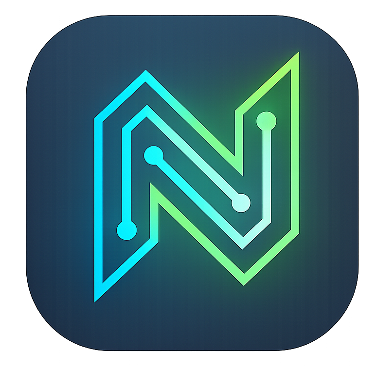
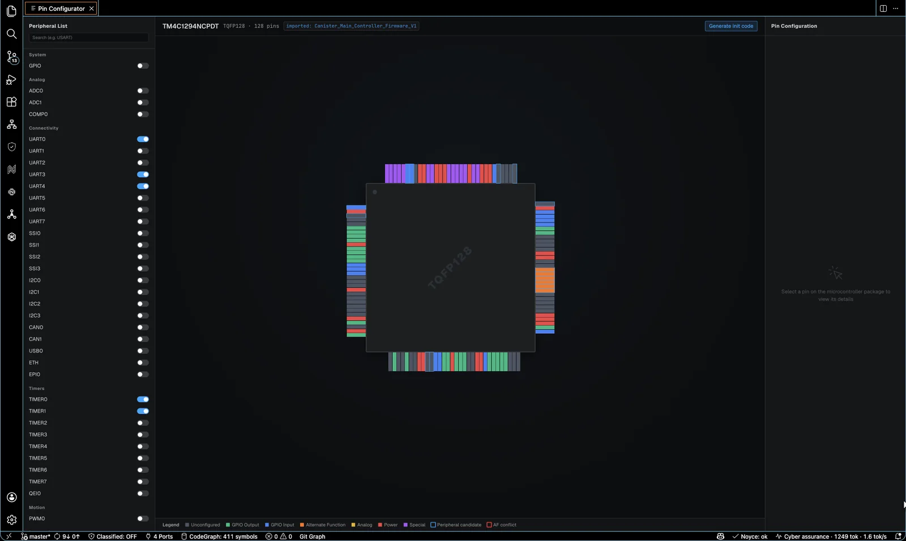
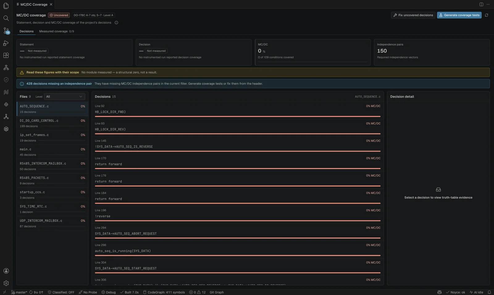
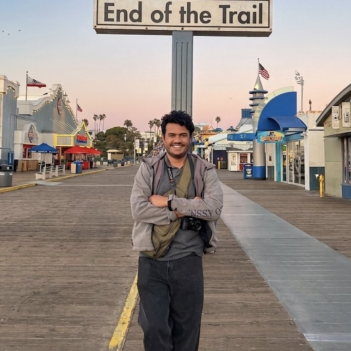

<!doctype html>
<html lang="en">
<head>
  <meta charset="UTF-8" />
  <meta name="viewport" content="width=device-width, initial-scale=1.0" />
  <meta name="theme-color" content="#0f0f0f" />
  <meta name="description" content="Noyce IDE is an AI-native Code-OSS workbench for certifiable embedded firmware. Requirements, native editing, schematic intelligence, CBMC proofs, CodeQL scans, and a hash-chained certification package live in one window." />
  <meta property="og:type" content="website" />
  <meta property="og:title" content="Noyce IDE - AI workbench for certifiable firmware." />
  <meta property="og:description" content="A Code-OSS IDE for DO-178C, ISO 26262, and MISRA teams. Twenty-six full-pane surfaces, native editing, Register Knowledge, CBMC, and CodeQL scans." />
  <meta property="og:url" content="https://noyce-ide.tech/" />
  <meta property="og:image" content="https://noyce-ide.tech/icons_resources/og-image.png?v=1" />
  <meta property="og:image:width" content="1200" />
  <meta property="og:image:height" content="630" />
  <meta property="og:image:alt" content="Noyce IDE - the AI-native Code-OSS workbench for firmware that has to certify." />
  <meta name="twitter:card" content="summary_large_image" />
  <meta name="twitter:image" content="https://noyce-ide.tech/icons_resources/og-image.png?v=1" />
  <link rel="canonical" href="https://noyce-ide.tech/" />
  <title>Noyce IDE - AI workbench for certifiable firmware</title>

  <link rel="icon" type="image/png" sizes="512x512" href="icons_resources/icon_large.png" />
  <link rel="icon" type="image/png" sizes="32x32" href="icons_resources/icon_large.png" />
  <link rel="shortcut icon" type="image/png" href="icons_resources/icon_large.png" />
  <link rel="apple-touch-icon" sizes="180x180" href="icons_resources/icon_large.png" />

  <link rel="preconnect" href="https://fonts.googleapis.com" />
  <link rel="preconnect" href="https://fonts.gstatic.com" crossorigin />
  <link rel="stylesheet" href="https://fonts.googleapis.com/css2?family=Geist:wght@400;500;600&family=Geist+Mono:wght@400;500&family=Inter:wght@400;500;600&display=swap" />

  <script src="https://unpkg.com/react@18.3.1/umd/react.development.js" integrity="sha384-hD6/rw4ppMLGNu3tX5cjIb+uRZ7UkRJ6BPkLpg4hAu/6onKUg4lLsHAs9EBPT82L" crossorigin="anonymous"></script>
  <script src="https://unpkg.com/react-dom@18.3.1/umd/react-dom.development.js" integrity="sha384-u6aeetuaXnQ38mYT8rp6sbXaQe3NL9t+IBXmnYxwkUI2Hw4bsp2Wvmx4yRQF1uAm" crossorigin="anonymous"></script>
  <script src="https://unpkg.com/@babel/standalone@7.29.0/babel.min.js" integrity="sha384-m08KidiNqLdpJqLq95G/LEi8Qvjl/xUYll3QILypMoQ65QorJ9Lvtp2RXYGBFj1y" crossorigin="anonymous"></script>
  <script src="https://cdn.tailwindcss.com"></script>
  <style>
    /* Design tokens follow Arc (github.com/kuratlielia/arc-library) foundation.css, dark theme:
       hue-free oklch neutrals, Geist display over Inter body, large calm radii, one brand gradient used sparingly.
       The gradient is re-keyed from Arc's lavender/peach to the Noyce mark's cyan/green. */
    :root {
      color-scheme: dark;
      --bg: oklch(14.5% 0 0);
      --surface: oklch(18.5% 0 0);
      --surface-raised: oklch(21.5% 0 0);
      --surface-muted: oklch(24% 0 0);
      --surface-hover: oklch(28% 0 0);
      --fg: oklch(96% 0 0);
      --text-2: oklch(77% 0 0);
      --text-3: oklch(64% 0 0);
      --border: oklch(27% 0 0);
      --border-subtle: oklch(22.5% 0 0);
      --border-strong: oklch(38% 0 0);
      --success: oklch(78% .18 150);
      --warning: oklch(83% .17 80);
      --info: oklch(80% .11 220);
      --brand-from: oklch(82% .13 210);
      --brand-to: oklch(86% .17 145);
      --grad-ink: linear-gradient(100deg, var(--brand-from), var(--brand-to));
      --grad-line: linear-gradient(100deg, oklch(58% .1 210), oklch(62% .13 145));
      --shadow-resting: 0 1px 2px oklch(0% 0 0 / .3);
      --shadow-raised: 0 10px 28px oklch(0% 0 0 / .45), 0 2px 6px oklch(0% 0 0 / .3);
      --shadow-floating: 0 30px 80px -20px oklch(0% 0 0 / .75), 0 6px 18px oklch(0% 0 0 / .35);
      --r-control: 1.125rem;
      --r-panel: 1.625rem;
      --r-surface: 2.125rem;
      --font-display: 'Geist', ui-sans-serif, system-ui, sans-serif;
      --font-body: 'Inter', ui-sans-serif, system-ui, sans-serif;
      --font-mono: 'Geist Mono', ui-monospace, 'SF Mono', Menlo, monospace;
      --ease-enter: cubic-bezier(.16,1,.3,1);
      --ease-std: cubic-bezier(.22,1,.36,1);
      --ease-spring: linear(0, 0.0258, 0.09, 0.1763, 0.2732, 0.3724, 0.4683, 0.5573, 0.6376, 0.7082, 0.7689, 0.8202, 0.8628, 0.8976, 0.9256, 0.9476, 0.9648, 0.9778, 0.9875, 0.9945, 0.9994, 1.0026, 1.0047, 1.0058, 1.0062, 1.0062, 1.0059, 1.0055, 1.0049, 1.0043, 1.0036, 1.0031, 1.0025, 1.002, 1.0016, 1.0013, 1);
      --d-fast: 160ms;
      --d-std: 240ms;
      --d-spring: 580ms;
    }
    html { scroll-behavior: smooth; background: var(--bg); }
    body { margin: 0; background: var(--bg); color: var(--fg); font-family: var(--font-body); letter-spacing: -.01em; line-height: 1.5; -webkit-font-smoothing: antialiased; -moz-osx-font-smoothing: grayscale; }
    ::selection { background: oklch(82% .13 210 / .28); color: var(--fg); }
    section[id] { scroll-margin-top: 84px; }
    h1, h2, h3 { text-wrap: balance; }
    p { text-wrap: pretty; }
    :focus:not(:focus-visible) { outline: none; }
    a:focus-visible, button:focus-visible, select:focus-visible { outline: 2px solid oklch(91% 0 0 / .72); outline-offset: 2px; }

    .skip { position: absolute; left: -999px; top: 0; }
    .skip:focus { left: 12px; top: 12px; z-index: 60; background: var(--fg); color: var(--bg); padding: .5rem .75rem; border-radius: 12px; font-size: .875rem; }

    /* Layout */
    .wrap { max-width: 1200px; margin: 0 auto; padding: 0 24px; }

    /* Models the IDE has been run on */
    .tm { display: grid; grid-template-columns: repeat(auto-fill, minmax(210px, 1fr)); gap: 12px; }
    .tm-card { display: flex; flex-direction: column; gap: 10px; padding: 18px; border: 1px solid var(--border); border-radius: var(--r-panel); background: var(--surface); }
    .tm-logo { width: 40px; height: 40px; display: grid; place-items: center; border-radius: 12px; background: var(--surface-raised); border: 1px solid var(--border-subtle); }
    .tm-logo img { width: 24px; height: 24px; }
    .tm-mono { font-family: var(--font-display); font-weight: 600; font-size: 1.05rem; background: var(--grad-ink); -webkit-background-clip: text; background-clip: text; color: transparent; }
    .tm-name { font-family: var(--font-display); font-weight: 600; font-size: 1rem; color: var(--fg); line-height: 1.25; }
    .tm-serve { font-family: var(--font-mono); font-size: .72rem; color: var(--text-3); }
    .tm-ran { margin: 0; font-size: .8125rem; line-height: 1.45; color: var(--text-2); }

    /* Product showcase under the hero: a tabbed frame onto real IDE screens */
    .sc { position: relative; margin-top: 8px; }
    .sc-note { position: absolute; right: 28px; top: -30px; display: flex; align-items: flex-end; gap: 6px; font-family: var(--font-mono); font-size: .75rem; color: var(--text-3); pointer-events: none; }
    .sc-frame { padding: 10px; border: 1px solid var(--border); border-radius: var(--r-surface); background: var(--surface); box-shadow: var(--shadow-floating); }
    .sc-tabs { display: flex; gap: 4px; padding: 2px 2px 10px; overflow-x: auto; scrollbar-width: none; }
    .sc-tabs::-webkit-scrollbar { display: none; }
    .sc-tab { flex: 1 0 auto; display: inline-flex; align-items: center; justify-content: center; gap: 8px; height: 42px; padding: 0 16px; border: 1px solid transparent; border-radius: var(--r-control); background: none; color: var(--text-2); font: inherit; font-size: .875rem; font-weight: 500; white-space: nowrap; cursor: pointer; transition: background-color var(--d-fast) var(--ease-std), border-color var(--d-fast) var(--ease-std), color var(--d-fast) var(--ease-std); }
    .sc-tab:hover { color: var(--fg); background: var(--surface-raised); }
    .sc-tab[aria-selected="true"] { color: var(--fg); background: var(--surface-hover); border-color: var(--border-strong); box-shadow: var(--shadow-resting); }
    .sc-tab:focus-visible { outline: 2px solid var(--info); outline-offset: 2px; }
    .sc-tab { position: relative; overflow: hidden; }
    .sc-prog { position: absolute; left: 10px; right: 10px; bottom: 4px; height: 2px; border-radius: 2px; background: var(--grad-line); transform-origin: left; transform: scaleX(0); }
    .sc-prog[data-run="true"] { animation: sc-fill var(--sc-ms, 6000ms) linear forwards; }
    .sc-prog[data-run="paused"] { animation: sc-fill var(--sc-ms, 6000ms) linear forwards; animation-play-state: paused; }
    @keyframes sc-fill { to { transform: scaleX(1); } }
    .sc-pause { flex: 0 0 auto; display: inline-flex; align-items: center; justify-content: center; width: 42px; height: 42px; border: 1px solid var(--border); border-radius: var(--r-control); background: none; color: var(--text-2); cursor: pointer; }
    .sc-pause:hover { color: var(--fg); background: var(--surface-raised); }
    .sc-pause:focus-visible { outline: 2px solid var(--info); outline-offset: 2px; }
    .rot { display: inline-grid; vertical-align: bottom; }
    .rot > span { grid-area: 1 / 1; color: var(--fg); transition: opacity .45s var(--ease-std), transform .45s var(--ease-std); }
    .rot > span[data-on="false"] { opacity: 0; transform: translateY(.45em); }
    @media (prefers-reduced-motion: reduce) { .sc-prog { display: none; } .rot > span { transition: none; } }
    .sc-stage { position: relative; overflow: hidden; padding: clamp(14px, 3vw, 40px) clamp(14px, 3vw, 40px) 0; border-radius: var(--r-panel); background:
        radial-gradient(120% 90% at 50% 0%, oklch(48% .09 190 / .55), transparent 70%),
        repeating-linear-gradient(115deg, transparent 0 46px, oklch(100% 0 0 / .035) 46px 47px),
        oklch(20% .02 200); }
    .sc-shot { position: relative; display: block; width: 100%; aspect-ratio: 1600 / 958; border: 1px solid var(--border-strong); border-bottom: 0; border-radius: 14px 14px 0 0; overflow: hidden; box-shadow: var(--shadow-raised); background: var(--bg); }
    .sc-shot img { position: absolute; inset: 0; width: 100%; height: 100%; object-fit: cover; object-position: top left; opacity: 0; transition: opacity var(--d-std) var(--ease-std); }
    .sc-shot img[data-on="true"] { opacity: 1; }
    .sc-cta { position: absolute; left: 50%; bottom: 22px; transform: translateX(-50%); display: inline-flex; align-items: center; gap: 8px; height: 42px; padding: 0 18px; border-radius: 999px; background: var(--grad-ink); color: oklch(18% 0 0); font-size: .875rem; font-weight: 600; text-decoration: none; white-space: nowrap; box-shadow: var(--shadow-floating); transition: transform var(--d-fast) var(--ease-std); }
    .sc-cta:hover { transform: translateX(-50%) translateY(-1px); }
    .sc-meta { display: flex; flex-wrap: wrap; align-items: baseline; justify-content: space-between; gap: 6px 24px; padding: 14px 8px 4px; }
    .sc-meta p { margin: 0; max-width: 62ch; color: var(--text-2); font-size: .9375rem; line-height: 1.5; }
    @media (max-width: 640px) { .sc-note { display: none; } .sc-tab { height: 38px; padding: 0 12px; font-size: .8125rem; } .sc-cta { height: 36px; font-size: .8125rem; bottom: 12px; } }
    @media (prefers-reduced-motion: reduce) { .sc-shot img, .sc-tab, .sc-cta { transition: none; } }
    @media (max-width: 640px) { .wrap { padding: 0 16px; } }
    .section { padding: clamp(72px, 9vw, 120px) 0; }

    /* Type */
    .h1 { margin: 0; font-family: var(--font-display); font-weight: 500; font-size: clamp(2.75rem, 1.4rem + 4.8vw, 5.25rem); letter-spacing: -.04em; line-height: 1; }
    .h2 { margin: 0; font-family: var(--font-display); font-weight: 500; font-size: clamp(2rem, 1.3rem + 2.4vw, 3.25rem); letter-spacing: -.03em; line-height: 1.08; }
    .h3 { margin: 0; font-family: var(--font-display); font-weight: 500; font-size: 1.125rem; letter-spacing: -.015em; line-height: 1.3; }
    .h3-lg { font-size: clamp(1.375rem, 1.1rem + .9vw, 1.75rem); letter-spacing: -.025em; line-height: 1.15; }
    .lede { margin: 16px 0 0; max-width: 42rem; color: var(--text-2); font-size: 1.0625rem; line-height: 1.55; }
    .body { color: var(--text-2); font-size: .9375rem; line-height: 1.6; }
    .small { color: var(--text-3); font-size: .8125rem; line-height: 1.5; }
    .muted { color: var(--text-3); }
    .num { font-family: var(--font-display); font-weight: 500; letter-spacing: -.035em; line-height: 1; font-variant-numeric: tabular-nums; }
    .mono { font-family: var(--font-mono); letter-spacing: 0; }
    .code { font-family: var(--font-mono); font-size: .875em; color: var(--fg); background: var(--surface-muted); border: 1px solid var(--border); border-radius: 6px; padding: 0 .35em; letter-spacing: 0; }
    .ink { background: var(--grad-ink); -webkit-background-clip: text; background-clip: text; color: transparent; }
    .eyebrow { display: inline-flex; align-items: center; gap: 8px; margin-bottom: 18px; color: var(--text-3); font-size: .875rem; font-weight: 500; }
    .link { color: var(--fg); text-decoration: underline; text-decoration-color: var(--border-strong); text-underline-offset: 3px; } .link:hover { text-decoration-color: var(--fg); }
    .label { color: var(--text-3); font-size: .8125rem; font-weight: 500; }

    /* Surfaces: a tile is Arc's card; a well is the inset surface nested inside one. */
    .tile { position: relative; min-width: 0; background: var(--surface); border: 1px solid var(--border-subtle); border-radius: var(--r-panel); box-shadow: inset 0 1px 0 oklch(100% 0 0 / .035), var(--shadow-resting); }
    .tile-pad { padding: clamp(20px, 2.2vw, 28px); }
    .lift { transition: border-color var(--d-fast) var(--ease-std), box-shadow var(--d-std) var(--ease-std), transform var(--d-std) var(--ease-std); }
    @media (hover: hover) and (pointer: fine) { .lift:hover { border-color: var(--border-strong); box-shadow: var(--shadow-raised); transform: translateY(-2px); } }
    .well { background: var(--surface-raised); border: 1px solid var(--border); border-radius: var(--r-control); }
    .frame { overflow: hidden; border: 1px solid var(--border); border-radius: calc(var(--r-panel) - 10px); background: var(--surface-raised); }
    .frame img, .frame video { display: block; width: 100%; height: auto; }
    .hair > * + * { border-top: 1px solid var(--border-subtle); }
    .faq summary { list-style: none; cursor: pointer; display: flex; align-items: center; justify-content: space-between; gap: 16px; padding: 18px 0; }
    .faq summary::-webkit-details-marker { display: none; }
    .faq summary .faq-chev { flex-shrink: 0; color: var(--text-3, var(--text-2)); transition: transform .2s ease; }
    .faq details[open] summary .faq-chev { transform: rotate(180deg); }
    .faq details > p { margin: 0 0 20px; max-width: 46rem; }
    .dots { background-image: radial-gradient(oklch(100% 0 0 / .06) 1px, transparent 1px); background-size: 18px 18px; }

    /* Controls */
    .btn { display: inline-flex; align-items: center; justify-content: center; gap: 8px; height: 44px; padding: 0 18px; border: 1px solid transparent; border-radius: var(--r-control); font: inherit; font-size: .875rem; font-weight: 500; white-space: nowrap; text-decoration: none; cursor: pointer; -webkit-tap-highlight-color: transparent; transition: background-color var(--d-fast) var(--ease-std), border-color var(--d-fast) var(--ease-std), color var(--d-fast) var(--ease-std), transform var(--d-fast) var(--ease-std); }
    .btn:active { transform: scale(.97); }
    .btn svg { flex: none; }
    .btn-primary { background: var(--fg); color: var(--bg); }
    .btn-primary:hover { background: oklch(88% 0 0); }
    .btn-secondary { background: var(--surface-muted); color: var(--fg); border-color: var(--border); }
    .btn-secondary:hover { background: var(--surface-hover); border-color: var(--border-strong); }
    .btn-ghost { background: transparent; color: var(--text-2); }
    .btn-ghost:hover { background: var(--surface-muted); color: var(--fg); }
    .btn-sm { height: 36px; padding: 0 14px; border-radius: 12px; }
    .btn-lg { height: 50px; padding: 0 22px; font-size: .9375rem; }
    .btn-block { width: 100%; }

    .chip { display: inline-flex; align-items: center; gap: 6px; height: 26px; padding: 0 10px; border: 1px solid var(--border); border-radius: 999px; background: var(--surface-muted); color: var(--text-2); font-size: .75rem; font-weight: 500; white-space: nowrap; }
    .chip-ok { background: oklch(78% .18 150 / .12); border-color: transparent; color: var(--success); }
    .chip-warn { background: oklch(83% .17 80 / .12); border-color: transparent; color: var(--warning); }
    .chip-info { background: oklch(80% .11 220 / .12); border-color: transparent; color: var(--info); }
    .chip-dot::before { content: ''; width: 6px; height: 6px; border-radius: 50%; background: currentColor; }

    /* Segmented control: Arc's signature. The thumb slides on a spring under the pressed item. */
    .seg { position: relative; display: inline-flex; gap: 2px; max-width: 100%; padding: 3px; border: 1px solid var(--border); border-radius: 999px; background: var(--surface-muted); overflow-x: auto; scrollbar-width: none; }
    .seg::-webkit-scrollbar { display: none; }
    .seg button { position: relative; z-index: 1; flex: none; height: 32px; padding: 0 14px; border: 0; border-radius: 999px; background: none; color: var(--text-2); font: inherit; font-size: .8125rem; font-weight: 500; white-space: nowrap; cursor: pointer; -webkit-tap-highlight-color: transparent; transition: color var(--d-fast) var(--ease-std); }
    .seg button:hover, .seg button[aria-pressed="true"] { color: var(--fg); }
    .seg-thumb { position: absolute; z-index: 0; top: 3px; bottom: 3px; left: 0; border: 1px solid var(--border-strong); border-radius: 999px; background: var(--surface-hover); box-shadow: var(--shadow-resting); transition: transform var(--d-spring) var(--ease-spring), width var(--d-spring) var(--ease-spring), opacity var(--d-fast) var(--ease-std); pointer-events: none; }
    .seg-sm button { height: 26px; padding: 0 10px; font-size: .75rem; }

    .field { width: 100%; height: 44px; padding: 0 14px; border: 1px solid var(--border); border-radius: 14px; background: var(--surface-raised); color: var(--fg); font: inherit; font-size: .9375rem; transition: border-color var(--d-fast) var(--ease-std), background-color var(--d-fast) var(--ease-std); }
    .field::placeholder { color: oklch(52% 0 0); }
    .field:hover { border-color: var(--border-strong); }
    .field:focus { outline: none; border-color: oklch(70% 0 0); background: var(--surface-muted); }
    textarea.field { height: auto; padding: 12px 14px; resize: vertical; min-height: 104px; }
    select.field { appearance: none; padding-right: 40px; cursor: pointer; }
    .field-label { display: block; margin-bottom: 8px; color: var(--text-2); font-size: .8125rem; font-weight: 500; }

    /* Header: Arc site-header, centered variant. */
    .hdr { position: fixed; top: 0; left: 0; right: 0; z-index: 50; border-bottom: 1px solid transparent; transition: background-color var(--d-std) var(--ease-std), border-color var(--d-std) var(--ease-std); }
    .hdr[data-scrolled] { background: color-mix(in oklab, var(--bg) 80%, transparent); border-bottom-color: var(--border-subtle); -webkit-backdrop-filter: blur(18px) saturate(1.4); backdrop-filter: blur(18px) saturate(1.4); }
    .hdr-bar { display: flex; align-items: center; justify-content: space-between; height: 64px; }
    @media (min-width: 1024px) { .hdr-bar { display: grid; grid-template-columns: 1fr auto 1fr; } }
    .hdr-nav { position: relative; display: flex; gap: 2px; padding: 3px; border: 1px solid var(--border); border-radius: 999px; background: color-mix(in oklab, var(--surface-muted) 85%, transparent); }
    .hdr-nav a { position: relative; z-index: 1; display: inline-flex; align-items: center; height: 32px; padding: 0 14px; border-radius: 999px; color: var(--text-2); font-size: .875rem; font-weight: 500; text-decoration: none; transition: color var(--d-fast) var(--ease-std); }
    .hdr-nav a:hover, .hdr-nav a[data-current] { color: var(--fg); }
    .hdr-menu { border-top: 1px solid var(--border-subtle); padding: 8px 0 16px; }
    .hdr-menu a { display: flex; align-items: center; height: 44px; padding: 0 4px; color: var(--text-2); font-size: .9375rem; text-decoration: none; }
    .hdr-menu a:hover { color: var(--fg); }

    /* Hero mosaic: the Arc banner. A center card held by a field of live tiles that fades at the edges. */
    .hero { position: relative; min-height: 100svh; overflow: clip; }
    .mosaic { display: grid; gap: 16px; }
    .mt { display: flex; flex-direction: column; min-width: 0; min-height: 0; overflow: hidden; padding: 14px; background: var(--surface); border: 1px solid var(--border-subtle); border-radius: 22px; box-shadow: inset 0 1px 0 oklch(100% 0 0 / .035); }
    .mt-head { display: flex; align-items: center; justify-content: space-between; gap: 8px; margin: 2px 4px 10px; font-size: .75rem; font-weight: 500; color: var(--text-2); white-space: nowrap; }
    .mt-head span:last-child { color: var(--text-3); overflow: hidden; text-overflow: ellipsis; }
    .mt-shot { flex: 1; min-height: 0; overflow: hidden; border: 1px solid var(--border); border-radius: 12px; background: var(--surface-raised); }
    .mt-shot img { display: block; width: 100%; height: 100%; object-fit: cover; object-position: left top; }
    .hero-card { display: flex; flex-direction: column; align-items: center; justify-content: center; padding: 40px 32px; text-align: center; background: var(--surface); border: 1px solid var(--border); border-radius: var(--r-surface); box-shadow: inset 0 1px 0 oklch(100% 0 0 / .05), var(--shadow-floating); }
    .hero-mark { width: 64px; height: 64px; object-fit: contain; }
    @media (min-width: 768px) {
      .hero { display: grid; min-height: max(100svh, 780px); }
      .mosaic { position: absolute; top: 0; bottom: 0; left: -40%; width: 180%; padding: 88px 0 24px; grid-template-columns: repeat(7, minmax(0, 1fr)); grid-template-rows: minmax(0, 1fr) minmax(330px, 1.55fr) minmax(0, 1fr); -webkit-mask-image: radial-gradient(ellipse 30% 72% at 50% 52%, #000 58%, transparent 100%); mask-image: radial-gradient(ellipse 30% 72% at 50% 52%, #000 58%, transparent 100%); }
      .mosaic > * { grid-column: var(--c); grid-row: var(--r); }
    }
    @media (min-width: 1100px) { .mosaic { left: -25%; width: 150%; -webkit-mask-image: radial-gradient(ellipse 36% 72% at 50% 52%, #000 58%, transparent 100%); mask-image: radial-gradient(ellipse 36% 72% at 50% 52%, #000 58%, transparent 100%); } }
    @media (max-width: 767px) {
      .hero { padding: 88px 16px 40px; }
      .mosaic { grid-template-columns: 1fr 1fr; }
      .mosaic .hero-card { grid-column: 1 / -1; order: -1; padding: 36px 20px; }
      .mosaic .m-hide { display: none; }
      .mt { min-height: 168px; }
    }
    @keyframes tile-in { from { opacity: 0; transform: scale(.965); filter: blur(6px); } }
    .tile-in { animation: tile-in 900ms var(--ease-enter) both; }

    .spark-line { stroke-dasharray: 400; stroke-dashoffset: 400; animation: draw 1600ms var(--ease-enter) 500ms forwards; }
    @keyframes draw { to { stroke-dashoffset: 0; } }

    /* Terminal */
    .term { font-family: var(--font-mono); font-size: 12.5px; line-height: 1.85; letter-spacing: 0; }
    .term-bar { display: flex; align-items: center; gap: 6px; padding: 10px 14px; border-bottom: 1px solid var(--border); }
    .term-bar i { width: 9px; height: 9px; border-radius: 50%; background: var(--border-strong); }
    .caret { display: inline-block; width: 7px; height: 1em; margin-left: 2px; vertical-align: -2px; background: var(--brand-from); animation: blink 1s steps(1) infinite; }
    @keyframes blink { 50% { opacity: 0; } }

    /* Step list (walkthrough): Arc's checklist, the active row expands on a grid-rows transition. */
    .step { display: block; width: 100%; padding: 16px 18px; border: 0; border-radius: 18px; background: transparent; color: inherit; font: inherit; text-align: left; cursor: pointer; transition: background-color var(--d-fast) var(--ease-std); }
    .step:hover { background: var(--surface-raised); }
    .step[aria-pressed="true"] { background: var(--surface-raised); box-shadow: inset 0 0 0 1px var(--border); }
    .step-n { display: grid; place-items: center; flex: none; width: 26px; height: 26px; border-radius: 50%; border: 1px solid var(--border-strong); color: var(--text-3); font-family: var(--font-mono); font-size: 11px; transition: all var(--d-std) var(--ease-std); }
    .step[aria-pressed="true"] .step-n { border-color: transparent; background: var(--grad-ink); color: oklch(18% 0 0); }
    .step-n.done { border-color: transparent; background: oklch(78% .18 150 / .14); color: var(--success); }
    .acc { display: grid; grid-template-rows: 0fr; transition: grid-template-rows var(--d-std) var(--ease-std); }
    .acc > div { overflow: hidden; }
    .acc[data-open] { grid-template-rows: 1fr; }

    /* Logo marquee */
    .marquee { overflow: hidden; -webkit-mask-image: linear-gradient(90deg, transparent, #000 12%, #000 88%, transparent); mask-image: linear-gradient(90deg, transparent, #000 12%, #000 88%, transparent); }
    .marquee-track { display: flex; width: max-content; animation: roll 36s linear infinite; }
    .marquee:hover .marquee-track { animation-play-state: paused; }
    .marquee-cell { flex: none; width: 320px; display: flex; flex-direction: column; align-items: center; justify-content: center; gap: 10px; padding: 8px 20px; }
    @keyframes roll { to { transform: translate3d(-50%, 0, 0); } }

    /* Diagrams: LAN architecture and V model */
    .diagram { padding: clamp(18px, 2.4vw, 28px); }
    .dg-cap { margin: 0 0 18px; color: var(--text-3); font-size: .75rem; font-weight: 500; letter-spacing: .02em; }
    .dg-row { display: grid; grid-template-columns: 1fr auto minmax(0, 1.2fr) auto 1fr; gap: 10px; align-items: stretch; }
    .dg-mid { display: flex; flex-direction: column; align-items: center; width: 100%; max-width: 28rem; margin: 0 auto; }
    .dg-arrow { display: flex; align-items: center; justify-content: center; min-width: 1.25rem; color: var(--text-3); user-select: none; }
    .dg-arrow.down { flex-direction: column; gap: 2px; min-height: 2.75rem; padding: 6px 0; font-size: 11px; text-align: center; }
    .node { width: 100%; min-height: 5.4rem; padding: 14px 16px; border: 1px solid var(--border); border-radius: 16px; background: var(--surface-raised); color: var(--fg); font: inherit; text-align: left; cursor: pointer; transition: border-color var(--d-fast) var(--ease-std), background-color var(--d-fast) var(--ease-std), box-shadow var(--d-std) var(--ease-std); }
    .node:hover { border-color: var(--border-strong); }
    .node.is-on { border-color: oklch(70% .1 190); background: var(--surface-hover); box-shadow: 0 0 0 3px oklch(82% .13 200 / .12); }
    .node.is-pair { border-color: oklch(52% .07 190); }
    .node .k { display: block; margin-bottom: 4px; color: var(--text-3); font-size: .6875rem; font-weight: 500; letter-spacing: .04em; text-transform: uppercase; }
    .node .t { display: block; margin-bottom: 2px; font-family: var(--font-display); font-size: .975rem; font-weight: 500; letter-spacing: -.01em; }
    .node .s { display: block; color: var(--text-3); font-size: .75rem; }
    @media (max-width: 767px) { .dg-row { grid-template-columns: 1fr; } .dg-row .dg-arrow { min-height: 1.5rem; transform: rotate(90deg); } }
    .v-row { display: grid; grid-template-columns: minmax(0, 1fr) minmax(3.5rem, auto) minmax(0, 1fr); gap: 10px; align-items: stretch; margin-bottom: 10px; padding-left: calc(var(--vi) * 5%); padding-right: calc(var(--vi) * 5%); }
    .v-link { position: relative; display: flex; align-items: center; justify-content: center; }
    .v-link::before { content: ''; position: absolute; left: 0; right: 0; top: 50%; border-top: 1px dashed var(--border-strong); }
    .v-link.is-on::before { border-top: 1px solid oklch(70% .1 190); }
    .v-rel { position: relative; padding: 2px 8px; border-radius: 999px; background: var(--surface); color: var(--text-2); font-size: 10px; font-weight: 500; letter-spacing: .04em; text-transform: uppercase; white-space: nowrap; }
    @media (max-width: 767px) { .v-row { grid-template-columns: 1fr; padding: 0 !important; } .v-link { min-height: 1.75rem; } .v-link::before { display: none; } }

    /* Table */
    .tbl { width: 100%; min-width: 46rem; border-collapse: separate; border-spacing: 0; text-align: left; }
    .tbl th { padding: 0 20px 14px; color: var(--text-3); font-size: .75rem; font-weight: 500; border-bottom: 1px solid var(--border); }
    .tbl td { padding: 16px 20px; color: var(--text-3); font-size: .875rem; border-bottom: 1px solid var(--border-subtle); }
    .tbl tr:last-child td { border-bottom: 0; }
    .tbl td:first-child { color: var(--text-2); font-weight: 500; }
    .tbl tr.is-us td { background: var(--surface-raised); color: var(--fg); }
    .tbl tr.is-us td:first-child { border-radius: 14px 0 0 14px; }
    .tbl tr.is-us td:last-child { border-radius: 0 14px 14px 0; }


    /* Scroll storytelling (Apple-style): pinned stages driven by one --p progress var per section. */
    .display { margin: 0; font-family: var(--font-display); font-weight: 500; font-size: clamp(2.5rem, 1.1rem + 5vw, 5.75rem); letter-spacing: -.045em; line-height: 1.02; }
    .statement { margin: 0; max-width: 62rem; font-family: var(--font-display); font-weight: 500; font-size: clamp(1.9rem, 1.05rem + 3.1vw, 3.75rem); letter-spacing: -.035em; line-height: 1.12; }
    .statement .w { opacity: clamp(.14, calc(var(--p, 1) * var(--n) * 1.15 - var(--i)), 1); transition: opacity 140ms linear; }
    .window { position: relative; overflow: hidden; border: 1px solid var(--border); border-radius: 18px; background: #0e0e0e; box-shadow: var(--shadow-floating); }
    .window-bar { display: flex; align-items: center; gap: 7px; height: 32px; padding: 0 14px; border-bottom: 1px solid var(--border-subtle); background: var(--surface); }
    .window-bar i { width: 10px; height: 10px; border-radius: 50%; background: var(--border-strong); }
    .window-bar span { flex: 1; margin-right: 44px; text-align: center; color: var(--text-3); font-size: 11.5px; font-weight: 500; white-space: nowrap; overflow: hidden; text-overflow: ellipsis; }
    .window-stage { position: relative; aspect-ratio: 1600 / 988; background: #0e0e0e; }
    .window-stage video { position: absolute; inset: 0; width: 100%; height: 100%; object-fit: cover; }
    .window.film .window-stage { aspect-ratio: 16 / 9; }
    .window.film .window-stage video { object-fit: contain; }
    .glow { position: relative; isolation: isolate; }
    .glow::before { content: ''; position: absolute; inset: 12% 8% -4%; z-index: -1; border-radius: 50%; background: var(--grad-ink); filter: blur(100px); opacity: .14; pointer-events: none; }

    .reel-pin { padding: 24px 0 72px; }
    .reel-head { text-align: center; margin-bottom: clamp(28px, 4vw, 48px); }
    .reel-win { width: min(100%, 1120px); margin: 0 auto; }
    @media (min-width: 768px) and (prefers-reduced-motion: no-preference) {
      .reel-track { height: 220vh; }
      .reel-pin { position: sticky; top: 0; height: 100vh; padding: 0; display: flex; flex-direction: column; justify-content: center; overflow: clip; }
      .reel-head { position: absolute; left: 0; right: 0; top: max(96px, 12vh); margin: 0 auto; opacity: clamp(0, calc(1 - var(--p, 0) * 2.4), 1); transform: translateY(calc(var(--p, 0) * -48px)); }
      .reel-pin > .wrap { width: 100%; }
      .reel-win { width: min(100%, calc((100vh - 220px) * 1.778)); margin-top: 56px; transform: translateY(calc((1 - var(--p, 0)) * 16vh)) scale(calc(.6 + .4 * var(--p, 0))); transform-origin: 50% 50%; will-change: transform; }
      .reel-cap { opacity: clamp(0, calc(var(--p, 0) * 3 - 2), 1); }
    }

    .story-pin { position: sticky; top: 0; height: 100vh; display: flex; align-items: center; padding-top: 64px; }
    .story-grid { display: grid; grid-template-columns: minmax(0, .8fr) minmax(0, 1.65fr); gap: clamp(32px, 4.5vw, 72px); align-items: center; width: 100%; }
    .ch { position: relative; display: block; width: 100%; padding: 8px 0 8px 22px; border: 0; background: none; color: inherit; font: inherit; text-align: left; cursor: pointer; -webkit-tap-highlight-color: transparent; }
    .ch-rail { position: absolute; left: 0; top: 12px; bottom: 12px; width: 2px; overflow: hidden; border-radius: 2px; background: var(--border); }
    .ch-rail b { display: block; width: 100%; border-radius: 2px; background: var(--grad-ink); }
    .ch-k { display: block; color: var(--text-3); font-size: .75rem; font-weight: 500; letter-spacing: .02em; transition: color var(--d-std) var(--ease-std); }
    .ch-t { display: block; font-family: var(--font-display); font-size: clamp(1.05rem, .85rem + .6vw, 1.4rem); font-weight: 500; letter-spacing: -.025em; line-height: 1.22; color: var(--text-3); transition: color var(--d-std) var(--ease-std); }
    .ch:not([aria-current]) .ch-k { display: none; }
    .ch:hover .ch-t { color: var(--text-2); }
    .ch[aria-current] .ch-t { color: var(--fg); }
    .ch[aria-current] .ch-k { color: var(--text-2); }
    .ch-d { display: grid; grid-template-rows: 0fr; transition: grid-template-rows 420ms var(--ease-std); }
    .ch-d > p { overflow: hidden; margin: 0; }
    .ch[aria-current] .ch-d { grid-template-rows: 1fr; }
    .stage-layer { opacity: 0; transform: scale(1.015); transition: opacity 520ms var(--ease-std), transform 900ms var(--ease-enter); }
    .stage-layer[data-on] { opacity: 1; transform: none; }
    .story-count { font-family: var(--font-mono); font-size: 12px; color: var(--text-3); letter-spacing: 0; }
    .story-card + .story-card { margin-top: 56px; }

    @media (prefers-reduced-motion: reduce) {
      html { scroll-behavior: auto; }
      .tile-in, .spark-line, .caret, .marquee-track { animation: none !important; }
      .spark-line { stroke-dashoffset: 0; }
      .marquee { -webkit-mask-image: none; mask-image: none; }
      .seg-thumb, .acc, .lift { transition: none !important; }
    }

    /* 3D diagrams: SVG text sizes are in diagram units, not CSS pixels */
    .sys-tile { background: radial-gradient(120% 90% at 70% 0%, oklch(24% .03 200 / .55), transparent 60%), var(--surface); }
    .sys-canvas, .kg-canvas { position: relative; touch-action: pan-y; user-select: none; -webkit-user-select: none; }
    .sys-canvas svg, .kg-canvas svg { display: block; width: 100%; height: auto; overflow: visible; }
    .sys-canvas { padding: clamp(8px, 2vw, 24px) clamp(8px, 2vw, 28px) 0; }
    .sys-hit { cursor: pointer; }
    .sys-t { fill: var(--fg); font: 600 27px var(--font-display); letter-spacing: -.01em; pointer-events: none; paint-order: stroke; stroke: oklch(16% 0 0 / .85); stroke-width: 5px; }
    .sys-s { fill: var(--text-3); font: 500 19px var(--font-mono); pointer-events: none; paint-order: stroke; stroke: oklch(16% 0 0 / .85); stroke-width: 4px; }
    .sys-label { transition: opacity .3s var(--ease-std); }
    .sys-plat { fill: var(--text-2); font: 500 32px var(--font-display); letter-spacing: -.02em; }
    .sys-floor { fill: var(--text-3); font: 500 18px var(--font-mono); letter-spacing: .14em; }
    .sys-pulse { stroke-dasharray: 2 26; animation: sys-flow 1.1s linear infinite; }
    @keyframes sys-flow { to { stroke-dashoffset: -28; } }
    .sys-card { position: absolute; left: clamp(16px, 3vw, 36px); top: clamp(16px, 3vw, 32px); width: min(23rem, 40%); padding: 18px 20px; border: 1px solid oklch(100% 0 0 / .1); border-radius: var(--r-control); background: oklch(18.5% .005 220 / .94); box-shadow: inset 0 1px 0 oklch(100% 0 0 / .06), var(--shadow-raised); animation: sys-card .32s var(--ease-enter); }
    @keyframes sys-card { from { opacity: 0; transform: translateY(6px); filter: blur(3px); } }
    .sys-legend { display: grid; grid-template-columns: repeat(4, minmax(0, 1fr)); border-top: 1px solid var(--border-subtle); }
    .sys-col { padding: 20px clamp(16px, 2vw, 24px) 22px; transition: background-color var(--d-std) var(--ease-std); }
    .sys-col + .sys-col { border-left: 1px solid var(--border-subtle); }
    .sys-col[data-on] { background: oklch(100% 0 0 / .025); }
    .sys-chip, .kg-q { display: inline-flex; align-items: center; gap: 6px; height: 28px; padding: 0 11px; border: 1px solid var(--border); border-radius: 999px; background: var(--surface-muted); color: var(--text-2); font: inherit; font-size: .75rem; font-weight: 500; cursor: pointer; transition: color var(--d-fast) var(--ease-std), border-color var(--d-fast) var(--ease-std), background-color var(--d-fast) var(--ease-std), transform var(--d-fast) var(--ease-std); }
    .sys-chip:active, .kg-q:active { transform: scale(.97); }
    .sys-chip[aria-pressed="true"], .kg-q[aria-pressed="true"] { color: oklch(18% 0 0); border-color: transparent; background: var(--grad-ink); }
    @media (hover: hover) and (pointer: fine) { .sys-chip:hover, .kg-q:hover { color: var(--fg); border-color: var(--border-strong); } }
    @media (max-width: 1023px) {
      .sys-card { position: static; width: auto; margin: 4px 16px 18px; animation: none; }
      .sys-legend { grid-template-columns: repeat(2, minmax(0, 1fr)); }
      .sys-col:nth-child(3) { border-left: 0; }
      .sys-col:nth-child(n+3) { border-top: 1px solid var(--border-subtle); }
    }
    @media (max-width: 640px) {
      .sys-legend { grid-template-columns: 1fr; }
      .sys-col + .sys-col { border-left: 0; border-top: 1px solid var(--border-subtle); }
      .sys-t { font-size: 26px; } .sys-s { display: none; }
    }

    .kg-bar { display: flex; flex-wrap: wrap; align-items: center; justify-content: space-between; gap: 12px; padding: 18px clamp(16px, 2vw, 24px); border-bottom: 1px solid var(--border-subtle); }
    .kg-canvas { padding: 8px clamp(8px, 2vw, 24px) 0; background: radial-gradient(90% 70% at 50% 40%, oklch(24% .04 190 / .5), transparent 70%); }
    .kg-node { transition: opacity .4s var(--ease-std); animation: kg-in .55s var(--ease-enter) both; }
    @keyframes kg-in { from { opacity: 0; transform: translateY(-18px); } }
    .kg-edge { transition: opacity .35s var(--ease-std); animation: kg-fade .6s var(--ease-enter) both; }
    @keyframes kg-fade { from { opacity: 0; } }
    .kg-tier { fill: var(--text-3); font: 500 17px var(--font-mono); letter-spacing: .08em; text-transform: uppercase; }
    .kg-label { fill: var(--text-2); font: 500 17px var(--font-mono); paint-order: stroke; stroke: oklch(15% 0 0 / .9); stroke-width: 5px; pointer-events: none; }
    .kg-hot { fill: var(--fg); font-weight: 600; }
    .kg-src { fill: oklch(88% .12 175); font: 500 15px var(--font-mono); paint-order: stroke; stroke: oklch(15% 0 0 / .9); stroke-width: 5px; }
    .kg-badge { fill: var(--warning); font: 600 15px var(--font-mono); letter-spacing: .06em; text-transform: uppercase; paint-order: stroke; stroke: oklch(15% 0 0 / .9); stroke-width: 5px; }
    .kg-foot { display: grid; grid-template-columns: auto minmax(0, 1fr); gap: 16px 32px; align-items: center; padding: 18px clamp(16px, 2vw, 24px) 22px; border-top: 1px solid var(--border-subtle); }
    .kg-ledger { display: flex; align-items: center; gap: 0; flex-wrap: wrap; }
    .kg-snap { display: inline-flex; align-items: center; gap: 6px; height: 28px; padding: 0 10px; border: 1px solid var(--border); border-radius: 8px; color: var(--text-3); font-size: .75rem; transition: color var(--d-std) var(--ease-std), border-color var(--d-std) var(--ease-std), background-color var(--d-std) var(--ease-std); }
    .kg-snap .mono { font-size: .6875rem; }
    .kg-snap[data-on] { color: var(--fg); border-color: oklch(80% .12 170 / .45); background: oklch(80% .12 170 / .08); }
    .kg-link { width: 14px; height: 1px; background: var(--border); transition: background-color var(--d-std); }
    .kg-link[data-on] { background: oklch(80% .12 170 / .6); }
    .kg-explain { animation: sys-card .32s var(--ease-enter); min-height: 4.5rem; }
    .kg-keys { display: flex; flex-wrap: wrap; align-items: center; gap: 10px 20px; }
    .kg-key { width: 10px; height: 10px; border-radius: 3px; }
    @media (max-width: 1023px) { .kg-foot { grid-template-columns: 1fr; } }
    @media (prefers-reduced-motion: reduce) {
      .sys-pulse { animation: none; stroke-dasharray: none; opacity: .5; }
      .kg-node, .kg-edge, .sys-card, .kg-explain { animation: none; }
    }

    /* Anatomy: real screens as plates in an exploded CSS 3D stack */
    .an-pin-wrap { position: sticky; top: 0; height: 100vh; display: flex; align-items: center; overflow: hidden; }
    .an-grid { position: relative; width: 100%; display: grid; grid-template-columns: minmax(0, 5fr) minmax(0, 7fr); gap: 40px; align-items: center; }
    .an-lines { position: absolute; inset: 0; width: 100%; height: 100%; pointer-events: none; overflow: visible; }
    .an-lines path { fill: none; stroke: oklch(86% .12 185 / .8); stroke-width: 1.5; stroke-dasharray: 3 5; transition: opacity .25s var(--ease-std); }
    .an-list { list-style: none; margin: 0; padding: 0; display: flex; flex-direction: column; gap: 4px; }
    .an-list button { display: flex; gap: 14px; width: 100%; padding: 14px 16px; border: 1px solid transparent; border-radius: var(--r-control); background: none; color: inherit; font: inherit; text-align: left; cursor: pointer; transition: background-color var(--d-std) var(--ease-std), border-color var(--d-std) var(--ease-std), transform var(--d-fast) var(--ease-std); }
    .an-list button:active { transform: scale(.985); }
    .an-list li[data-on] button { background: var(--surface); border-color: var(--border); box-shadow: inset 0 1px 0 oklch(100% 0 0 / .035); }
    .an-list li:not([data-on]) .h3 { color: var(--text-3); }
    .an-num { flex: none; display: grid; place-items: center; width: 28px; height: 28px; margin-top: 2px; border: 1px solid var(--border-strong); border-radius: 999px; font-size: .75rem; color: var(--text-2); transition: background-color var(--d-std), color var(--d-std), border-color var(--d-std); }
    .an-list li[data-on] .an-num { border-color: transparent; background: var(--grad-ink); color: oklch(18% 0 0); }
    .an-desc { display: block; max-height: 0; opacity: 0; overflow: hidden; transition: max-height .45s var(--ease-std), opacity .3s var(--ease-std), margin .3s var(--ease-std); }
    .an-list li[data-on] .an-desc { max-height: 9rem; opacity: 1; margin-top: 6px; }

    .an-scene { --gap: 92px; perspective: 2600px; height: min(80vh, 740px); display: grid; place-items: center; }
    .an-stage { position: relative; width: min(100%, 560px); aspect-ratio: 2000 / 1226; transform-style: preserve-3d;
      transform: translateY(calc(var(--ex, 0) * 175px)) rotateX(calc(57deg + var(--tip, 0deg))) rotateZ(calc(-36deg + var(--lean, 0deg)));
      transition: transform .7s var(--ease-std); }
    .an-plate { --lift: 0px; position: absolute; inset: 0; padding: 0; border: 0; background: none; cursor: pointer; transform-style: preserve-3d;
      transform: translateZ(calc(var(--i) * var(--ex, 0) * var(--gap) + var(--lift)));
      transition: transform .55s var(--ease-std), filter .35s var(--ease-std); }
    .an-plate img { display: block; width: 100%; height: 100%; border-radius: 10px; border: 1px solid oklch(100% 0 0 / .14); box-shadow: 0 40px 70px -24px oklch(0% 0 0 / .85); user-select: none; -webkit-user-drag: none; transition: box-shadow .35s var(--ease-std); }
    .an-plate::before { content: ''; position: absolute; left: 4px; right: 4px; top: calc(100% - 1px); height: 9px; transform-origin: top; transform: rotateX(-90deg); border-radius: 0 0 6px 6px; background: oklch(26% .05 var(--h)); }
    .an-plate::after { content: ''; position: absolute; top: 4px; bottom: 4px; left: calc(100% - 1px); width: 9px; transform-origin: left; transform: rotateY(90deg); border-radius: 0 6px 6px 0; background: oklch(20% .05 var(--h)); }
    .an-plate[data-on] { --lift: 44px; }
    .an-plate[data-on] img { box-shadow: 0 0 0 2px oklch(86% .13 185), 0 0 60px oklch(80% .13 185 / .35), 0 40px 70px -24px oklch(0% 0 0 / .85); }
    .an-plate[data-dim] { filter: brightness(.5) saturate(.55); }
    .an-tab { position: absolute; left: 14px; bottom: calc(100% + 6px); display: inline-flex; align-items: center; gap: 8px; height: 30px; padding: 0 12px; border: 1px solid oklch(100% 0 0 / .14); border-radius: 9px; background: oklch(22% .05 var(--h) / .92); color: var(--fg); font: 500 15px var(--font-display); white-space: nowrap; }
    .an-tab b { font-size: 12px; font-weight: 500; color: var(--text-3); }
    .an-post { position: absolute; width: 2px; margin-left: -1px; height: calc(var(--ex, 0) * var(--gap)); transform-origin: top; transform: rotateX(-90deg); background: repeating-linear-gradient(to bottom, oklch(86% .12 185 / .55) 0 4px, transparent 4px 10px); pointer-events: none; }
    .an-pin { position: absolute; left: 100%; top: 50%; width: 12px; height: 12px; margin: -6px; border-radius: 50%; background: oklch(90% .12 185); box-shadow: 0 0 0 5px oklch(90% .12 185 / .2); opacity: 0; transition: opacity .3s; }
    .an-plate[data-on] .an-pin { opacity: 1; }
    .an-stacked { display: grid; gap: 8px; padding-top: 8px; padding-bottom: 24px; }
    .an-stacked .an-scene { --gap: 46px; height: auto; padding: 120px 0 40px; perspective: 1600px; }
    .an-stacked .an-stage { width: min(78%, 420px); transform: rotateX(57deg) rotateZ(-36deg); }
    .an-stacked .an-tab { font-size: 11px; height: 22px; padding: 0 8px; }
    .an-stacked .an-plate[data-on] { --lift: 26px; }
    @media (max-width: 640px) { .an-stacked .an-tab { display: none; } }

    /* V model in 3D */
    .v3-tile { background: radial-gradient(80% 70% at 50% 35%, oklch(24% .04 190 / .45), transparent 70%), var(--surface); }
    .v3-canvas { position: relative; padding: 18px clamp(8px, 2vw, 24px) 8px; touch-action: pan-y; user-select: none; -webkit-user-select: none; }
    .v3-canvas svg { display: block; width: 100%; height: auto; overflow: visible; }
    .v3-t { fill: var(--fg); font: 600 26px var(--font-display); letter-spacing: -.01em; paint-order: stroke; stroke: oklch(16% 0 0 / .9); stroke-width: 6px; pointer-events: none; }
    .v3-k { fill: var(--text-3); font: 500 18px var(--font-mono); paint-order: stroke; stroke: oklch(16% 0 0 / .9); stroke-width: 5px; pointer-events: none; }
    .v3-label { transition: opacity .3s var(--ease-std); }
    .v3-lvl { fill: var(--text-3); font: 500 17px var(--font-mono); letter-spacing: .1em; text-transform: uppercase; }
    .v3-arm { fill: var(--text-2); font: 500 20px var(--font-mono); letter-spacing: .12em; text-transform: uppercase; }
    .v3-rel { fill: var(--text-3); font: 600 16px var(--font-mono); letter-spacing: .1em; text-transform: uppercase; paint-order: stroke; stroke: oklch(16% 0 0 / .9); stroke-width: 5px; }
    .v3-rel.is-on { fill: oklch(90% .12 185); }
    .v3-bridge { cursor: pointer; }
    .v3-up { animation-direction: reverse; }
  </style>
<!-- noyce-site-refinement -->
  <link rel="stylesheet" href="refinement/refinement.css">
  <link rel="stylesheet" href="refinement/anatomy.css">
  <script src="refinement/review.js" defer></script>
  <script src="refinement/anatomy.js" defer></script>
<link rel="stylesheet" href="refinement/layout.css">
<script defer src="/refinement/analytics.js"></script>
</head>
<body>
  <div id="root"></div>
  <script type="text/babel">
    const { useState, useEffect, useLayoutEffect, useRef } = React;
    /* Swap for a domain address once noyce.dev mail exists. Used by Team, Contact, and Footer. */
    const CONTACT_EMAIL = 'karanth.hithesh@gmail.com';
    const REDUCE = typeof window !== 'undefined' && window.matchMedia('(prefers-reduced-motion: reduce)').matches;
    const REPO = 'https://github.com/Hitheshkaranth/noyce-ide-dist';

    /* ---------- Icons (inline; lucide geometry) ---------- */
    const ICONS = {
      arrowRight: ['M5 12h14', 'm12 5 7 7-7 7'],
      pause: ['M6 4h4v16H6z', 'M14 4h4v16h-4z'],
      play: ['m6 3 14 9-14 9z'],
      arrowUpRight: ['M7 7h10v10', 'M7 17 17 7'],
      download: ['M21 15v4a2 2 0 0 1-2 2H5a2 2 0 0 1-2-2v-4', 'm7 10 5 5 5-5', 'M12 15V3'],
      mail: ['M4 4h16a2 2 0 0 1 2 2v12a2 2 0 0 1-2 2H4a2 2 0 0 1-2-2V6a2 2 0 0 1 2-2z', 'm22 7-8.97 5.7a1.94 1.94 0 0 1-2.06 0L2 7'],
      check: ['M20 6 9 17l-5-5'],
      copy: ['M10 8h10a2 2 0 0 1 2 2v10a2 2 0 0 1-2 2H10a2 2 0 0 1-2-2V10a2 2 0 0 1 2-2z', 'M4 16c-1.1 0-2-.9-2-2V4c0-1.1.9-2 2-2h10c1.1 0 2 .9 2 2'],
      shield: ['M20 13c0 5-3.5 7.5-7.66 8.95a1 1 0 0 1-.67-.01C7.5 20.5 4 18 4 13V6a1 1 0 0 1 1-1c2 0 4.5-1.2 6.24-2.72a1.17 1.17 0 0 1 1.52 0C14.51 3.81 17 5 19 5a1 1 0 0 1 1 1z', 'm9 12 2 2 4-4'],
      menu: ['M4 6h16', 'M4 12h16', 'M4 18h16'],
      x: ['M18 6 6 18', 'm6 6 12 12'],
      chevronDown: ['m6 9 6 6 6-6'],
      file: ['M15 2H6a2 2 0 0 0-2 2v16a2 2 0 0 0 2 2h12a2 2 0 0 0 2-2V7Z', 'M14 2v4a2 2 0 0 0 2 2h4', 'M16 13H8', 'M16 17H8', 'M10 9H8'],
      search: ['M11 19a8 8 0 1 0 0-16 8 8 0 0 0 0 16z', 'm21 21-4.3-4.3'],
      graph: ['M12 21a3 3 0 1 0 0-6 3 3 0 0 0 0 6z', 'M6 9a3 3 0 1 0 0-6 3 3 0 0 0 0 6z', 'M18 9a3 3 0 1 0 0-6 3 3 0 0 0 0 6z', 'M18 9v2c0 .6-.4 1-1 1H7c-.6 0-1-.4-1-1V9', 'M12 12v3'],
      cpu: ['M6 4h12a2 2 0 0 1 2 2v12a2 2 0 0 1-2 2H6a2 2 0 0 1-2-2V6a2 2 0 0 1 2-2z', 'M9 9h6v6H9z', 'M15 2v2', 'M15 20v2', 'M2 15h2', 'M2 9h2', 'M20 15h2', 'M20 9h2', 'M9 2v2', 'M9 20v2'],
    };
    const Icon = ({ name, size = 16, className }) => (
      <svg width={size} height={size} viewBox="0 0 24 24" fill="none" stroke="currentColor" strokeWidth="1.75" strokeLinecap="round" strokeLinejoin="round" className={className} aria-hidden="true">
        {ICONS[name].map((d, i) => <path key={i} d={d} />)}
      </svg>
    );
    /* GitHub mark: lucide dropped brand icons. */
    const GitHubIcon = ({ size = 18 }) => (
      <svg width={size} height={size} viewBox="0 0 24 24" fill="currentColor" aria-hidden="true">
        <path d="M12 .5C5.37.5 0 5.87 0 12.5c0 5.3 3.438 9.8 8.205 11.387.6.113.82-.26.82-.577 0-.285-.01-1.04-.015-2.04-3.338.724-4.042-1.61-4.042-1.61-.546-1.387-1.333-1.756-1.333-1.756-1.09-.745.083-.73.083-.73 1.205.085 1.84 1.237 1.84 1.237 1.07 1.835 2.807 1.305 3.492.998.108-.776.42-1.305.762-1.605-2.665-.303-5.467-1.332-5.467-5.93 0-1.31.468-2.38 1.235-3.22-.124-.303-.535-1.523.117-3.176 0 0 1.008-.322 3.3 1.23a11.5 11.5 0 0 1 3.003-.404c1.02.005 2.047.138 3.006.404 2.29-1.552 3.297-1.23 3.297-1.23.653 1.653.242 2.873.118 3.176.77.84 1.233 1.91 1.233 3.22 0 4.61-2.807 5.624-5.48 5.92.43.372.814 1.102.814 2.222 0 1.606-.015 2.898-.015 3.293 0 .32.216.694.825.576C20.565 22.296 24 17.797 24 12.5 24 5.87 18.627.5 12 .5Z"/>
      </svg>
    );

    /* ---------- Motion primitives ---------- */
    function useInView(margin) {
      const ref = useRef(null);
      const [shown, setShown] = useState(REDUCE);
      useEffect(() => {
        const el = ref.current; if (!el || REDUCE) return;
        const io = new IntersectionObserver(([e]) => {
          if (e.isIntersecting) { setShown(true); io.disconnect(); }
        }, { rootMargin: (margin || '-80px') + ' 0px', threshold: 0.01 });
        io.observe(el);
        return () => io.disconnect();
      }, []);
      return [ref, shown];
    }
    /* Arc's entrance: a short rise with a soft blur that clears. Small distances, no bounce. */
    function Reveal({ children, delay = 0, className, style, as }) {
      const [ref, shown] = useInView();
      const Tag = as || 'div';
      return (
        <Tag ref={ref} className={className}
          style={{
            opacity: shown ? 1 : 0,
            transform: shown ? 'none' : 'translateY(14px)',
            filter: shown ? 'none' : 'blur(4px)',
            transition: `opacity .6s var(--ease-enter) ${delay}s, transform .6s var(--ease-enter) ${delay}s, filter .6s var(--ease-enter) ${delay}s`,
            ...style,
          }}>{children}</Tag>
      );
    }
    /* Rolls a leading integer up once it is on screen; the rest of the string stays as written. */
    function Count({ value }) {
      const m = String(value).match(/^([\d,]+)(.*)$/);
      const target = m ? parseInt(m[1].replace(/,/g, ''), 10) : 0;
      const [ref, shown] = useInView('0px');
      const [n, setN] = useState(REDUCE ? target : 0);
      useEffect(() => {
        if (!m || !shown || REDUCE) return;
        let raf; const t0 = performance.now(); const dur = 1100;
        const tick = (now) => {
          const p = Math.min((now - t0) / dur, 1);
          setN(Math.round(target * (1 - Math.pow(1 - p, 4))));
          if (p < 1) raf = requestAnimationFrame(tick);
        };
        raf = requestAnimationFrame(tick);
        return () => cancelAnimationFrame(raf);
      }, [shown]);
      if (!m) return <span>{value}</span>;
      return <span ref={ref}>{n.toLocaleString('en-US')}{m[2]}</span>;
    }

    /* Segmented control with a sliding thumb. items: [[value, label]]. */
    function Seg({ items, value, onChange, label, size }) {
      const ref = useRef(null);
      const [thumb, setThumb] = useState(null);
      const measure = () => {
        const el = ref.current && ref.current.querySelector('[aria-pressed="true"]');
        if (el) setThumb({ x: el.offsetLeft, w: el.offsetWidth });
      };
      useLayoutEffect(measure, [value]);
      useEffect(() => {
        window.addEventListener('resize', measure);
        if (document.fonts && document.fonts.ready) document.fonts.ready.then(measure);
        return () => window.removeEventListener('resize', measure);
      }, [value]);
      useEffect(() => {
        const el = ref.current && ref.current.querySelector('[aria-pressed="true"]');
        if (el && ref.current.scrollWidth > ref.current.clientWidth) {
          ref.current.scrollTo({ left: el.offsetLeft - 24, behavior: REDUCE ? 'auto' : 'smooth' });
        }
      }, [value]);
      return (
        <div ref={ref} className={'seg' + (size === 'sm' ? ' seg-sm' : '')} role="group" aria-label={label}>
          {thumb && <span className="seg-thumb" style={{ transform: `translateX(${thumb.x - 3}px)`, width: thumb.w, left: 3 }} />}
          {items.map(([v, l]) => (
            <button type="button" key={v} aria-pressed={v === value} onClick={() => onChange && onChange(v)}>{l}</button>
          ))}
        </div>
      );
    }

    const SectionHead = ({ eyebrow, title, children, center, className }) => (
      <Reveal className={(className || 'mb-10 md:mb-14') + (center ? ' text-center flex flex-col items-center' : '')}>
        {eyebrow && <div className="eyebrow">{eyebrow}</div>}
        <h2 className="h2" style={{ maxWidth: center ? '48rem' : '44rem' }}>{title}</h2>
        {children && <p className="lede" style={center ? { marginLeft: 'auto', marginRight: 'auto' } : undefined}>{children}</p>}
      </Reveal>
    );

    /* ---------- Header ---------- */
    const NAV = [['#review', 'Code review', 'review'], ['#anatomy', 'Inside Noyce', 'anatomy'], ['#how', 'Product tour', 'how'], ['#dal-a', 'DO-178C run', 'dal-a']];
    const Header = () => {
      const [scrolled, setScrolled] = useState(false);
      const [here, setHere] = useState('');
      const [open, setOpen] = useState(false);
      const [thumb, setThumb] = useState(null);
      const navRef = useRef(null);
      useEffect(() => {
        const onScroll = () => setScrolled(window.scrollY > 8);
        onScroll();
        window.addEventListener('scroll', onScroll, { passive: true });
        const els = NAV.map((n) => document.getElementById(n[2])).filter(Boolean);
        const io = new IntersectionObserver((entries) => {
          const vis = entries.filter((e) => e.isIntersecting).sort((a, b) => b.intersectionRatio - a.intersectionRatio)[0];
          if (vis) setHere(vis.target.id);
        }, { rootMargin: '-40% 0px -50% 0px', threshold: [0, 0.2, 0.5] });
        els.forEach((el) => io.observe(el));
        const onTop = () => { if (window.scrollY < window.innerHeight * 0.6) setHere(''); };
        window.addEventListener('scroll', onTop, { passive: true });
        return () => { window.removeEventListener('scroll', onScroll); window.removeEventListener('scroll', onTop); io.disconnect(); };
      }, []);
      useLayoutEffect(() => {
        const el = navRef.current && navRef.current.querySelector('[data-current]');
        setThumb(el ? { x: el.offsetLeft, w: el.offsetWidth } : (t) => (t ? { ...t, hidden: true } : null));
      }, [here]);
      return (
        <header className="hdr" data-scrolled={scrolled || open ? '' : undefined}>
          <div className="wrap">
            <div className="hdr-bar">
              <a href="#top" className="flex items-center gap-2.5 justify-self-start" aria-label="Noyce IDE home">
                
                <span className="font-medium text-[15px]" style={{ fontFamily: 'var(--font-display)', letterSpacing: '-.02em' }}>Noyce IDE</span>
              </a>
              <nav ref={navRef} className="hdr-nav hidden lg:flex" aria-label="Sections">
                {thumb && <span className="seg-thumb" style={{ transform: `translateX(${thumb.x - 3}px)`, width: thumb.w, left: 3, opacity: thumb.hidden ? 0 : 1 }} />}
                {NAV.map(([h, l, id]) => (
                  <a key={id} href={h} data-current={here === id ? '' : undefined} aria-current={here === id ? 'location' : undefined}>{l}</a>
                ))}
              </nav>
              <div className="flex items-center gap-1.5 justify-self-end">
                <a href="/docs" className="btn btn-ghost btn-sm hidden sm:inline-flex">Docs</a>
                <a href={REPO} target="_blank" rel="noreferrer" aria-label="GitHub" className="btn btn-ghost btn-sm hidden sm:inline-flex" style={{ padding: '0 10px' }}><GitHubIcon /></a>
                <a href="#download" className="btn btn-primary btn-sm">Download</a>
                <button type="button" onClick={() => setOpen(!open)} aria-expanded={open} aria-label={open ? 'Close menu' : 'Open menu'} className="btn btn-ghost btn-sm lg:hidden" style={{ padding: '0 10px' }}>
                  <Icon name={open ? 'x' : 'menu'} size={18} />
                </button>
              </div>
            </div>
            {open && (
              <div className="hdr-menu lg:hidden">
                {NAV.concat([['/docs/', 'Documentation', 'docs'], ['#contact', 'Contact', 'contact']]).map(([h, l, id]) => (
                  <a key={id} href={h} onClick={() => setOpen(false)}>{l}</a>
                ))}
              </div>
            )}
          </div>
        </header>
      );
    };

    /* ---------- Hero mosaic tiles ---------- */
    const SHOT = 'docs/screenshots/2.0.6/';
    // The current screenshots from the user manual (docs/img, captured from the
    // running build); 2.0.6 captures remain only where the manual has none yet.
    const CURRENT = {"01-ai-orchestrator":"orchestrator","02-ai-models":"models","04-semantic-search":"semantic-search-query","05-requirements":"requirements","06-requirements-authoring":"requirements-authoring","07-low-level-requirements":"low-level-requirements","08-traceability-graph":"traceability-graph","09-annotations":"annotations","10-compliance-dashboard":"compliance","11-compliance-run":"compliance-run-taken","12-certification-readiness":"readiness","13-evidence-records":"evidence-records","26-audit-trail":"audit-log","27-review-workflow":"records-reviews","23-do178c-documents":"do178c-documents","24-document-reader":"document-reader","19-mcdc-coverage":"mcdc","16-formal-verification":"cbmc","17-codeql-scanning":"codeql-results","14-misra-diagnostics":"misra","15-analysis-tools":"analysis-tools","18-test-explorer":"test-explorer","20-coupling":"coupling","21-object-code-trace":"object-code","25-cyber-assurance":"cyber","22-quality-trend":"quality-trend","33-project-graph":"project-graph","31-architecture":"architecture","34-project-truth-graph":"truth-graph","32-archify":"archify","37-pin-configurator":"pin-config","40-register-knowledge":"register-knowledge-gpioafsel","39-register-inspector":"register-inspector","35-schematic":"schematic","36-bom-studio":"bom-studio","38-peripherals":"peripherals","41-firmware-memory":"firmware-memory-ti","43-debug-probe":"debug-probe","44-fault-analyzer":"fault","46-serial-monitor":"serial-monitor","29-build-pipeline":"ci-pipeline","30-project-templates":"project-templates","28-team-activity":"team-activity","42-memory-view":"memory-view","45-signal-viewer":"signal-viewer","47-modbus":"modbus","48-live-data":"live-data","49-energy-profiler":"energy-profiler","50-data-recorder":"data-recorder","51-hil-runner":"hil-runner","52-fpga-workspace":"fpga-workspace","53-fpga-synthesis":"fpga-synthesis"};
    const shot = (name) => { const n = name.replace(/\.png$/, ''); return CURRENT[n] ? 'docs/img/' + CURRENT[n] + '.webp' : SHOT + n + '.png'; };
    const ShotTile = ({ c, r, src, label, meta, hide, i }) => (
      <div className={'mt tile-in' + (hide ? ' m-hide' : '')} style={{ '--c': c, '--r': r, animationDelay: (0.08 + i * 0.045) + 's' }} aria-hidden="true">
        <div className="mt-head"><span>{label}</span><span>{meta}</span></div>
        <div className="mt-shot"></div>
      </div>
    );
    const WidgetTile = ({ c, r, hide, i, children, className }) => (
      <div className={'mt tile-in ' + (hide ? 'm-hide ' : '') + (className || '')} style={{ '--c': c, '--r': r, animationDelay: (0.08 + i * 0.045) + 's' }} aria-hidden="true">
        {children}
      </div>
    );

    /* The current IDE's grading of the 71 Annex A objectives on the H-Bridge project, re-run 24 Oct 2026. */
    /* The IDE's grade on 24 Oct 2026. */
    const ANNEX = [['Satisfied', 0, 'var(--success)'], ['Partial', 39, 'var(--warning)'], ['Open', 32, 'oklch(48% 0 0)']];
    const AnnexBar = ({ size }) => (
      <div>
        <div className={'flex rounded-full overflow-hidden gap-[2px] ' + (size === 'lg' ? 'h-3' : 'h-2')}>
          {ANNEX.map(([l, n, c]) => <div key={l} style={{ flex: n, background: c }} />)}
        </div>
        <div className={'grid grid-cols-2 gap-x-4 gap-y-1.5 ' + (size === 'lg' ? 'mt-4 sm:grid-cols-4' : 'mt-3')}>
          {ANNEX.map(([l, n, c]) => (
            <div key={l} className="flex items-center justify-between gap-2 text-[12px]" style={{ color: 'var(--text-2)' }}>
              <span className="flex items-center gap-1.5"><span style={{ width: 8, height: 8, borderRadius: 2, background: c }} />{l}</span>
              <span className="mono" style={{ color: 'var(--fg)' }}>{n}</span>
            </div>
          ))}
        </div>
      </div>
    );

    const PROVIDERS = {
      local: ['LM Studio', 'vLLM', 'Ollama', 'Open WebUI'],
      cloud: ['Gemini', 'Anthropic', 'OpenAI', 'OpenRouter'],
      cli: ['Claude CLI', 'Codex CLI', 'Gemini CLI', 'Google ADK'],
    };

    const Hero = () => {
      const chain = [['SD', 'System Designer'], ['CD', 'Coder'], ['TE', 'Tester'], ['CR', 'Reviewer'], ['DA', 'Doc Author'], ['TM', 'Trace Monitor']];
      const [prov, setProv] = useState('local');
      return (
        <section id="top" className="hero">
          <div className="mosaic">
            {/* Row 1 */}
            <WidgetTile c="1" r="1" i={6} hide>
              <div className="mt-head"><span>DO-178C · Annex A</span><span>71 objectives</span></div>
              <div className="px-1 flex flex-col flex-1">
                <div className="small mb-3">Graded by independent review</div>
                <div className="mt-auto"><AnnexBar /></div>
              </div>
            </WidgetTile>
            <ShotTile c="2 / 4" r="1" i={4} src={shot('10-compliance-dashboard')} label="Compliance" meta="DO-178C" hide />
            <WidgetTile c="4" r="1" i={2} hide>
              <div className="mt-head"><span>Handoff chain</span><span>15 agents</span></div>
              <div className="flex flex-col gap-1.5 px-1">
                {chain.map(([a, name], k) => (
                  <div key={a} className="flex items-center justify-between text-[12px]">
                    <span className="flex items-center gap-2"><span className="mono text-[10px] w-7 h-5 rounded-md grid place-items-center" style={{ background: 'var(--surface-muted)', border: '1px solid var(--border)' }}>{a}</span><span style={{ color: 'var(--text-2)' }}>{name}</span></span>
                    <span style={{ color: k < 4 ? 'var(--success)' : 'var(--text-3)' }}>{k < 4 ? <Icon name="check" size={13} /> : '·'}</span>
                  </div>
                ))}
              </div>
            </WidgetTile>
            <ShotTile c="5 / 7" r="1" i={5} src={shot('08-traceability-graph')} label="Traceability" meta="REQ to code to test" hide />
            <ShotTile c="7" r="1" i={9} src={shot('37-pin-configurator')} label="Pin Configurator" meta="STM32G431" hide />

            {/* Row 2 */}
            <ShotTile c="1" r="2" i={7} src={shot('40-register-knowledge')} label="Register Knowledge" meta="page-cited" hide />
            <WidgetTile c="2" r="2" i={1}>
              <div className="mt-head"><span>CBMC · DO-178C run</span><span>H-Bridge</span></div>
              <div className="px-1 flex flex-col gap-3 flex-1 md:items-end md:text-right">
                <div className="num text-[40px]"><Count value="1,172" /></div>
                <div className="small" style={{ marginTop: -6 }}>properties proved</div>
                <div className="flex gap-1.5 flex-wrap"><span className="chip chip-ok">0 failed</span><span className="chip">5 harnesses</span></div>
                <div className="mt-auto w-full h-1.5 rounded-full overflow-hidden" style={{ background: 'var(--surface-muted)' }}><div className="h-full rounded-full" style={{ width: '100%', background: 'var(--success)' }} /></div>
              </div>
            </WidgetTile>

            <div className="hero-card tile-in" style={{ '--c': '3 / 6', '--r': '2', animationDelay: '0s' }}>
              <a href="#release-208" className="chip mb-6 hover:text-white" style={{ height: 30, padding: '0 12px' }}><span className="ink font-semibold">New in 2.0.8</span><span>Import and build real projects</span><Icon name="arrowRight" size={13} /></a>
              <div className="flex items-center gap-4 md:gap-5">
                
                <h1 className="h1">Noyce IDE</h1>
              </div>
              <p className="lede text-center" style={{ maxWidth: '30rem', fontSize: 'clamp(1.0625rem, .9rem + .5vw, 1.3125rem)', color: 'var(--text-2)' }}>
                The AI-native Code-OSS workbench for firmware you have to <Rotator />.
              </p>
              <div className="flex flex-wrap items-center justify-center gap-2.5 mt-8">
                <a href="#download" className="btn btn-primary"><Icon name="download" size={15} /> Download 2.0.8</a>
                <a href="#how" className="btn btn-secondary">Take the tour <Icon name="arrowRight" size={15} /></a>
              </div>
            </div>

            <WidgetTile c="6" r="2" i={3} hide>
              <div className="mt-head"><span>Your models</span><span>per agent</span></div>
              <div className="px-1 flex flex-col gap-3 flex-1">
                <div style={{ pointerEvents: 'auto' }}>
                  <Seg size="sm" label="Provider type" value={prov} onChange={setProv} items={[['local', 'Local'], ['cloud', 'Cloud'], ['cli', 'CLI']]} />
                </div>
                <div className="flex flex-col gap-1.5 text-[12.5px]" style={{ color: 'var(--text-2)' }}>
                  {PROVIDERS[prov].map((p) => <div key={p} className="flex items-center gap-2"><span style={{ width: 6, height: 6, borderRadius: 999, background: prov === 'local' ? 'var(--success)' : 'var(--text-3)' }} />{p}</div>)}
                </div>
                <div className="mt-auto flex justify-between text-[12px]"><span className="muted">Public cloud</span><span style={{ color: 'var(--text-2)' }}>{prov === 'local' ? 'not required' : 'your choice'}</span></div>
              </div>
            </WidgetTile>
            <ShotTile c="7" r="2" i={8} src={shot('19-mcdc-coverage')} label="MC/DC" meta="measured · LLVM" hide />

            {/* Row 3 */}
            <ShotTile c="1 / 3" r="3" i={10} src={shot('01-ai-orchestrator')} label="AI Orchestrator" meta="live tokens · rate" hide />
            <WidgetTile c="3" r="3" i={2} hide>
              <div className="mt-head"><span>Document set</span><span>DO-178C</span></div>
              <div className="px-1 flex flex-col flex-1">
                <div className="num text-[34px]"><Count value="17" /><span className="muted"> / 17</span></div>
                <div className="small mt-1">documents issued</div>
                <div className="mt-auto flex flex-wrap gap-1">
                  {['PSAC', 'SDP', 'SVP', 'SRS', 'SDD', 'SAS'].map((d) => <span key={d} className="mono text-[10px] px-1.5 py-0.5 rounded-md" style={{ background: 'var(--surface-muted)', border: '1px solid var(--border)', color: 'var(--text-2)' }}>{d}</span>)}
                </div>
              </div>
            </WidgetTile>
            <ShotTile c="4 / 6" r="3" i={6} src={shot('23-do178c-documents')} label="DO-178C Documents" meta="completion · baseline" hide />
            <WidgetTile c="6" r="3" i={4}>
              <div className="mt-head"><span>Working directory</span><span>gitignored</span></div>
              <div className="term px-1 text-[11.5px] leading-[1.75]" style={{ color: 'var(--text-2)' }}>
                <div style={{ color: 'var(--fg)' }}>.noyce/</div>
                <div className="pl-3">documents/</div>
                <div className="pl-3">evidence/</div>
                <div className="pl-3">audit/</div>
              </div>
              <div className="mt-auto pt-2 px-1"><span className="chip chip-ok chip-dot">firmware tree clean</span></div>
            </WidgetTile>
            <ShotTile c="7" r="3" i={11} src={shot('31-architecture')} label="Architecture" meta="C4" hide />
          </div>
        </section>
      );
    };


    const SupportedAgents = () => (
      <section className="nx-support" aria-label="Supported agents and models">
        <div className="wrap">
          <div className="nx-support-logos">
            {[
              ['claude', 'Claude Code'], ['openai', 'Codex'], ['gemini', 'Gemini CLI'], ['ollama', 'Ollama'],
              ['vllm', 'vLLM'], ['qwen', 'Qwen'], ['ornith', 'Ornith AI', 'png'], ['gemma', 'Gemma'],
            ].map(([icon, name, format = 'svg']) => <a key={name} href="#models" className="nx-support-item" aria-label={name + ' integration'}><span>{name}</span></a>)}
          </div>
          <p>Supported agents &amp; models</p>
        </div>
      </section>
    );


    const LoopVideo = ({ src, className, poster, controls, label, captions }) => {
      const ref = useRef(null);
      useEffect(() => {
        const v = ref.current; if (!v) return;
        const load = () => {
          if (!v.getAttribute('src')) { v.preload = 'auto'; v.setAttribute('src', src); }
          v.muted = true; if (!REDUCE) v.play().catch(() => {});
        };
        if (typeof IntersectionObserver === 'undefined') { load(); return; }
        const io = new IntersectionObserver((entries) => {
          entries.forEach((e) => { if (e.isIntersecting) { load(); } else { v.pause(); } });
        }, { rootMargin: '250px 0px' });
        io.observe(v);
        return () => io.disconnect();
      }, [src]);
      return <video ref={ref} poster={poster} className={className} muted loop playsInline preload="none" controls={controls} aria-label={label}>{captions && <track kind="captions" src={captions} srcLang="en" label="English" />}</video>;
    };

    /* Live demo clips recorded in the running IDE on the H-Bridge project (media/demo). */
    const DEMO = 'media/demo/';
    const Media = ({ clip, src, alt }) => clip && !src.startsWith('docs/img/') ? (
      <div className="relative">
        <LoopVideo key={clip} src={DEMO + clip + '.mp4'} poster={DEMO + clip + '.jpg'} label={alt} className="block w-full h-auto" />
        <span className="chip chip-ok chip-dot absolute top-3 left-3" style={{ background: 'oklch(18% 0 0 / .88)', border: '1px solid var(--border)' }}>Live demo</span>
      </div>
    ) : ;

    /* The reel opens inset under a headline and grows to full width as the section pins. */
    const Featured = () => {
      const track = useRef(null);
      useScrollProgress(track, (r, vh) => REDUCE ? 1 : (-r.top / Math.max(1, r.height - vh)) * 1.5);
      return (
        <section ref={track} className="reel-track" aria-label="Noyce IDE demo reel">
          <div className="reel-pin">
            <div className="reel-head wrap">
              <h2 className="display">See it work.<br /><span className="ink">On real firmware.</span></h2>
              <p className="lede mx-auto" style={{ maxWidth: '34rem' }}>Three minutes of the current Noyce IDE on real firmware, from the code to the tests and the DO-178C document set.</p>
            </div>
            <div className="wrap">
              <div className="reel-win glow">
                <Window title="Noyce IDE" className="film">
                  <LoopVideo src={DEMO + 'noyce-office-v15.mp4'} poster={DEMO + 'noyce-office-v15.jpg'} captions={DEMO + 'noyce-office-v15.vtt'} controls label="Noyce IDE film, with narration and captions" />
                </Window>
                <div className="reel-cap flex flex-wrap items-center justify-between gap-2 px-1 pt-4">
                  <span className="small">Current IDE footage, with 3D scenes that illustrate the hardware and the air-gapped setup. 3:00. <a className="link" href={DEMO + 'noyce-office-v15-credits.txt'}>Film credits</a></span>
                  <span className="chip chip-ok chip-dot">Current IDE footage</span>
                </div>
              </div>
            </div>
          </div>
        </section>
      );
    };


    /* ---------- Scroll primitives ---------- */
    /* Writes a 0..1 progress value to --p on the element, once per frame while scrolling. */
    function useScrollProgress(ref, compute, onProgress) {
      const cb = useRef(onProgress); cb.current = onProgress;
      useEffect(() => {
        const el = ref.current; if (!el) return;
        let raf = 0;
        const run = () => {
          raf = 0;
          const p = Math.min(1, Math.max(0, compute(el.getBoundingClientRect(), window.innerHeight)));
          el.style.setProperty('--p', p.toFixed(4));
          if (cb.current) cb.current(p, el);
        };
        const on = () => { if (!raf) raf = requestAnimationFrame(run); };
        run();
        window.addEventListener('scroll', on, { passive: true });
        window.addEventListener('resize', on);
        return () => { window.removeEventListener('scroll', on); window.removeEventListener('resize', on); cancelAnimationFrame(raf); };
      }, []);
    }
    function useMedia(q) {
      const [m, setM] = useState(() => window.matchMedia(q).matches);
      useEffect(() => {
        const mq = window.matchMedia(q); const on = () => setM(mq.matches);
        mq.addEventListener('change', on); return () => mq.removeEventListener('change', on);
      }, [q]);
      return m;
    }

    /* ---------- Statement: words light up as the line scrolls through the viewport ---------- */
    const STATEMENT = 'Firmware teams should not need a spreadsheet, a pin tool, and a chatbot to prove what their code already does.';
    const About = () => {
      const ref = useRef(null);
      const words = STATEMENT.split(' ');
      useScrollProgress(ref, (r, vh) => REDUCE ? 1 : (vh * 0.82 - r.top) / (r.height + vh * 0.3));
      return (
        <section className="pt-24 md:pt-40 pb-16 md:pb-24">
          <div className="wrap">
            <p ref={ref} className="statement" style={{ '--n': words.length }} aria-label={STATEMENT}>
              {words.map((w, i) => <span key={i} className="w" style={{ '--i': i }} aria-hidden="true">{w} </span>)}
            </p>
          </div>
        </section>
      );
    };

    /* A macOS-style window around a recorded clip. */
    const Window = ({ title, children, className, style }) => (
      <div className={'window ' + (className || '')} style={style}>
        <div className="window-bar"><i /><i /><i /><span>{title}</span></div>
        <div className="window-stage">{children}</div>
      </div>
    );

    /* Plays only while it is the active layer; loads its source the first time it is near. */
    const StageVideo = ({ clip, active, near, label }) => {
      const ref = useRef(null);
      useEffect(() => {
        const v = ref.current; if (!v) return;
        if ((active || near) && !v.getAttribute('src')) { v.preload = 'auto'; v.setAttribute('src', DEMO + clip + '.mp4'); }
        if (active) { v.muted = true; try { v.currentTime = 0; } catch (e) {} if (!REDUCE) v.play().catch(() => {}); }
        else v.pause();
      }, [active, near]);
      return <video ref={ref} poster={DEMO + clip + '.jpg'} muted loop playsInline preload="none" aria-label={label} />;
    };

    /* ---------- Story: the product explained by scrolling through a real DO-178C project ---------- */
    const STORY = [
      { clip: 'requirements', k: 'Requirements', win: 'Requirements & Evidence', t: 'Every requirement carries its evidence.', d: 'Select a high-level requirement and its evidence ledger follows: the source that implements it, the tests that verify it, the reviews, and whatever is still missing.' },
      { clip: 'traceability', k: 'Traceability', win: 'Traceability Graph', t: 'Requirement to code to test, as one graph.', d: 'Filter the graph down to source, tests or requirements. A requirement with nothing on one side shows up as a gap, never as coverage.' },
      { clip: 'orchestrator', k: 'Agents', win: 'AI Orchestrator', t: 'Fifteen specialist agents on one board.', d: 'Work routes to the agent that owns it: System Designer, Coder, Tester, Reviewer, Doc Author. Group the board by agent or by status, and read each agent’s output as it streams.' },
      { clip: 'documents', k: 'Documents', win: 'DO-178C Documents', t: 'Seventeen life-cycle documents, under control.', d: 'PSAC through SAS, authored from the workspace and filed under .noyce/. Each document shows what is complete, what is proposed, and what still needs an engineer.' },
      { clip: 'mcdc', k: 'Coverage', win: 'MC/DC Coverage', t: 'MC/DC that is measured, not estimated.', d: 'Decisions and conditions come from the real source. Measured coverage comes from an LLVM-instrumented build, so the numerator is something that actually executed.' },
      { clip: 'project-graph', k: 'Code graph', win: 'Project Graph', t: 'Every function, call and file as one graph.', d: 'The firmware indexed as it is: on this project 2,618 functions, 131 files and 1,538 macros, with main as the entry point and the project code kept apart from the vendor HAL.' },
      { clip: 'compliance', k: 'Compliance', win: 'Compliance Dashboard', t: 'Graded against all 71 objectives.', d: 'Each of the 71 Annex A objectives is graded satisfied, partial or open, and nothing is rounded up to a pass. This project grades 39 partial and 32 open. None counts as satisfied until a person reviews it.' },
      { clip: 'audit', k: 'Audit', win: 'Audit Trail', t: 'Every action, hash-chained.', d: 'Runs, reviews and approvals land in an append-only ledger. Each entry carries the hash of the one before it, so an edited record breaks the chain where anyone can see it.' },
    ];
    const STORY_VH = 72;
    const Story = () => {
      const pinned = useMedia('(min-width: 1024px) and (prefers-reduced-motion: no-preference)');
      return (
        <section id="tour-reference" className="pt-16 md:pt-24">
          <div className="wrap">
            <SectionHead eyebrow="Tour · H-Bridge motor controller, STM32G431" title={<span>Scroll through a certification pass. <span className="muted">Every frame is the running IDE.</span></span>} className="mb-4 md:mb-6" />
          </div>
          {pinned ? <StoryPinned /> : <StoryStacked />}
        </section>
      );
    };
    const StoryPinned = () => {
      const track = useRef(null);
      const [idx, setIdx] = useState(0);
      const N = STORY.length;
      useScrollProgress(track, (r, vh) => -r.top / (r.height - vh), (p, el) => {
        const x = p * N; const i = Math.min(N - 1, Math.floor(x));
        el.style.setProperty('--cp', (p >= 1 ? 1 : x - i).toFixed(4));
        setIdx(i);
      });
      const go = (i) => {
        const el = track.current; const top = el.getBoundingClientRect().top + window.scrollY;
        window.scrollTo({ top: top + (i + 0.04) * (el.offsetHeight - window.innerHeight) / N, behavior: 'smooth' });
      };
      const s = STORY[idx];
      return (
        <div ref={track} style={{ height: (N * STORY_VH + 100) + 'vh' }}>
          <div className="story-pin">
            <div className="wrap w-full">
              <div className="story-grid">
                <div>
                  <div className="story-count mb-4">{String(idx + 1).padStart(2, '0')} / {String(N).padStart(2, '0')}</div>
                  <div role="list">
                    {STORY.map((c, i) => (
                      <button type="button" role="listitem" key={c.clip} className="ch" aria-current={i === idx ? 'step' : undefined} onClick={() => go(i)}>
                        <span className="ch-rail"><b style={{ height: i < idx ? '100%' : i === idx ? 'calc(var(--cp, 0) * 100%)' : 0 }} /></span>
                        <span className="ch-k">{c.k}</span>
                        <span className="ch-t">{c.t}</span>
                        <span className="ch-d"><p className="body pt-2" style={{ fontSize: '.9375rem' }}>{c.d}</p></span>
                      </button>
                    ))}
                  </div>
                </div>
                <div className="glow">
                  <Window title={'Noyce IDE - ' + s.win}>
                    {STORY.map((c, i) => (
                      <div key={c.clip} className="stage-layer absolute inset-0" data-on={i === idx ? '' : undefined} aria-hidden={i !== idx}>
                        <StageVideo clip={c.clip} active={i === idx} near={Math.abs(i - idx) <= 1} label={c.win + ': ' + c.t} />
                      </div>
                    ))}
                  </Window>
                  <div className="flex justify-between gap-3 mt-4 px-1">
                    <span className="small">Recorded in Noyce IDE 2.0.6 on the H-Bridge project. Real clicks, real data.</span>
                    <span className="chip chip-ok chip-dot">Live</span>
                  </div>
                </div>
              </div>
            </div>
          </div>
        </div>
      );
    };
    const StoryStacked = () => (
      <div className="wrap pt-6 pb-8">
        {STORY.map((c, i) => (
          <Reveal key={c.clip} className="story-card">
            <div className="story-count mb-2">{c.k}</div>
            <h3 className="h3 h3-lg mb-2">{c.t}</h3>
            <p className="body mt-0 mb-5" style={{ maxWidth: '40rem' }}>{c.d}</p>
            <Window title={'Noyce IDE - ' + c.win}>
              <LoopVideo src={DEMO + c.clip + '.mp4'} poster={DEMO + c.clip + '.jpg'} label={c.win + ': ' + c.t} />
            </Window>
          </Reveal>
        ))}
      </div>
    );

    /* ---------- Vendors ---------- */
    const VENDORS = [
      { name: 'Texas Instruments', file: 'ti-2024.svg', line: 'Tiva TM4C1294NCPDT', mark: 'h-11 md:h-14' },
      { name: 'STMicroelectronics', file: 'st-2020.svg', line: 'STM32Cube .ioc', mark: 'h-14 md:h-16' },
      { name: 'NXP', file: 'nxp-2023.svg', line: 'i.MX RT', mark: 'h-9 md:h-11' },
    ];
    const VendorRoll = () => {
      const row = REDUCE ? VENDORS : VENDORS.concat(VENDORS, VENDORS, VENDORS);
      return (
        <section className="pb-16 md:pb-24" aria-label="Silicon families and vendor toolchains supported by Noyce IDE">
          <div className="wrap">
            <Reveal className="tile overflow-hidden">
              <div className="text-center px-6 pt-8">
                <div className="label">Silicon and toolchains supported</div>
                <p className="small mx-auto mt-2 mb-0" style={{ maxWidth: '36rem' }}>Vendor families Noyce imports and has been exercised against. These are supported targets, not customers or endorsements. The live project is a Texas Instruments Tiva controller; ST and NXP boards import through the same pin, SVD, and schematic path.</p>
              </div>
              <div className="marquee py-8">
                <div className="marquee-track" style={REDUCE ? { animation: 'none', width: '100%', justifyContent: 'center' } : undefined}>
                  {row.map((v, i) => (
                    <div className="marquee-cell" key={v.name + '-' + i}>
                      
                      <span className="small">{v.line}</span>
                    </div>
                  ))}
                </div>
              </div>
            </Reveal>
          </div>
        </section>
      );
    };

    /* ---------- Pitch ---------- */
    const YCSnapshot = () => {
      const points = [
        { label: 'Problem', body: 'Certifiable firmware is still built across a vendor IDE, a pin tool, two static analyzers, a requirements manager, a traceability spreadsheet, a CI dashboard, and a generic AI chat. Every hop drops context the auditor later asks for.' },
        { label: 'Solution', body: 'One Code-OSS window: 53 surfaces, native editing, an in-IDE knowledge graph RAG pipeline that traces code to registers, schematic BoM, CBMC, CodeQL, MISRA, MC/DC, coupling, and a SHA-256-anchored certification package written under .noyce/ so the project stays git-clean.' },
        { label: 'Customer', body: 'Aerospace, automotive, medical, industrial, robotics, and defense firmware teams that must produce DO-178C / ISO 26262 / MISRA evidence before they can ship or raise the next round of hardware.' },
        { label: 'Why now', body: 'Models can finally read a workspace, but regulated teams cannot put an unaudited cloud chatbot in the loop. Noyce runs the full agent and RAG stack on models served from the team\'s own hardware (LM Studio, vLLM, Ollama), with cloud providers only where the team chooses them. Every AI action is recorded on the same hash-chained ledger as the code.' },
        { label: 'Wedge', body: 'Start as the IDE they already know (Code-OSS), not a new portal. Expand from editor-native compliance into the operating system for safety-critical software delivery: evidence, hardware, CI, and agents on one thread.' },
        { label: 'Moat', body: 'Real CLIs and parsers, not screenshots of them. CBMC, CodeQL, LiteParse, PaddleOCR, CMSIS-SVD, STM32 .ioc / CCS / MPLAB importers, a 755-tool catalog, and a hash-chained ledger. That stack is hard to fake and harder to leave.' },
      ];
      return (
        <section id="yc" className="section">
          <div className="wrap">
            <SectionHead eyebrow="Company" title="A platform for regulated firmware teams.">
              Make embedded engineers faster without breaking certification discipline. Diligence can run the installer, open a Tiva or STM32 project, and see CBMC, CodeQL, and the audit trail report what they measured.
            </SectionHead>
            <div className="grid grid-cols-1 sm:grid-cols-2 lg:grid-cols-3 gap-4">
              {points.map((p, i) => (
                <Reveal key={p.label} delay={(i % 3) * 0.05} className="tile tile-pad lift">
                  <div className="flex items-center justify-between mb-4">
                    <span className="label" style={{ color: 'var(--fg)' }}>{p.label}</span>
                    <span className="mono text-[11px] muted">0{i + 1}</span>
                  </div>
                  <p className="body m-0">{p.body}</p>
                </Reveal>
              ))}
            </div>
          </div>
        </section>
      );
    };

    /* ---------- Product: every surface, by area ---------- */
    const AREAS = [
      { k: 'ai', l: 'AI', s: 'Specialist agents on a kanban board, any model per agent, and retrieval over your own code and requirements.', items: [
        ['01-ai-orchestrator', 'AI Orchestrator', 'Objectives become cards routed along a handoff chain, with the live model, context window, concurrency, tokens and rate on every card.'],
        ['02-ai-models', 'AI Models', 'Global model, per-agent overrides, endpoint, API key, embedding server, generation and concurrency settings.'],
        ['03-agents-chat', 'Agents Chat', 'Persona chat with handoff, edit proposals and the live model.'],
        ['04-semantic-search', 'Semantic Search', 'Retrieval over code and requirements through a configurable embedding server.'],
      ] },
      { k: 'req', l: 'Requirements', s: 'From system requirements to low-level requirements, each with an evidence ledger and a trace into the code.', items: [
        ['05-requirements', 'Requirements & Evidence', 'The register read from the life-cycle documents and @req annotations, with a per-requirement evidence ledger.'],
        ['06-requirements-authoring', 'Requirements Authoring', 'HLRs written into the SRS with lint and system trace. CSV, ReqIF-lite and Markdown import.'],
        ['07-low-level-requirements', 'Low-Level Requirements', 'LLR drafts per function, accepted only by human review.'],
        ['08-traceability-graph', 'Traceability Graph', 'Requirement to document to source to test.'],
        ['09-annotations', 'Annotation Navigator', 'Every @req and @verification tag in the code.'],
      ] },
      { k: 'cmp', l: 'Compliance', s: 'DO-178C objectives graded from mapped evidence, reproducible runs, and the records an audit asks for.', items: [
        ['10-compliance-dashboard', 'Compliance Dashboard', 'Objectives for the selected level, graded from mapped evidence and routed to their specialist agent.'],
        ['11-compliance-run', 'Compliance Run', 'A frozen configuration, every evidence producer executed, a hashed append-only record. Runs compare objective by objective.'],
        ['12-certification-readiness', 'Certification Readiness', 'Readiness score, blockers and a ranked closure queue.'],
        ['13-evidence-records', 'Evidence Records', 'Verification cases, problem reports, CCB, change sets, MISRA deviations, reviews, roster and tool qualification.'],
        ['26-audit-trail', 'Immutable Audit Trail', 'Hash-chained ledger of every review, decision and export.'],
        ['27-review-workflow', 'Review Workflow', 'Reviews with author and reviewer independence.'],
      ] },
      { k: 'doc', l: 'Documents', s: 'The full DO-178C set, authored from the workspace, completed through a review queue, and baselined.', items: [
        ['23-do178c-documents', 'DO-178C Documents', 'PSAC, SDP, SVP, SCMP, SQAP, the three standards, SRS, SDD, ICD, trace, SVCP, SVR, SECI, SCI and SAS: authored, completed and baselined.'],
        ['24-document-reader', 'Document Reader', 'Formal .docx output with cover, table of contents and numbered sections.'],
      ] },
      { k: 'ver', l: 'Verification', s: 'The real tools on the real tree: coverage, proofs, scans and coupling, reported as measured.', items: [
        ['19-mcdc-coverage', 'MC/DC Coverage', 'Statement, decision and MC/DC measured with LLVM -fcoverage-mcdc and attributed to the module under test.'],
        ['16-formal-verification', 'CBMC Formal Verification', 'Bounded model checking with per-LLR harnesses and a vacuity check.'],
        ['17-codeql-scanning', 'CodeQL Code Scanning', 'SARIF alerts with data-flow paths, traced from the project build.'],
        ['14-misra-diagnostics', 'Static Analysis (MISRA)', 'cppcheck and clang-tidy findings decoded by rule, with fix and deviation flows.'],
        ['15-analysis-tools', 'Analysis Tools', 'The 755-tool catalogue filtered to your stack, with a runnable subset.'],
        ['18-test-explorer', 'Test Explorer', 'Requirement-linked tests, host runs and on-target runs.'],
        ['20-coupling', 'Data & Control Coupling', 'DO-178C A-7 objective 8 from call edges and shared data.'],
        ['21-object-code-trace', 'Object Code Traceability', 'Instructions the DWARF line table cannot attribute to source.'],
        ['25-cyber-assurance', 'Cyber Assurance', 'Source-derived SBOM, CVE and CWE posture for DO-326A / ED-202A.'],
        ['22-quality-trend', 'Quality Trend', 'Findings and coverage over time.'],
        ['29-build-pipeline', 'CI/CD Pipeline', 'Analysis, build, unit, HIL and document stages.'],
      ] },
      { k: 'code', l: 'Code', s: 'The native Code-OSS editor, with the structure of the project recovered from source.', items: [
        ['33-project-graph', 'Project Graph', 'Functions, files and macros as an entry-flow graph, clustered by directory, layer or community.'],
        ['31-architecture', 'System Architecture', 'A C4 model recovered from source, exported to Structurizr, Mermaid or draw.io.'],
        ['34-project-truth-graph', 'Project Truth Graph', 'What the project states versus what the code shows.'],
        ['32-archify', 'Archify Diagrams', 'Architecture diagrams rendered and validated in the IDE.'],
        ['30-project-templates', 'Project Templates', 'Start from a firmware template.'],
        ['28-team-activity', 'Team Activity', 'Who did what across the project.'],
      ] },
      { k: 'hw', l: 'Hardware', s: 'The board, the silicon and the debug probe, on the same graph as the firmware.', items: [
        ['37-pin-configurator', 'Pin Configurator', 'The MCU package and pin assignments from .ioc or TivaWare source.'],
        ['40-register-knowledge', 'Register Knowledge', 'The vendor reference manual indexed to page-cited registers, linked to source.'],
        ['39-register-inspector', 'Register Inspector', 'CMSIS-SVD peripherals with bit-field decode.'],
        ['35-schematic', 'Schematic Viewer', 'Searchable schematic PDF with auto-BoM and an inferred component graph.'],
        ['36-bom-studio', 'BoM Studio', 'Bill of materials from the schematic.'],
        ['38-peripherals', 'Peripherals & Pin Map', 'Every peripheral and its pins from the detected configuration.'],
        ['41-firmware-memory', 'Firmware Memory & Stack', 'Flash and RAM budget from the GNU ld map, worst-case stack from .su files.'],
        ['43-debug-probe', 'Debug Probe', 'probe-rs attach, run control, flash and RTT.'],
        ['42-memory-view', 'Memory View', 'Target memory over the debug probe.'],
        ['44-fault-analyzer', 'HardFault Analyzer', 'Cortex-M CFSR and HFSR decoded, symbolised with the .map.'],
      ] },
      { k: 'lab', l: 'Signals & lab', s: 'Bench instruments next to the code. Surfaces that need a connected target say so and show labelled simulated data until one is attached.', items: [
        ['45-signal-viewer', 'Logic Analyzer', 'SPI, PWM and SWO waveforms.'],
        ['46-serial-monitor', 'Serial Bridge', 'Real UART and USB serial I/O through the Rust sidecar.'],
        ['47-modbus', 'Modbus Monitor', 'Modbus traffic on the bench link.'],
        ['48-live-data', 'Live Data Dashboard', 'Live variables from the running target.'],
        ['49-energy-profiler', 'Energy Profiler', 'Power draw over time.'],
        ['50-data-recorder', 'Data Recorder', 'Record and replay bench sessions.'],
        ['51-hil-runner', 'HIL Test Runner', 'Hardware-in-the-loop test runs.'],
        ['52-fpga-workspace', 'FPGA Workspace', 'FPGA projects next to the firmware.'],
        ['53-fpga-synthesis', 'FPGA Synthesis', 'Synthesis runs and reports.'],
      ] },
    ];
    const SURFACE_COUNT = AREAS.reduce((n, a) => n + a.items.length, 0);
    const DEMO_CLIPS = {
      '01-ai-orchestrator': 'orchestrator', '05-requirements': 'requirements', '08-traceability-graph': 'traceability',
      '10-compliance-dashboard': 'compliance', '23-do178c-documents': 'documents', '24-document-reader': 'reader',
      '19-mcdc-coverage': 'mcdc', '20-coupling': 'coupling', '31-architecture': 'architecture',
      '41-firmware-memory': 'memory', '44-fault-analyzer': 'hardfault', '26-audit-trail': 'audit',
    };
    const Product = () => {
      const [area, setArea] = useState('ai');
      const [pick, setPick] = useState(0);
      const a = AREAS.find((x) => x.k === area);
      const it = a.items[Math.min(pick, a.items.length - 1)];
      return (
        <section id="all-surfaces" className="section">
          <div className="wrap">
            <SectionHead title={<span>{SURFACE_COUNT} surfaces. <span className="muted">One window.</span></span>}>
              Every screenshot below is the running Code-OSS build with a real firmware project open. Nothing is a mockup. Generated artifacts stay in <span className="code">.noyce/</span> and the firmware tree stays git-clean.
            </SectionHead>
            <Reveal className="mb-4">
              <Seg label="Product area" value={area} onChange={(v) => { setArea(v); setPick(0); }} items={AREAS.map((x) => [x.k, x.l])} />
            </Reveal>
            <Reveal className="tile p-2.5 grid grid-cols-1 lg:grid-cols-[minmax(0,1fr)_minmax(0,2.1fr)] gap-2.5">
              <div className="flex flex-col">
                <div className="px-3.5 pt-3.5 pb-4">
                  <h3 className="h3 h3-lg mb-2">{a.l}</h3>
                  <p className="small m-0" style={{ fontSize: '.875rem' }}>{a.s}</p>
                </div>
                <div className="flex flex-col gap-0.5 lg:max-h-[30rem] lg:overflow-y-auto">
                  {a.items.map(([f, t], idx) => (
                    <button type="button" key={f} className="step flex items-center justify-between gap-3" style={{ padding: '10px 14px', borderRadius: 14 }} aria-pressed={idx === pick} onClick={() => setPick(idx)}>
                      <span className="text-sm font-medium" style={{ color: idx === pick ? 'var(--fg)' : 'var(--text-2)' }}>{t}</span>
                      {DEMO_CLIPS[f] && <span className="mono text-[10px] shrink-0" style={{ color: 'var(--success)' }}>▶ demo</span>}
                    </button>
                  ))}
                </div>
              </div>
              <div className="flex flex-col">
                <div key={it[0]} className="frame" style={{ animation: REDUCE ? 'none' : 'tile-in 420ms var(--ease-enter) both' }}><Media clip={DEMO_CLIPS[it[0]]} src={shot(it[0])} alt={it[1] + ': ' + it[2]} /></div>
                <div className="px-2 pt-3 pb-1">
                  <span className="text-sm font-medium">{it[1]}</span>
                  <span className="small"> · {it[2]}</span>
                </div>
              </div>
            </Reveal>
            <Reveal className="flex flex-wrap items-center gap-2 mt-5">
              <span className="label mr-1">Imports</span>
              {['STM32CubeIDE / CubeMX .ioc', 'TI Tiva / Code Composer', 'MPLAB X', 'Keil MDK', 'Generic folder'].map((t) => <span key={t} className="chip">{t}</span>)}
            </Reveal>
          </div>
        </section>
      );
    };

    /* ---------- Agents ---------- */
    const AGENT_GROUPS = [
      { k: 'loop', l: 'Firmware loop', agents: [
        { name: 'System Designer', ab: 'SD', role: 'SRS / SDD', body: 'Drafts Software Design Descriptions and hardware dependencies (ADC, GPIO, timer, interrupt). Handoff goes to Coder and Traceability Monitor. Compliance routes A-3/A-4 SRS and SDD objectives here.', cmd: 'noyce decompose REQ-014 --target stm32g431' },
        { name: 'Coder', ab: 'CD', role: 'implement', body: 'Implements from the SDD in MISRA C:2025, adds @req / @design / @verification annotations, and refactors for MISRA. Handoff to Tester and Reviewer. Compliance A-5 source-conformance uses this persona as Embedded C Engineer.', cmd: 'noyce impl LLR-072 --hal stm32 --misra' },
        { name: 'Tester', ab: 'TE', role: 'Unity · HIL', body: 'Generates Unity tests (nominal, boundary, negative, timing) and module test plans. Handoff to Reviewer. Compliance A-6 test-case objectives land here. MC/DC stays at 0% until those links exist.', cmd: 'noyce verify TST-204 --mcdc --hil' },
        { name: 'Reviewer', ab: 'CR', role: 'MISRA · A-7', body: 'MISRA C:2025 audit with severity, rule, file:line, and a fix. Safety review against DO-178C with PASS / PASS WITH ADVISORIES / FAIL. Its reviews are labelled AI-assisted and earn no independence credit.', cmd: 'noyce review --rule 15.5 --explain' },
        { name: 'Traceability Monitor', ab: 'TM', role: 'graph · orphans', body: 'Emits new_nodes / new_edges JSON to keep the graph current. Lists orphans: requirements without code, code without tests, design without requirements. Completions append to the hash-chained audit ledger.', cmd: 'noyce trace --audit --fail-on-orphan' },
      ] },
      { k: 'docs', l: 'Documents & compliance', agents: [
        { name: 'Compliance Author', ab: 'CA', role: 'objectives · evidence', body: 'Authors the objective set for the framework and level: DO-178C Tables A-1 to A-10, ISO 26262, IEC 62304 or IEC 61508. Cites only real requirement IDs and paths from the grounding, and marks an objective satisfied only when the evidence proves it.', cmd: 'noyce objectives --framework do-178c' },
        { name: 'Doc Author', ab: 'DA', role: 'section edits', body: 'Writes section-targeted edits to DO-178C documents against stable section ids, traces requirements to real code symbols, and says where evidence is missing instead of inventing a file, version or checksum.', cmd: 'noyce doc author SDD --section 3.2' },
        { name: 'Doc Reviewer', ab: 'DR', role: 'verification review', body: 'Reviews the author\'s edits for untestable requirements, missing trace, unmet objectives, and any file, symbol or figure the project does not support, then returns corrective edits.', cmd: 'noyce doc review SDD --since author' },
        { name: 'Doc Generator', ab: 'DG', role: 'plans · records', body: 'Extracts SRS entries and bidirectional trace links. Compliance routes A-1 plans, A-2 standards, and A-8/A-9/A-10 QA/CM records here as Documentation Engineer, as print-ready markdown and .docx.', cmd: 'noyce doc SDP --section 4.2' },
      ] },
      { k: 'fix', l: 'Fixers', agents: [
        { name: 'MISRA Code Fixer', ab: 'MF', role: 'one rule · one line', body: 'Takes one MISRA C:2025 violation with its snippet and returns the minimal replacement for the flagged line, indentation preserved and nothing else touched. The fix arrives as a change set gated on build, tests and MISRA.', cmd: 'noyce fix misra --rule 8.7 --line 214' },
        { name: 'CBMC Fixer', ab: 'CF', role: 'counterexample · guard', body: 'Reads a failed CBMC property and its counterexample trace, and proposes the minimal change that removes the violation: a bounds guard, an overflow check, a NULL check.', cmd: 'noyce fix cbmc --property array_bounds.3' },
        { name: 'CodeQL Fixer', ab: 'QF', role: 'one alert · one edit', body: 'Repairs one CodeQL alert from the security-and-quality pack (tainted data, overflow, a missing return) as a single line-anchored edit the IDE applies deterministically, never a rewritten file.', cmd: 'noyce fix codeql --rule cpp/missing-return' },
      ] },
      { k: 'ui', l: 'Workbench UI', agents: [
        { name: 'UI/UX Designer', ab: 'UX', role: 'spec · critique', body: 'Turns a user story into information hierarchy, flow, and component spec. Critiques a screenshot or current UI against the workbench aesthetic. Handoff to Frontend Developer.', cmd: 'noyce design --story onboard-pin-mux' },
        { name: 'Frontend Developer', ab: 'FE', role: 'React · TS', body: 'Implements the React + TypeScript component from the design spec, or refactors to hooks. Handoff to API Integrator and Tester. Used when Noyce surfaces themselves are the work.', cmd: 'noyce ui impl --spec pin-card' },
        { name: 'API Integrator', ab: 'AI', role: 'REST · types', body: 'Defines REST endpoints and data structures for the attached frontend, then wires fetch with error handling and types. Handoff to Frontend Developer and Tester.', cmd: 'noyce api wire --surface serial-monitor' },
      ] },
    ];
    const AGENT_COUNT = AGENT_GROUPS.reduce((n, g) => n + g.agents.length, 0);
    const Agents = () => {
      const [group, setGroup] = useState('loop');
      const [pick, setPick] = useState(0);
      const [typed, setTyped] = useState('');
      const g = AGENT_GROUPS.find((x) => x.k === group);
      const a = g.agents[Math.min(pick, g.agents.length - 1)];
      useEffect(() => {
        if (REDUCE) { setTyped(a.cmd); return; }
        setTyped('');
        let i = 0; const id = setInterval(() => { i++; setTyped(a.cmd.slice(0, i)); if (i >= a.cmd.length) clearInterval(id); }, 26);
        return () => clearInterval(id);
      }, [a.cmd]);
      return (
        <section id="ai-reference" className="section">
          <div className="wrap">
            <SectionHead title={<span>{AGENT_COUNT === 15 ? 'Fifteen' : AGENT_COUNT} specialist agents, <span className="muted">one auditable thread.</span></span>}>
              Each agent can run on its own model. A firmware loop, document and compliance authors, single-finding fixers, and the workbench UI team. Agents draft; engineers decide. Completions are hash-chained.
            </SectionHead>
            <Reveal className="flex flex-col gap-2.5 mb-4">
              <Seg label="Agent group" value={group} onChange={(v) => { setGroup(v); setPick(0); }} items={AGENT_GROUPS.map((x) => [x.k, x.l + ' · ' + x.agents.length])} />
              <div className="flex flex-wrap gap-1.5">
                {g.agents.map((ag, i) => (
                  <button type="button" key={ag.name} onClick={() => setPick(i)} aria-pressed={i === pick} className="chip" style={{ height: 32, padding: '0 12px', cursor: 'pointer', fontSize: '.8125rem', color: i === pick ? 'var(--fg)' : 'var(--text-2)', borderColor: i === pick ? 'var(--border-strong)' : 'var(--border)', background: i === pick ? 'var(--surface-hover)' : 'var(--surface-muted)' }}>
                    <span className="mono text-[10px] muted">{ag.ab}</span>{ag.name}
                  </button>
                ))}
              </div>
            </Reveal>
            <Reveal className="tile p-2.5 grid grid-cols-1 lg:grid-cols-2 gap-2.5">
              <div className="p-4 md:p-6">
                <div className="flex items-center gap-3 mb-5">
                  <span className="w-11 h-11 rounded-2xl grid place-items-center mono text-[13px] font-medium" style={{ background: 'var(--grad-ink)', color: 'oklch(18% 0 0)' }}>{a.ab}</span>
                  <div>
                    <h3 className="h3 h3-lg">{a.name}</h3>
                    <div className="small">{a.role}</div>
                  </div>
                </div>
                <p className="body m-0">{a.body}</p>
              </div>
              <div className="well overflow-hidden flex flex-col" style={{ background: 'oklch(16.5% 0 0)' }}>
                <div className="term-bar"><i /><i /><i /><span className="mono text-[11px] muted ml-2">{a.ab.toLowerCase()} · its own model</span></div>
                <div className="term p-5 flex-1 flex items-center" style={{ color: 'var(--text-2)' }}>
                  <div><span className="muted">$ </span>{typed}<span className="caret"></span></div>
                </div>
              </div>
            </Reveal>
            <Reveal className="tile p-2.5 mt-4">
              <div className="frame"><Media clip="orchestrator" src={shot('01-ai-orchestrator')} alt="AI Orchestrator kanban with the live model, concurrency and sprint progress" /></div>
              <p className="small px-2 pt-3 pb-1 m-0">AI Orchestrator · objectives as cards along the handoff chain, with the live model, context window, tokens and rate, and items awaiting review</p>
            </Reveal>
          </div>
        </section>
      );
    };

    /* ---------- Models and architecture ---------- */
    const LocalModels = () => {
      const nodes = [
        { id: 'src', kicker: 'Source', title: 'Firmware slice', hint: '.c · @req · module', body: 'Select a function, module, or requirement-tagged region in the native Code-OSS editor. That slice is what has to certify.' },
        { id: 'ide', kicker: 'Workstation', title: 'Noyce IDE', hint: `Electron · ${AGENT_COUNT} agents · RAG`, body: 'The workbench stays on the engineer machine. Agents, Register Knowledge, and the editor share one graph. Completions are hash-chained. Nothing is sent to a public cloud unless you point it there.' },
        { id: 'rag', kicker: 'Graph', title: 'Register Knowledge', hint: 'code linked to registers', body: 'The in-IDE knowledge graph RAG indexes the vendor manual with the firmware. A load or store traces to the register and bit field it touches. Embeddings can come from their own server, for example a local Ollama.' },
        { id: 'model', kicker: 'Same LAN', title: 'Your model server', hint: 'LM Studio · vLLM · Ollama', body: 'Point AI Models at an OpenAI-compatible endpoint on localhost or the LAN: LM Studio, vLLM (key-protected servers included), Ollama or Open WebUI. Each agent can use its own model, and the Agents panel shows the model the server actually serves.' },
        { id: 'out', kicker: 'On disk', title: '.noyce/ package', hint: 'docs · fixes · SHA-256', body: 'Specialist agents write DO-178C / MISRA artifacts for that slice, propose fixes as gated change sets in the same window, and file sealed HTML + JSON under .noyce/. The firmware tree stays git-clean.' },
      ];
      const [active, setActive] = useState('model');
      const n = nodes.find((x) => x.id === active) || nodes[1];
      const Box = ({ id }) => {
        const k = nodes.find((q) => q.id === id);
        return (
          <button type="button" onClick={() => setActive(id)} aria-pressed={active === id} className={'node' + (active === id ? ' is-on' : '')}>
            <span className="k">{k.kicker}</span>
            <span className="t">{k.title}</span>
            <span className="s">{k.hint}</span>
          </button>
        );
      };
      const groups = [
        { h: 'Local, on your network', note: 'No public cloud required', ok: true, items: PROVIDERS.local },
        { h: 'Cloud APIs', note: 'Only if you choose them', items: PROVIDERS.cloud.slice() },
        { h: 'Agent CLIs and runners', note: 'Drive existing tools', items: PROVIDERS.cli },
      ];
      return (
        <section id="models-reference" className="section">
          <div className="wrap">
            <SectionHead title={<span>Your models, <span className="muted">on your network.</span></span>}>
              Regulated teams cannot put an unaudited cloud chatbot in the loop. Run every agent on a model server inside the building, choose a cloud provider per agent, or mix both. Select a block to follow a slice of code through.
            </SectionHead>
            <div className="grid grid-cols-1 lg:grid-cols-[minmax(0,1.6fr)_minmax(0,1fr)] gap-4 mb-4">
              <Reveal className="tile diagram dots">
                <p className="dg-cap">Organization LAN · no public cloud required</p>
                <div className="dg-row">
                  <Box id="src" />
                  <div className="dg-arrow" aria-hidden="true">→</div>
                  <Box id="ide" />
                  <div className="dg-arrow" aria-hidden="true">→</div>
                  <Box id="rag" />
                </div>
                <div className="dg-arrow down" aria-hidden="true">↓<span>OpenAI-compatible · localhost / LAN</span></div>
                <div className="dg-mid"><Box id="model" /></div>
                <div className="dg-arrow down" aria-hidden="true">↓<span>draft documents · propose fixes</span></div>
                <div className="dg-mid"><Box id="out" /></div>
              </Reveal>
              <Reveal delay={0.06} className="tile tile-pad flex flex-col">
                <div className="label mb-2">{n.kicker}</div>
                <h3 className="h3 h3-lg mb-3">{n.title}</h3>
                <p className="body m-0">{n.body}</p>
                <div className="hair mt-auto pt-6 text-[13px]">
                  {[['Per-agent models', 'Global default, override per agent'], ['Embeddings', 'Separate server, save-and-test check'], ['Live telemetry', 'Model, tokens and rate per card']].map(([k, v]) => (
                    <div key={k} className="flex items-center justify-between gap-4 py-2.5"><span className="muted">{k}</span><span className="text-right" style={{ color: 'var(--text-2)' }}>{v}</span></div>
                  ))}
                </div>
              </Reveal>
            </div>
            <div className="grid grid-cols-1 md:grid-cols-3 gap-4">
              {groups.map((gp, i) => (
                <Reveal key={gp.h} delay={i * 0.05} className="tile tile-pad">
                  <div className="flex items-center justify-between gap-3 mb-5">
                    <h3 className="h3">{gp.h}</h3>
                    <span className={'chip ' + (gp.ok ? 'chip-ok chip-dot' : '')}>{gp.note}</span>
                  </div>
                  <div className="grid grid-cols-2 gap-2">
                    {gp.items.map((p) => <div key={p} className="well px-3 py-2.5 text-sm" style={{ color: 'var(--text-2)', borderRadius: 12 }}>{p}</div>)}
                  </div>
                </Reveal>
              ))}
            </div>
            <Reveal className="mt-10">
              <div className="flex flex-wrap items-baseline justify-between gap-2 mb-4">
                <h3 className="h3">Tested on these models</h3>
                <span className="muted text-[13px]">Run end to end on real TI and ST firmware</span>
              </div>
              <div className="tm">
                {TESTED_MODELS.map((m) => (
                  <div key={m.name} className="tm-card">
                    <div className="tm-logo">{m.logo ?  : <span className="tm-mono" aria-hidden="true">{m.mono}</span>}</div>
                    <div><div className="tm-name">{m.name}</div><div className="tm-serve">{m.serve}</div></div>
                    <p className="tm-ran">{m.ran}</p>
                  </div>
                ))}
              </div>
            </Reveal>
          </div>
        </section>
      );
    };

    const TESTED_MODELS = [
      { name: 'Gemma 4 26B A4B', logo: 'icons_resources/models/gemma.svg', serve: 'LM Studio · on a Mac', ran: 'All five pipeline agents and the native AI audit, on a 24 GB laptop.' },
      { name: 'Qwen 3.6 35B A3B', logo: 'icons_resources/models/qwen.svg', serve: 'vLLM · NVFP4 · DGX Spark', ran: 'An IV&V sweep of the office firmware, and the development swarms.' },
      { name: 'Qwen 3.8 27B', logo: 'icons_resources/models/qwen.svg', serve: 'vLLM · DGX Spark', ran: 'The PSAC and black-box low-level requirements of a TI Tiva controller.' },
      { name: 'Qwen 3.8 Flash Next', logo: 'icons_resources/models/qwen.svg', serve: 'vLLM · over Tailscale', ran: 'Three DO-178C DAL A runs on a TI Tiva controller; all 75 issues they logged are fixed.' },
      { name: 'Ornith 1.5 35B A3B', mono: 'O', serve: 'vLLM · API key · 262K context', ran: 'All 17 DO-178C documents on the Canister firmware, and the diagrams in the manual.' },
    ];

    /* ---------- Silicon x Software ---------- */
    const SplitScene = ({ src, poster, title, flip, wide, children }) => (
      <div className="grid grid-cols-1 md:grid-cols-2 gap-4 md:items-stretch">
        <Reveal className={'tile p-2.5 ' + (wide ? 'flex items-center ' : '') + (flip ? 'md:order-2' : '')}>
          <div className={'frame ' + (wide ? 'w-full' : 'h-full')} style={{ aspectRatio: wide ? '16 / 9' : '4 / 3' }}>
            <LoopVideo src={src} poster={poster} label={title} className={'w-full h-full ' + (wide ? 'object-contain' : 'object-cover')} />
          </div>
        </Reveal>
        <Reveal delay={0.06} className={'tile tile-pad flex flex-col justify-center ' + (flip ? 'md:order-1' : '')}>
          <h3 className="h3 h3-lg mb-5">{title}</h3>
          {children}
        </Reveal>
      </div>
    );
    const Philosophy = () => (
      <section id="hardware-reference" className="section">
        <div className="wrap">
          <SectionHead title={<span>Silicon <span className="muted">×</span> Software.</span>} />
          <div className="flex flex-col gap-4">
            <SplitScene src={DEMO + 'firmware-memory.mp4'} poster={DEMO + 'firmware-memory.jpg'} wide title="Memory, pins, registers and the schematic.">
              <p className="body m-0">Pin maps from STM32CubeMX <span className="code">.ioc</span> files, SVD registers, a Cortex-M CFSR decoder, and GNU ld memory maps. Register Knowledge indexes the vendor manual and links each register to the source that touches it, so the datasheet and the firmware stay one graph.</p>
              <div className="h-px my-6" style={{ background: 'var(--border-subtle)' }}></div>
              <p className="body m-0">The schematic viewer pans and zooms the board PDF, then Analyze builds a class-aware BoM and an inferred net graph. Importers cover STM32CubeIDE, TI Tiva / Code Composer, MPLAB X, and a generic folder.</p>
              <div className="flex flex-wrap gap-2 mt-6">
                {['STM32', 'TI Tiva / CCS', 'PIC32 / MPLAB', 'RP2040', 'i.MX RT', 'Cortex-M'].map((t) => <span key={t} className="chip">{t}</span>)}
              </div>
            </SplitScene>
            <SplitScene src="web-Prototype/assets/workbench.mp4?v=1" title="Native Code-OSS editor." flip>
              <p className="body m-0">The editor is Code-OSS, not a webview copy. Open from MISRA or CodeQL lands on the line, with Noyce evidence layered on. <span className="code">@req</span> and <span className="code">@verification</span> stay in the source the compiler sees.</p>
              <div className="h-px my-6" style={{ background: 'var(--border-subtle)' }}></div>
              <p className="body m-0">Agents, Register Knowledge, and the native buffer share one graph. Completions are hash-chained. The firmware tree stays git-clean while drafts go under <span className="code">.noyce/</span>.</p>
            </SplitScene>
            <SplitScene src="web-Prototype/assets/silicon.mp4?v=1" title="On the board.">
              <p className="body m-0">The live project is a Texas Instruments Tiva controller. The same pin, SVD, and schematic path takes ST and NXP boards. Firmware is argued against the part on the desk, not a generic MCU in a slideshow.</p>
              <div className="h-px my-6" style={{ background: 'var(--border-subtle)' }}></div>
              <p className="body m-0">Macro of the board is the hardware half of the workbench: traces, packages, and the registers those traces drive. Software in the editor has to name the same devices.</p>
            </SplitScene>
          </div>
        </div>
      </section>
    );

    /* ---------- Stack ---------- */
    const Stack = () => {
      const layers = [
        { k: 'Shell', v: 'Pinned Code-OSS + Electron. product.json overlay, rebrand patch, 11 first-party VS Code extensions (core-ui, stm32, fpga, telemetry, compliance, hardware, lifecycle, project-graph, architecture, agents, chat).' },
        { k: 'Services', v: 'CodeGraph symbol index, a Google ADK agent runner, and Semantica for reference-manual indexing, each isolated from the workbench process.' },
        { k: 'Workbench', v: 'React 19 + TypeScript 5.6 + Vite 8, shadcn/ui on Radix and Tailwind 4, one dark theme. Native editor for code; Milkdown for Markdown; schematic viewer for PDFs. Knowledge graph RAG (nomic embeddings) over source, requirements, and datasheet registers. Open from findings uses vscode.open at the line.' },
        { k: 'Sidecar', v: 'Rust (tokio, serialport, probe-rs, walkdir) over JSON-RPC stdio. Workspace IO, .ioc / CCS / MPLAB / Tiva importers, MISRA scanners, CBMC dispatch, serial I/O and the probe-rs debug bridge.' },
        { k: 'Isolation', v: 'All generated evidence, docs, CodeQL scratch, and schematic analysis land in <project>/.noyce/ with its own gitignore. The firmware tree is never rewritten. Host-side LiteParse + PaddleOCR and CodeQL run through the extension host and clean up.' },
      ];
      const loop = [
        { t: 'Import', d: 'Open STM32CubeIDE .ioc, TI TivaWare / Code Composer, MPLAB X, or a generic folder. Pin maps, SVD, and the MCU identity come from the project files, not a form.' },
        { t: 'Index', d: 'In-IDE knowledge graph RAG over code, requirements, and the vendor manual. Register Knowledge links the register graph to source. Semantic search and agents share that index, so a load or store traces to the datasheet register it touches.' },
        { t: 'Prove', d: 'CBMC on the harness. CodeQL security-extended, traced from the project build (GitHub’s bundle, fetched once and checksum-verified, then offline). MC/DC and data/control coupling from the AST and call graph. MISRA via cppcheck, clang-tidy, and the 755-tool catalog.' },
        { t: 'Package', d: 'Specialist agents fill DO-178C Table A artifacts. The Certification Evidence Package is sealed HTML + JSON whose SHA-256 is anchored to the hash-chained audit head.' },
      ];
      return (
        <section id="stack" className="section">
          <div className="wrap">
            <SectionHead title="What it is, mechanically.">
              A single Electron process tree. Noyce-owned config stays out of the vendored Code-OSS checkout (scripts/lib/codeoss-pin.json pins upstream commit and Node). That is how the product stays reproducible without forking VS Code into sludge.
            </SectionHead>
            <div className="grid grid-cols-1 lg:grid-cols-[minmax(0,1.5fr)_minmax(0,1fr)] gap-4 mb-4">
              <Reveal className="tile px-2.5">
                <div className="hair">
                  {layers.map((row) => (
                    <div key={row.k} className="grid grid-cols-1 sm:grid-cols-[7.5rem_1fr] gap-1 sm:gap-4 items-start px-3 sm:px-4 py-5">
                      <div className="label" style={{ color: 'var(--fg)' }}>{row.k}</div>
                      <p className="body m-0" style={{ fontSize: '.875rem' }}>{row.v}</p>
                    </div>
                  ))}
                </div>
              </Reveal>
              <Reveal delay={0.06} className="tile p-2.5 flex">
                <div className="well flex-1 p-6 term" style={{ background: 'oklch(16.5% 0 0)', color: 'var(--text-2)' }}>
                  <div className="muted mb-3">noyce-ide/</div>
                  <div style={{ color: 'var(--fg)' }}>Code-OSS desktop shell</div>
                  <div className="pl-4 muted">product.json overlay + 11 extensions</div>
                  <div className="mt-3" style={{ color: 'var(--fg)' }}>React workbench (src/)</div>
                  <div className="pl-4 muted">compliance · hardware · RAG graph · AI</div>
                  <div className="mt-3" style={{ color: 'var(--fg)' }}>services/noyce-core (Rust)</div>
                  <div className="pl-4 muted">JSON-RPC · import · scan · CBMC · serial</div>
                  <div className="mt-3" style={{ color: 'var(--fg)' }}>.noyce/ working dir</div>
                  <div className="pl-4 muted">evidence · audit · CodeQL scratch</div>
                </div>
              </Reveal>
            </div>
            <div className="grid grid-cols-1 sm:grid-cols-2 lg:grid-cols-4 gap-4">
              {loop.map((s, i) => (
                <Reveal key={s.t} delay={i * 0.05} className="tile tile-pad lift">
                  <div className="mono text-[11px] muted mb-6">0{i + 1}</div>
                  <h3 className="h3 mb-2">{s.t}</h3>
                  <p className="body m-0" style={{ fontSize: '.875rem' }}>{s.d}</p>
                </Reveal>
              ))}
            </div>
          </div>
        </section>
      );
    };

    /* ---------- V model ---------- */
    /* ---------- 3D primitives: an isometric projector the two diagrams share ---------- */
    /* `yaw` turns the world about a vertical axis through (cx, cy) before projecting, so the
       scene can orbit a few degrees under the pointer and read as real depth, not a drawing. */
    const COS30 = Math.cos(Math.PI / 6);
    function projector(yawDeg, cx, cy, elev) {
      const a = (yawDeg * Math.PI) / 180, ca = Math.cos(a), sa = Math.sin(a);
      const turn = (x, y) => [cx + (x - cx) * ca - (y - cy) * sa, cy + (x - cx) * sa + (y - cy) * ca];
      const iso = ([x, y, z]) => { const [rx, ry] = turn(x, y); return [(rx - ry) * COS30, (rx + ry) * elev - z]; };
      const pts = (vs) => vs.map((v) => iso(v).map((n) => n.toFixed(1)).join(',')).join(' ');
      const depth = (x, y) => { const [rx, ry] = turn(x, y); return rx + ry; };
      return { iso, pts, depth };
    }
    /* signed area of a projected polygon: faces turned away from the camera are negative */
    const area2 = (p) => { let s = 0; for (let i = 0; i < p.length; i++) { const [ax, ay] = p[i], [bx, by] = p[(i + 1) % p.length]; s += ax * by - bx * ay; } return s; };

    /* Pointer orbit with a soft follow. Mouse: the scene leans toward the cursor. Touch: drag.
       Idle: a slow drift. Runs only while the canvas is on screen; static under reduced motion. */
    function useOrbit(range) {
      const ref = useRef(null);
      const [yaw, setYaw] = useState(0);
      const s = useRef({ cur: 0, tgt: 0, active: false, drag: null, shown: 0 });
      useEffect(() => {
        const el = ref.current; if (!el || REDUCE) return;
        let raf = 0, on = false;
        const loop = (t) => {
          const o = s.current;
          if (!o.active) o.tgt = Math.sin(t / 5200) * range * 0.45;
          o.cur += (o.tgt - o.cur) * 0.07;
          if (Math.abs(o.cur - o.shown) > 0.03) { o.shown = o.cur; setYaw(o.cur); }
          raf = on ? requestAnimationFrame(loop) : 0;
        };
        const io = new IntersectionObserver(([e]) => {
          on = e.isIntersecting;
          if (on && !raf) raf = requestAnimationFrame(loop);
        }, { rootMargin: '100px 0px' });
        io.observe(el);
        return () => { on = false; io.disconnect(); cancelAnimationFrame(raf); };
      }, []);
      const clampY = (v) => Math.max(-range, Math.min(range, v));
      const bind = {
        onPointerMove: (e) => {
          const o = s.current, r = e.currentTarget.getBoundingClientRect();
          if (o.drag) { o.tgt = clampY(o.drag.yaw + ((e.clientX - o.drag.x) / r.width) * range * 3); return; }
          if (e.pointerType === 'mouse') { o.active = true; o.tgt = ((e.clientX - r.left) / r.width - 0.5) * 2 * range; }
        },
        onPointerDown: (e) => { if (e.pointerType !== 'mouse') { s.current.active = true; s.current.drag = { x: e.clientX, yaw: s.current.tgt }; } },
        onPointerUp: () => { s.current.drag = null; },
        onPointerLeave: () => { s.current.active = false; s.current.drag = null; },
      };
      return [ref, yaw, bind];
    }

    const VPAIRS = [
      {
        rel: 'validated by',
        left: { id: 'req', k: 'A-3', t: 'System requirements', s: 'Requirements · Semantic Search', d: 'Requirements import from CSV, ReqIF or Markdown, or the System Designer agent drafts them from the system description. Each one carries a @req tag that lives in the source the compiler sees, not in a parallel spreadsheet.' },
        right: { id: 'cert', k: 'A-1 · A-8 · A-9', t: 'Certification evidence', s: 'Compliance · Audit Trail', d: 'DO-178C Table A objectives assemble into a sealed HTML and JSON package under .noyce/. Its SHA-256 becomes the new head of the hash-chained audit trail, so the evidence is anchored to the run that produced it.' },
      },
      {
        rel: 'verified by',
        left: { id: 'arch', k: 'A-4', t: 'Software architecture', s: 'Architecture · Project Graph', d: 'A C4 view built from the tree: 3 subsystems, 116 relationships, 12 types. The System Designer agent writes the Software Design Description and names the hardware dependencies it assumes, ADC, GPIO, timer, interrupt.' },
        right: { id: 'sysver', k: 'A-6', t: 'System verification', s: 'Formal Verification · Code Scanning', d: 'CBMC bounded model checking over the firmware harness, 70 of 70 properties proved. CodeQL security-extended, traced from the project build. Cyber Assurance builds a real-source SBOM with OSV lookup.' },
      },
      {
        rel: 'verified by',
        left: { id: 'design', k: 'A-4 · A-5', t: 'Detailed design', s: 'Register Knowledge · Pin Configurator', d: 'Low-level requirements resolve down to the silicon. Register Knowledge links every register and bit field to the source that touches it, and the pin configurator carries the mux state straight out of the vendor project.' },
        right: { id: 'integ', k: 'A-7', t: 'Integration verification', s: 'Data and Control Coupling', d: '24 components, 17 control pairs, 59 data pairs measured from the call graph. Pairs with no evidence behind them are listed as uncovered rather than quietly counted as passing.' },
      },
      {
        rel: 'verified by',
        left: { id: 'unitdes', k: 'A-2 · A-5', t: 'Unit design and standard', s: 'MISRA C:2025 · Reviewer', d: 'The coding standard is enforced where the code is written. MISRA diagnostics come from cppcheck, clang-tidy, and the 755-tool catalog, and the Reviewer agent audits with severity, rule, file:line, and a fix.' },
        right: { id: 'unitver', k: 'A-6 · A-7', t: 'Unit verification', s: 'Test Explorer · MC/DC Coverage', d: 'The Tester agent generates Unity cases for nominal, boundary, negative, and timing. MC/DC structural coverage tracks 433 decisions and 116 conditions against 160 required independence vectors.' },
      },
    ];
    const VERTEX = { id: 'code', k: 'Vertex', t: 'The code itself', s: 'Native Code-OSS editor', d: 'Both arms meet in the editor. Nothing in this diagram lives in a separate portal: the requirement tag, the design link, the MISRA finding, and the test link all attach to the same line of firmware, and the Traceability Monitor lists whichever of them is missing.' };


    /* The V drawn in 3D: stages laid along one screen-horizontal diagonal, height = abstraction level.
       Define runs down the left arm into the code, Verify climbs the right arm, and each level is tied
       across the V by the bridge that says which stage answers which. */
    const V_STEP = 132, V_B = 112, V_H = 26, V_RISE = 128, V_ELEV = 0.44, V_RANGE = 10;
    const V_SLOTS = (() => {
      const out = [];
      VPAIRS.forEach((p, r) => {
        out.push({ n: p.left, t: r, lvl: 4 - r, side: 'L', row: r });
        out.push({ n: p.right, t: 8 - r, lvl: 4 - r, side: 'R', row: r });
      });
      out.push({ n: VERTEX, t: 4, lvl: 0, side: 'V', row: -1 });
      return out.map((s) => ({ ...s, x: s.t * V_STEP, y: -s.t * V_STEP, z: s.lvl * V_RISE }));
    })();
    const V_CX = 4 * V_STEP + V_B / 2, V_CY = -4 * V_STEP + V_B / 2;
    const V_VIEW = (() => {
      let x0 = 1e9, y0 = 1e9, x1 = -1e9, y1 = -1e9;
      [-V_RANGE, V_RANGE].forEach((yw) => {
        const P = projector(yw, V_CX, V_CY, V_ELEV);
        V_SLOTS.forEach((s) => [[0, 0], [V_B, 0], [0, V_B], [V_B, V_B]].forEach(([dx, dy]) => [-30, s.z + V_H + 90].forEach((z) => {
          const [x, y] = P.iso([s.x + dx, s.y + dy, z]); x0 = Math.min(x0, x); x1 = Math.max(x1, x); y0 = Math.min(y0, y); y1 = Math.max(y1, y);
        })));
      });
      return [x0 - 190, y0 - 60, x1 - x0 + 250, y1 - y0 + 120];
    })();
    const vLines = (t) => { const w = t.split(' '); if (t.length < 15 || w.length < 2) return [t]; const h = Math.ceil(w.length / 2); return [w.slice(0, h).join(' '), w.slice(h).join(' ')]; };

    const VModel3D = ({ active, partner, onPick }) => {
      const [ref, yaw, bind] = useOrbit(V_RANGE);
      const P = projector(yaw, V_CX, V_CY, V_ELEV);
      const lift = (id) => (id === active ? 16 : partner && partner.id === id ? 8 : 0);
      const topC = (s, dz = 0) => P.iso([s.x + V_B / 2, s.y + V_B / 2, s.z + V_H + lift(s.n.id) + dz]);
      const hue = (s) => (s.side === 'L' ? 215 : s.side === 'R' ? 155 : 190);
      const arm = (side) => V_SLOTS.filter((s) => s.side === side || s.side === 'V').sort((a, b) => a.t - b.t);
      const armPath = (list) => 'M' + list.map((s) => topC(s, 6).map((n) => n.toFixed(1)).join(' ')).join(' L');
      const order = [...V_SLOTS].sort((a, b) => P.depth(a.x, a.y) - P.depth(b.x, b.y) || a.z - b.z);
      const fp = (t, w) => [t * V_STEP + w, -t * V_STEP + w];
      const floor = [fp(-0.7, -50), fp(8.7, -50), fp(8.7, V_B + 50), fp(-0.7, V_B + 50)];
      return (
        <div ref={ref} {...bind} className="v3-canvas">
          <svg viewBox={V_VIEW.join(' ')} role="img" aria-label="The V model in 3D: system requirements, architecture, detailed design and unit design descend the left arm to the code; unit, integration and system verification and certification evidence climb the right arm; each level is bridged to the stage that verifies it.">
            <defs>
              <filter id="v3-glow" x="-40%" y="-40%" width="180%" height="180%"><feGaussianBlur stdDeviation="6" result="b" /><feMerge><feMergeNode in="b" /><feMergeNode in="SourceGraphic" /></feMerge></filter>
            </defs>
            <polygon points={P.pts(floor.map(([x, y]) => [x, y, -26]))} fill="oklch(100% 0 0 / .02)" stroke="oklch(100% 0 0 / .1)" strokeDasharray="6 8" />
            {Array.from({ length: 5 }, (_, l) => {
              const a = P.iso([...fp(-0.7, V_B / 2), l * V_RISE]), b = P.iso([...fp(8.7, V_B / 2), l * V_RISE]);
              return <g key={l}><path d={`M${a[0]} ${a[1]}L${b[0]} ${b[1]}`} stroke="oklch(100% 0 0 / .045)" strokeDasharray="2 10" /><text x={a[0] - 14} y={a[1] + 5} textAnchor="end" className="v3-lvl">{['Code', 'Unit', 'Design', 'Architecture', 'System'][l]}</text></g>;
            })}
            {order.map((s) => {
              const on = s.n.id === active, pair = partner && partner.id === s.n.id, z = s.z + lift(s.n.id), h = hue(s);
              const ring = [[s.x, s.y], [s.x + V_B, s.y], [s.x + V_B, s.y + V_B], [s.x, s.y + V_B]];
              const faces = ring.map((c, i) => { const d = ring[(i + 1) % 4]; return [[c[0], c[1], z], [d[0], d[1], z], [d[0], d[1], z + V_H], [c[0], c[1], z + V_H]]; }).filter((f) => area2(f.map(P.iso)) > 0);
              const g0 = P.iso([s.x + V_B / 2, s.y + V_B / 2, -26]), g1 = P.iso([s.x + V_B / 2, s.y + V_B / 2, z]);
              return (
                <g key={s.n.id} className="sys-hit" onClick={() => onPick(s.n.id)}>
                  <path d={`M${g0[0]} ${g0[1]}L${g1[0]} ${g1[1]}`} stroke="oklch(100% 0 0 / .12)" strokeDasharray="3 6" />
                  <ellipse cx={g0[0]} cy={g0[1]} rx="46" ry="14" fill="oklch(0% 0 0 / .35)" />
                  {faces.map((f, i) => <polygon key={i} points={P.pts(f)} fill={`oklch(${i % 2 ? 30 : 38}% .08 ${h})`} stroke={`oklch(70% .1 ${h} / .3)`} />)}
                  <polygon points={P.pts(ring.map(([x, y]) => [x, y, z + V_H]))} fill={`oklch(${on ? 58 : pair ? 50 : 44}% .1 ${h})`} stroke={on || pair ? 'oklch(92% .1 185)' : `oklch(75% .1 ${h} / .55)`} strokeWidth={on ? 3 : pair ? 2 : 1.2} filter={on ? 'url(#v3-glow)' : undefined} />
                </g>
              );
            })}
            <path d={armPath(arm('L'))} fill="none" stroke="oklch(80% .1 215 / .35)" strokeWidth="2" />
            <path d={armPath(arm('L'))} fill="none" stroke="oklch(92% .08 215)" strokeWidth="3" strokeLinecap="round" className="sys-pulse" />
            <path d={armPath(arm('R'))} fill="none" stroke="oklch(80% .12 155 / .35)" strokeWidth="2" />
            <path d={armPath(arm('R'))} fill="none" stroke="oklch(92% .1 155)" strokeWidth="3" strokeLinecap="round" className="sys-pulse v3-up" />
            {VPAIRS.map((p, r) => {
              const L = V_SLOTS.find((s) => s.n.id === p.left.id), R = V_SLOTS.find((s) => s.n.id === p.right.id);
              const hot = [p.left.id, p.right.id].includes(active);
              const a = P.iso([L.x + V_B, L.y + V_B / 2, L.z + V_H / 2 + lift(L.n.id)]), b = P.iso([R.x, R.y + V_B / 2, R.z + V_H / 2 + lift(R.n.id)]);
              const d = `M${a[0].toFixed(1)} ${a[1].toFixed(1)} Q${((a[0] + b[0]) / 2).toFixed(1)} ${(Math.min(a[1], b[1]) - 26).toFixed(1)} ${b[0].toFixed(1)} ${b[1].toFixed(1)}`;
              return (
                <g key={p.left.id} className="v3-bridge" onClick={() => onPick(p.left.id)}>
                  <path d={d} fill="none" stroke={hot ? 'oklch(90% .12 185)' : 'oklch(100% 0 0 / .16)'} strokeWidth={hot ? 3 : 1.5} strokeDasharray={hot ? undefined : '5 7'} />
                  {hot && <path d={d} fill="none" stroke="oklch(98% .05 185)" strokeWidth="4" strokeLinecap="round" className="sys-pulse" />}
                  <text x={(a[0] + b[0]) / 2} y={Math.min(a[1], b[1]) - 22} textAnchor="middle" className={'v3-rel' + (hot ? ' is-on' : '')}>{p.rel}</text>
                </g>
              );
            })}
            {V_SLOTS.map((s) => {
              const [x, y] = topC(s), on = s.n.id === active, lines = vLines(s.n.t);
              return (
                <g key={'t' + s.n.id} className="v3-label" style={{ opacity: on || (partner && partner.id === s.n.id) ? 1 : 0.78 }}>
                  <text x={x} y={y - 16 - (lines.length - 1) * 28} textAnchor="middle" className="v3-t">{lines.map((l, i) => <tspan key={i} x={x} dy={i ? 28 : 0}>{l}</tspan>)}</text>
                  <text x={x} y={y + 52} textAnchor="middle" className="v3-k">{s.n.k}</text>
                </g>
              );
            })}
            {(() => { const a = topC(V_SLOTS.find((s) => s.n.id === 'req')), b = topC(V_SLOTS.find((s) => s.n.id === 'cert')); return <><text x={a[0]} y={a[1] - 92} textAnchor="middle" className="v3-arm">↓ Define</text><text x={b[0]} y={b[1] - 92} textAnchor="middle" className="v3-arm">Verify ↑</text></>; })()}
          </svg>
        </div>
      );
    };

    const VModel = () => {
      const wide = useMedia('(min-width: 768px)');
      const [active, setActive] = useState('req');
      const flat = VPAIRS.flatMap((p) => [p.left, p.right]).concat([VERTEX]);
      const node = flat.find((n) => n.id === active) || flat[0];
      const partnerOf = (id) => {
        for (const p of VPAIRS) {
          if (p.left.id === id) return p.right;
          if (p.right.id === id) return p.left;
        }
        return null;
      };
      const partner = partnerOf(active);
      const rowOn = (p) => p.left.id === active || p.right.id === active;
      const VNode = ({ n }) => (
        <button type="button" onClick={() => setActive(n.id)} aria-pressed={active === n.id}
          className={'node' + (active === n.id ? ' is-on' : '') + (partner && partner.id === n.id ? ' is-pair' : '')}>
          <span className="k">{n.k}</span>
          <span className="t">{n.t}</span>
          <span className="s">{n.s}</span>
        </button>
      );
      return (
        <section id="vmodel" className="section">
          <div className="wrap">
            <SectionHead title="The V model, with both arms in one window.">
              Safety programs already run the V. What breaks is the horizontal: the line that says this test verifies that requirement. It normally lives in a spreadsheet nobody trusts. Select a stage, or a bridge across the V, to see the surface that produces it and the stage it answers to.
            </SectionHead>
            {wide ? (
              <Reveal className="tile v3-tile overflow-hidden mb-4"><VModel3D active={active} partner={partner} onPick={setActive} /><div className="ng-vmodel-stages" role="group" aria-label="Select a V model stage">{flat.map(n => <VNode key={n.id} n={n} />)}</div></Reveal>
            ) : (
            <Reveal className="tile diagram dots mb-4">
              <div className="flex items-center justify-between mb-4">
                <span className="dg-cap" style={{ margin: 0 }}>Define</span>
                <span className="dg-cap" style={{ margin: 0 }}>Verify</span>
              </div>
              {VPAIRS.map((p, r) => (
                <div key={p.left.id} className="v-row" style={{ '--vi': r }}>
                  <VNode n={p.left} />
                  <div className={'v-link' + (rowOn(p) ? ' is-on' : '')} aria-hidden="true">
                    {rowOn(p) && <span className="v-rel">{p.rel}</span>}
                  </div>
                  <VNode n={p.right} />
                </div>
              ))}
              <div className="dg-mid">
                <div className="dg-arrow down" aria-hidden="true">↓<span>both arms meet here</span></div>
                <VNode n={VERTEX} />
              </div>
            </Reveal>
            )}
            <Reveal className="tile tile-pad grid grid-cols-1 md:grid-cols-[minmax(0,1fr)_auto] gap-4 items-start">
              <div style={{ maxWidth: '44rem' }}>
                <div className="label mb-2">{node.s}</div>
                <h3 className="h3 h3-lg mb-3">{node.t}</h3>
                <p className="body m-0">{node.d}</p>
              </div>
              {partner && <span className="chip chip-info">Paired with {partner.t}</span>}
            </Reveal>
          </div>
        </section>
      );
    };

    /* ---------- Proof ---------- */
    const Proof = () => {
      const groups = [
        { h: 'Project loaded', rows: [
          ['Target', 'TI Tiva TM4C1294NCPDT, Canister Main Controller, imported from source'],
          ['Editor', 'Native Code-OSS with @req / @verification, MISRA diagnostics, code-lens agents'],
          ['Graph', '160 symbols, 95 functions, 24 files, 40 macros, 325 links, rooted at main'],
        ] },
        { h: 'Verification that ran', rows: [
          ['CBMC 6.9.0', '70 properties, 70 proved, 0 failed, 0 unknown'],
          ['CodeQL', 'security-extended, --build-mode=none, 0 alerts (reported, not sampled)'],
          ['MC/DC', '433 decisions, 116 conditions, 160 independence vectors, 0% until tests link'],
          ['Coupling', '24 components, 17 control pairs, 59 data pairs, 76 uncovered until evidence links'],
        ] },
        { h: 'Hardware recovered', rows: [
          ['Register Knowledge', 'Vendor manual indexed and linked to the firmware source that touches those registers'],
          ['Schematic Analyze', '1,674 text items, 222 parts, Capacitor x79 and the rest class-grouped'],
          ['Component graph', '222 parts, 758 links, 95 nets inferred from layout'],
          ['Architecture', 'C4: 3 subsystems, 116 relationships, 12 types'],
        ] },
        { h: 'What diligence can check', rows: [
          ['Honesty', 'Empty and unsupported views name the linker or pack they found'],
          ['Isolation', 'Evidence under .noyce/; project .gitignore untouched'],
          ['Repro', 'qc:capture screenshots all 26 surfaces from the running Code-OSS build'],
          ['CI', 'Playwright smoke on every push to main; Windows signed installer on tag v*'],
        ] },
      ];
      return (
        <section id="proof" className="section">
          <div className="wrap">
            <SectionHead eyebrow="Proof · second project, TI Tiva" title="Tested on multiple safety-critical firmware.">
              The workbench is exercised across certifiable firmware trees. Figures below are from a running 2.0.4 Code-OSS build after analysis finished. Empty or unsupported views say so.
            </SectionHead>
            <Reveal className="tile p-2.5 mb-4">
              <div className="frame"></div>
            </Reveal>
            <div className="grid grid-cols-1 md:grid-cols-2 gap-4">
              {groups.map((g, i) => (
                <Reveal key={g.h} delay={(i % 2) * 0.05} className="tile tile-pad">
                  <h3 className="h3 mb-3">{g.h}</h3>
                  <div className="hair">
                    {g.rows.map(([k, v]) => (
                      <div key={k} className="grid grid-cols-[8.5rem_1fr] gap-4 py-3.5">
                        <div className="label">{k}</div>
                        <p className="m-0 text-sm leading-relaxed" style={{ color: 'var(--text-2)' }}>{v}</p>
                      </div>
                    ))}
                  </div>
                </Reveal>
              ))}
            </div>
          </div>
        </section>
      );
    };

    const Compliance = () => {
      const metrics = [['876', 'registers indexed from the vendor manual and linked to source'], ['70/70', 'CBMC properties discharged on the firmware harness'], ['222', 'schematic parts parsed into an auto-BoM'], ['SHA-256', 'certification package anchored to the audit trail']];
      return (
        <section id="compliance" className="section">
          <div className="wrap">
            <SectionHead center title="REQ to Design to Test, kept honest.">
              Numbers below are from the Canister Main Controller firmware in the running Code-OSS build, after analysis had finished. Empty or unsupported views say so.
            </SectionHead>
            <Reveal className="tile p-2.5 mb-4">
              <div className="frame"></div>
            </Reveal>
            <div className="grid grid-cols-2 md:grid-cols-4 gap-4">
              {metrics.map(([n, l], i) => (
                <Reveal key={n} delay={i * 0.05} className="tile tile-pad">
                  <div className="num text-[clamp(1.75rem,1.2rem+1.6vw,2.5rem)]"><Count value={n} /></div>
                  <div className="small mt-2">{l}</div>
                </Reveal>
              ))}
            </div>
          </div>
        </section>
      );
    };

    /* ---------- Engines ---------- */
    const Services = () => {
      const cards = [
        { video: DEMO + 'review-package.mp4', poster: DEMO + 'review-package.jpg', tag: 'Compliance', title: 'Evidence and Certification', desc: 'Live DO-178C Table A from the project. Each objective routes to a specialist agent. A review package is prepared in stages and sealed as HTML + JSON whose SHA-256 is the audit-trail head. Requirements import from CSV, ReqIF or Markdown. Print-ready .docx plans and records.' },
        { video: DEMO + 'misra-finding.mp4', poster: DEMO + 'misra-finding.jpg', tag: 'Verification', title: 'CBMC, CodeQL, catalog', desc: 'Real CBMC bounded model checking. Real CodeQL: GitHub’s bundle, fetched on first use and checked against a pinned SHA-256, then run offline. Vendored analysis-tools-dev (755 tools), executable subset cppcheck, clang-tidy, ESLint, Ruff, ShellCheck. Cyber Assurance is a real-source SBOM with OSV CVE lookup.' },
      ];
      return (
        <section className="section">
          <div className="wrap">
            <SectionHead title="Certification and verification, as engines." />
            <div className="grid grid-cols-1 md:grid-cols-2 gap-4">
              {cards.map((c, i) => (
                <Reveal key={c.tag} delay={i * 0.06} className="tile p-2.5 lift flex flex-col">
                  <div className="frame relative aspect-video">
                    <LoopVideo src={c.video} poster={c.poster} label={c.title + ', recorded in the IDE'} className="absolute inset-0 w-full h-full object-cover object-top" />
                  </div>
                  <div className="p-4 md:p-5 pt-5">
                    <span className="chip mb-4">{c.tag}</span>
                    <h3 className="h3 h3-lg mb-3">{c.title}</h3>
                    <p className="body m-0">{c.desc}</p>
                  </div>
                </Reveal>
              ))}
            </div>
          </div>
        </section>
      );
    };

    /* ---------- Releases: one section, switched by version ---------- */
    const RELEASES = [
      {
        v: '2.0.8', id: 'release-208', title: 'Import and build real projects.',
        lede: 'Real TI and ST projects were imported and built end to end, and every gap the run found is fixed. The release also brings two more DO-178C field runs, one design system across every surface, and a user manual.',
        points: [
          { k: 'Import', t: 'The import wizard works end to end.', d: 'Pick a Code Composer Studio folder or an STM32CubeIDE .ioc. The project opens, the part is detected and its reference manual is fetched and indexed for Register Knowledge.' },
          { k: 'Build', t: 'TI builds with ⇧⌘B, and a Build view.', d: 'Native build tasks, a status-bar configuration and result, diagnostics in Problems, and a Build view with errors, warnings, duration and FLASH/SRAM from the map. Build Status lists the last 10 TI and STM32 builds.' },
          { k: 'STM32', t: 'STM32 builds that say why they cannot.', d: 'Validate Toolchain reports build, flash and debug readiness, including a compiler with no C library. CubeIDE makefiles from another machine are detected and a generated makefile builds instead. The configured Arm toolchain wins over PATH.' },
          { k: 'Review Inbox', t: 'Every human touchpoint in one queue.', d: 'Supply, Decide and Sign items across documents, change sets, problem reports and objectives, each opening the surface that closes it.' },
          { k: 'Requirements', t: 'System requirements recovered from the prototype.', d: 'Candidates read from the code, the .ioc and ICD tables, each with its provenance, validated only by a person on the roster. Code is checked against the ICD tables.' },
          { k: 'Manual', t: 'A 21-page user manual.', d: 'Every surface documented at noyce-ide.tech/docs, with every screenshot taken in the IDE, including walkthroughs from import to a linked build.' },
        ],
      },
      {
        v: '2.0.7', id: 'release-207', title: 'A second DO-178C run, on a local model.',
        lede: 'A TI Tiva power-distribution controller was taken through DO-178C with a local Qwen model over Tailscale. The run logged 75 issues across the flow and the interface, and every one is fixed in this release.',
        points: [
          { k: 'Sign-off', t: 'Issuing a document is a signed act.', d: 'Signatories come from the project roster and each signature references the audit ledger. Independence is noted on the document, and the IDE never signs the authority row. The SVR and SAS cannot be issued until verification has actually run.' },
          { k: 'Guided path', t: 'A guided path that agrees with Annex A.', d: 'The guided path steps agree with the Annex A objective counts. Control page, SVCP test-case records and a SAS conformity table follow public CEMILAC templates.' },
          { k: 'Requirements', t: 'LLRs linked, and the graph follows them.', d: 'LLR drafts are pre-linked to HLRs by trace symbol, with model parent suggestions and bulk accept, link and derive. The traceability graph shows the LLR level and rebuilds when requirements change.' },
          { k: 'Local models', t: 'A vLLM server is taken at its word.', d: 'The probed context is a floor, not the window, and each model can carry its own context. The docs swarm reports what happened to each section, and one failed document no longer ends a batch.' },
          { k: 'Documents', t: 'A Finder-style library, with figures.', d: 'Documents are grouped by lifecycle in a grid or list, with live writing state and Export all .docx. Mermaid and Archify figures render in the Docs panel and in .docx exports. A project template can be imported from a corporate .docx.' },
          { k: 'Verification', t: 'Measured numbers, on every platform.', d: 'MC/DC is read from LLVM 19+ exports. CodeQL traces the managed build, and verdicts come from the sealed host-test run. TI CCS projects build from .cproject, and build tools are found off PATH on Windows.' },
        ],
      },
      {
        v: '2.0.6', id: 'release-206', title: 'Evidence engineers can sign.',
        lede: 'A new interface across the whole IDE, and the DO-178C flow taken end to end on a real code base: complete documents, reviewed decisions, real independence and per-requirement verification.',
        points: [
          { k: 'Interface', t: 'The whole IDE, rebuilt on shadcn/ui.', d: 'Every surface moved from HeroUI to shadcn/ui on Radix and Tailwind 4, on one dark theme, with one visual language for work in flight. Live-AI motion appears only where a model is actually working.' },
          { k: 'DO-178C, end to end', t: 'A real code base taken from prototype to a DO-178C document set in the IDE.', d: '17 DO-178C documents with a completion workflow: proposals, engineer decisions and evidence gaps each have a way to close, and a document issues only when nothing is open. Agents draft engineering-judgment decisions; engineers accept them in a review queue.' },
          { k: 'Independence', t: 'Reviews say who wrote it and who checked it.', d: 'A project roster of people; AI reviews are labelled AI-assisted and earn no independence credit. Problem reports follow AC/AMC 20-189 with CCB decisions, and contradictions across the document set block a baseline unless a named person waives them.' },
          { k: 'Verification', t: 'Tests, proofs and target runs per requirement.', d: 'Requirements-based tests per HLR and LLR, CBMC harnesses per function with a vacuity check, and on-target test runs over probe-rs and RTT. Agent and analyser fixes become change sets gated on build, tests and MISRA.' },
          { k: 'Orchestrator', t: 'Live model, tokens and rate on every card.', d: 'Compliance objectives become cards with one canonical id, run by a worker pool. The Agents panel now shows the model the server actually serves, and works with key-protected vLLM servers.' },
          { k: 'Accuracy', t: 'A number appears only when something measured it.', d: 'Zero findings counts as clean only if a scan ran; CodeQL and cyber posture need a real source; exported reports escape their content; agent writes stay inside the project. Scans skip the IDE\'s own output: 25,356 files down to 113.' },
        ],
      },
      {
        v: '2.0.5', id: 'release-205', title: 'Evidence that can drive the work.',
        lede: 'The compliance record introduced in 2.0.4 is now connected to the work that produces it, while measured coverage, verification imports, workbench surfaces, and release packaging are made more reliable.',
        points: [
          { k: 'Readiness', t: 'Evidence gaps become dependency-safe work.', d: 'The Certification Readiness command center identifies configuration, parameter-data, tool-qualification, verification, coverage, and review gaps. The AI Orchestrator turns those gaps into specialist tasks and reports what actually ran.' },
          { k: 'Measured coverage', t: 'Host execution is attributed to the module under test.', d: 'Statement, decision, and MC/DC obligations now flow through one measured source instead of being credited to the harness. Unity output can be imported, and unmatched tests remain visible as orphans rather than silently discharging evidence.' },
          { k: 'Evidence integrity', t: 'Writable records, gated identity, honest indexing.', d: 'Evidence records are writable, build identity is gated, and generated artifacts are excluded from the semantic index so the IDE does not mistake its own output for project truth.' },
          { k: 'Workbench', t: 'One registered surface per webview.', d: 'Project Graph and Traceability are distinct tabs again. Runtime, accessibility, document generation, concurrency, persistence, model controls, usage totals, and release packaging are hardened across the product.' },
        ],
      },
      {
        v: '2.0.4', id: 'release-204', title: 'Compliance becomes a record, not a reading.',
        lede: 'Every compliance surface answered what is true right now. That is useful while working and useless as evidence: two people on two days saw two different answers, and neither could name the configuration the answer was about. A certification authority asks the opposite question, and now there is something that answers it.',
        points: [
          { k: 'The run', t: 'One reproducible act against one frozen configuration.', d: 'A command freezes the commit, the working-tree state and the assurance level, executes every evidence producer in order, and writes an append-only record anchored to the audit-ledger head. Two runs over an unchanged tree share an assessment digest, so a regression is detectable rather than plausible.' },
          { k: 'Real denominators', t: 'All 71 Annex A objectives, reported as ratios.', d: 'A table with one measured objective out of thirteen reports one of thirteen, and can never render as a pass. Objective wording is licensed by RTCA and is not shipped: objectives stay identified by number until you load your own copy. Nothing here invents a fallback.' },
          { k: 'Did not run', t: 'A producer that did not execute claims nothing.', d: 'Not a zero, not a failing claim. Coverage analysed but never measured produces no claim. CBMC with zero properties proves nothing. And the CBMC and CodeQL sample fallbacks, which are right for a panel, are treated as did-not-run: a sample in a sealed package is fabricated evidence.' },
          { k: 'Verification', t: 'Cases and results, not prose a model wrote.', d: 'A case with no result is not-run, never a pass. A host result does not discharge target compatibility. Coverage shortfall is classified as a missing case, dead code, deactivated code with its means of prevention, or justified with an approver, and a missing case is never a resolution.' },
          { k: 'Process', t: 'The half of Annex A no analyser reaches.', d: 'Problem reports whose closure needs a disposition and a confirmation by someone else. Review records whose independence is derived from author not equal to reviewer, never asserted. And the conformity checklist an SOI 4 opens with, where a question the evidence cannot answer is not a pass.' },
        ],
        gap: 'The Software Configuration Index is not yet built from the real toolchain output, so the conformity review reports that none has been produced and that question fails. Stated here rather than left for you to find.',
      },
      {
        v: '2.0.3', id: 'release-203', title: 'Surfaces open as themselves. Analysis reports what it measured.',
        lede: 'The tile named after a graph no longer opens an empty editor with a side strip. The webview Monaco copy is retired. Register Knowledge can index a vendor manual inside Electron. Code Scanning uses vendored query packs instead of a registry download that failed older CLIs. Firmware Memory names the linker it found instead of handing TI Code Composer STM32CubeIDE advice.',
        hero: { label: 'Traceability graph', title: 'Every launcher tile opens its own surface, fitted so requirement, source, and test labels are readable without zooming.', src: 'docs/screenshots/2.0.3/traceability-full-pane.png' },
        shots: [
          { label: 'Register Knowledge', title: 'Vendor manual indexed to page-cited registers and bit fields, linked to source.', src: 'docs/screenshots/2.0.3/register-knowledge-indexed.png' },
          { label: 'Formal verification', title: 'CBMC 6.9.0 over the firmware harness: 70 properties, all proved.', src: 'docs/screenshots/2.0.3/formal-verification-run.png' },
          { label: 'Code scanning', title: 'A completed security-extended CodeQL run, offline, reporting 0 alerts honestly.', src: 'docs/screenshots/2.0.3/codeql-scan-run.png' },
          { label: 'Native editor', title: 'Open from MISRA or CodeQL lands in Code-OSS at the line, with Noyce evidence layered on.', src: 'docs/screenshots/2.0.3/editor-native-codeoss.png' },
        ],
      },
    ];
    const ShotCard = ({ s }) => (
      <div className="tile p-2.5 h-full flex flex-col">
        <div className="frame"></div>
        <div className="px-2.5 pt-4 pb-2">
          <div className="label mb-1">{s.label}</div>
          <p className="m-0 text-sm font-medium" style={{ color: 'var(--text-2)' }}>{s.title}</p>
        </div>
      </div>
    );
    const Releases = () => {
      const fromHash = () => {
        const h = window.location.hash.slice(1);
        const r = RELEASES.find((x) => x.id === h);
        return r ? r.v : RELEASES[0].v;
      };
      const [v, setV] = useState(fromHash);
      const ref = useRef(null);
      useEffect(() => {
        const onHash = () => {
          const h = window.location.hash.slice(1);
          if (RELEASES.some((x) => x.id === h)) {
            setV(fromHash());
            if (ref.current) ref.current.scrollIntoView({ behavior: REDUCE ? 'auto' : 'smooth' });
          }
        };
        window.addEventListener('hashchange', onHash);
        return () => window.removeEventListener('hashchange', onHash);
      }, []);
      const r = RELEASES.find((x) => x.v === v);
      return (
        <section id="releases" ref={ref} className="section">
          {/* Old per-release anchors still land here and open their version. */}
          {RELEASES.map((x) => <span key={x.id} id={x.id} style={{ position: 'relative', top: -84 }} />)}
          <div className="wrap">
            <Reveal className="flex flex-col md:flex-row md:items-end md:justify-between gap-6 mb-10 md:mb-14">
              <div>
                
                <h2 className="h2" style={{ maxWidth: '44rem' }}>What changed, version by version.</h2>
              </div>
              <Seg label="Version" value={v} onChange={setV} items={RELEASES.map((x) => [x.v, x.v])} />
            </Reveal>
            <div key={r.v}>
              <Reveal className="tile tile-pad mb-4">
                <span className="chip chip-info mb-5">New in {r.v}</span>
                <h3 className="h2" style={{ fontSize: 'clamp(1.6rem, 1.1rem + 1.6vw, 2.4rem)', maxWidth: '44rem' }}>{r.title}</h3>
                <p className="lede">{r.lede}</p>
              </Reveal>
              {r.points && (
                <div className="grid grid-cols-1 md:grid-cols-2 gap-4">
                  {r.points.map((pt, i) => (
                    <Reveal key={pt.k} delay={(i % 2) * 0.05} className="tile tile-pad">
                      <div className="label mb-3">{pt.k}</div>
                      <h4 className="h3 mb-2">{pt.t}</h4>
                      <p className="body m-0" style={{ fontSize: '.875rem' }}>{pt.d}</p>
                    </Reveal>
                  ))}
                  {r.gap && (
                    <Reveal delay={0.05} className="tile tile-pad" style={{ background: 'transparent', borderStyle: 'dashed', borderColor: 'var(--border-strong)', boxShadow: 'none' }}>
                      <span className="chip chip-warn chip-dot mb-3">Known gap</span>
                      <p className="body m-0" style={{ fontSize: '.875rem' }}>{r.gap}</p>
                    </Reveal>
                  )}
                </div>
              )}
              {r.hero && (
                <>
                  <Reveal className="mb-4"><ShotCard s={r.hero} /></Reveal>
                  <div className="grid grid-cols-1 md:grid-cols-2 gap-4">
                    {r.shots.map((s, i) => <Reveal key={s.src} delay={(i % 2) * 0.05}><ShotCard s={s} /></Reveal>)}
                  </div>
                </>
              )}
            </div>
          </div>
        </section>
      );
    };

    /* ---------- DO-178C run (2.0.6) ---------- */
    const DAL_STEPS = [
      { k: 'Requirements', clip: 'requirements', clipCap: 'Requirements & Evidence · select a requirement and its evidence ledger follows', t: 'Write the high-level requirements', d: '15 high-level requirements authored into the SRS with per-requirement lint and system trace. System requirements import from CSV, ReqIF-lite or Markdown, and low-level requirements enter the set only through human review.', shot: '06-requirements-authoring.png', cap: 'Requirements Authoring · HLRs written into SRS-001 with lint and system trace' },
      { k: 'Verification', t: 'Measure, prove, and analyse', d: '99 host tests, with normal-range and robustness tests for all 15 high-level requirements. Statement, decision and MC/DC coverage 100% across all 12 project modules, measured with LLVM on the host with stubs, and stated as such. Five CBMC harnesses with 1,172 properties proved. CodeQL security-extended over the traced build: 79 of 79 files, 0 alerts. Every cppcheck MISRA finding stays listed: 383 open on the latest run, none hidden.', shot: '16-formal-verification.png', cap: 'CBMC Formal Verification · bounded model checking with per-function harnesses' },
      { k: 'Documents', clip: 'documents', clipCap: 'DO-178C Documents · the 17-document library, each baselined at v1.1, in grid and list view', t: 'Complete the document set', d: 'All 17 life-cycle documents authored from the workspace. Every open item is classified as a proposal, an engineer decision, or missing evidence, and each has a way to close. A document issues only when nothing is open.', shot: '23-do178c-documents.png', cap: 'DO-178C Documents · the 17-document set, authored, completed and baselined' },
      { k: 'Decisions', t: 'Let agents propose, engineers decide', d: 'Engineering-judgment sections such as software level, partitioning and certification basis are drafted by an agent with rationale, evidence and confidence. An engineer accepts them in a review queue, and acceptance is recorded as an independent review.', shot: '27-review-workflow.png', cap: 'Review Workflow · reviews with author and reviewer independence' },
      { k: 'Baseline', t: 'Baseline only a consistent set', d: 'Contradictions between documents block a baseline unless a named person records a waiver. Problem reports follow AC/AMC 20-189 with CCB decisions and independent closure. Every compliance run is a hashed, reproducible record.', shot: '11-compliance-run.png', cap: 'Compliance Run · one reproducible, hashed record of what was measured' },
    ];
    const DalA = () => {
      const [i, setI] = useState(0);
      const s = DAL_STEPS[i];
      const results = [['17', 'DO-178C documents issued'], ['15', 'high-level requirements'], ['99', 'host tests, all passing'], ['1,172', 'CBMC properties proved'], ['15 / 15', 'HLRs with robustness tests']];
      return (
        <section id="dal-a" className="section">
          <div className="wrap">
            <SectionHead eyebrow="New in 2.0.6 · end to end" title={<span>A real motor controller, <span className="muted">from prototype to a DO-178C document set.</span></span>}>
              The STM32G431 H-Bridge controller was taken through DO-178C inside the IDE, and every fix that run demanded shipped in 2.0.6. The result is reported the way an auditor would read it, including what is still open.
            </SectionHead>
            <div className="grid grid-cols-1 lg:grid-cols-[minmax(0,1fr)_minmax(0,1.55fr)] gap-4 items-stretch mb-4">
              <Reveal className="tile p-2.5 flex flex-col gap-1">
                {DAL_STEPS.map((w, idx) => (
                  <button type="button" key={w.k} className="step" aria-pressed={i === idx} onClick={() => setI(idx)}>
                    <div className="flex items-center gap-3.5">
                      <span className={'step-n' + (idx < i ? ' done' : '')}>{idx < i ? <Icon name="check" size={13} /> : '0' + (idx + 1)}</span>
                      <div className="min-w-0">
                        <div className="label" style={{ fontSize: '.75rem' }}>{w.k}</div>
                        <div className="h3" style={{ fontSize: '1rem', color: i === idx ? 'var(--fg)' : 'var(--text-2)' }}>{w.t}</div>
                      </div>
                    </div>
                    <div className="acc" data-open={i === idx ? '' : undefined}>
                      <div><p className="body pl-[40px] pt-3 m-0" style={{ fontSize: '.875rem' }}>{w.d}</p></div>
                    </div>
                  </button>
                ))}
              </Reveal>
              <Reveal delay={0.06} className="tile p-2.5 flex flex-col">
                <div className="frame"><Media clip={s.clip} src={shot(s.shot)} alt={s.clip ? s.clipCap : s.cap} /></div>
                <p className="small px-2 pt-3 pb-1 m-0">{s.clip ? s.clipCap : s.cap}</p>
              </Reveal>
            </div>
            <div className="grid grid-cols-2 md:grid-cols-5 gap-4 mb-4">
              {results.map(([n, l], k) => (
                <Reveal key={l} delay={k * 0.04} className={'tile tile-pad ' + (k === 0 ? 'col-span-2 md:col-span-1' : '')}>
                  <div className="num text-[clamp(1.6rem,1.2rem+1.2vw,2.25rem)]">{n.indexOf('→') > -1 ? n : <Count value={n} />}</div>
                  <div className="small mt-2">{l}</div>
                </Reveal>
              ))}
            </div>
            <Reveal className="tile tile-pad grid grid-cols-1 lg:grid-cols-[minmax(0,1fr)_minmax(0,1.1fr)] gap-8 lg:gap-12">
              <div>
                <div className="label mb-2">Annex A, graded by the current IDE · re-run 24 Oct 2026</div>
                <h3 className="h3 h3-lg mb-3">39 of 71 objectives evidenced in part. 33 now wait only on a person&rsquo;s review.</h3>
                <p className="body m-0">All 12 project modules now measure 100% statement, decision and MC/DC coverage on the host, from 99 passing tests, and every high-level requirement has normal-range and robustness tests. Satisfied takes a person: Noyce never marks an objective satisfied without a human reviewer, and AI earns no independence credit, so the count stays at 0 until those reviews are recorded. The rest also need system requirements, accepted low-level requirements, tests on the target, and SQA and certification-authority records.</p>
              </div>
              <div className="flex flex-col gap-6">
                <AnnexBar size="lg" />
                <div>
                  <div className="label mb-2.5">Still open on this project</div>
                  <div className="flex flex-wrap gap-1.5">
                    {['Low-level requirements', 'System requirements', 'Target and timing tests', 'Independent human review and SQA', 'Coupling analysis', 'Object-code analysis', 'Qualified build', 'Authority engagement'].map((t) => <span key={t} className="chip">{t}</span>)}
                  </div>
                </div>
              </div>
            </Reveal>
          </div>
        </section>
      );
    };

    /* ---------- Trust: the evidence rules ---------- */
    const Trust = () => {
      const rules = [
        { t: 'A tool that did not run claims nothing.', d: 'Not a zero and not a failing claim. Coverage that was analysed but never measured, CBMC with zero properties, and the sample fallbacks shown in panels all count as did-not-run, and never enter a sealed package.' },
        { t: 'Zero findings counts only after a scan.', d: 'A clean result needs a scan that actually ran. CodeQL is not counted as measured by default, and a cyber posture score needs a real vulnerability source.' },
        { t: 'AI earns no independence credit.', d: 'Reviews record who authored and who reviewed, from the project roster. AI-assisted reviews are labelled as such and never satisfy an independence requirement.' },
        { t: 'Every objective has a real denominator.', d: 'All 71 Annex A objectives are reported as ratios. One measured objective out of thirteen reads one of thirteen, and can never render as a pass.' },
        { t: 'Licensed text stays licensed.', d: 'RTCA objective wording is not shipped. Objectives are identified by number until you load your own copy of the standard.' },
        { t: 'Your firmware tree stays yours.', d: 'Everything generated goes under .noyce/ with its own .gitignore. Agent writes are confined to the project and arrive as change sets you approve, gated on build, tests and MISRA.' },
      ];
      return (
        <section id="trust-reference" className="section">
          <div className="wrap">
            <SectionHead title="Evidence you can defend in an audit.">
              Most tools are judged on how green the dashboard looks. An auditor judges the opposite: what was measured, by whom, against which configuration. These are the rules Noyce holds itself to.
            </SectionHead>
            <div className="grid grid-cols-1 sm:grid-cols-2 lg:grid-cols-3 gap-4">
              {rules.map((r, i) => (
                <Reveal key={r.t} delay={(i % 3) * 0.05} className="tile tile-pad lift">
                  <div className="w-8 h-8 rounded-lg grid place-items-center mb-5" style={{ background: 'oklch(78% .18 150 / .12)', color: 'var(--success)' }}><Icon name="shield" size={16} /></div>
                  <h3 className="h3 mb-2">{r.t}</h3>
                  <p className="body m-0" style={{ fontSize: '.875rem' }}>{r.d}</p>
                </Reveal>
              ))}
            </div>
            <Reveal className="tile tile-pad mt-4 flex flex-col md:flex-row md:items-center gap-4 md:gap-8" style={{ background: 'transparent', borderStyle: 'dashed', borderColor: 'var(--border-strong)', boxShadow: 'none' }}>
              <span className="chip chip-warn chip-dot shrink-0">Known gaps, stated</span>
              <p className="body m-0" style={{ fontSize: '.875rem' }}>Each release lists what does not work yet. The DO-178C run above publishes its open objectives, and the 2.0.4 notes say plainly that the Software Configuration Index is not yet built from real toolchain output.</p>
            </Reveal>
          </div>
        </section>
      );
    };

    /* ---------- Compare ---------- */
    const Competition = () => {
      const head = ['', 'Editor', 'Registers', 'Proofs', 'Cert pack', 'AI models'];
      const rows = [
        ['Noyce', 'Code-OSS', 'Linked to source', 'CBMC + CodeQL', 'Hash-chained', 'Local or cloud, per agent'],
        ['Vendor IDEs', 'Yes', 'Pins only', 'No', 'No', 'No'],
        ['Cursor / Copilot', 'Yes', 'No', 'No', 'No', 'Cloud'],
        ['LDRA / Polarion', 'No', 'No', 'Partial', 'Documents', 'No'],
        ['Emulation platforms', 'No', 'Modeled', 'No', 'No', 'Varies'],
      ];
      return (
        <section id="compare" className="section">
          <div className="wrap">
            <SectionHead title="Everyone owns a slice. Nobody owns the graph.">
              Vendor IDEs optimize for silicon. Cursor and Copilot optimize for shipping software. Analysis suites sell documents after the fact. None of them hold the thread that runs from a register, through the source, to the objective an auditor signs.
            </SectionHead>
            <Reveal className="tile p-3 md:p-4 overflow-x-auto">
              <table className="tbl">
                <thead><tr>{head.map((h, j) => <th key={j}>{h}</th>)}</tr></thead>
                <tbody>
                  {rows.map((r, i) => (
                    <tr key={r[0]} className={i === 0 ? 'is-us' : ''}>
                      {r.map((cell, j) => (
                        <td key={j}>{i === 0 && j === 0 ? <span className="ink font-semibold">{cell}</span> : cell}</td>
                      ))}
                    </tr>
                  ))}
                </tbody>
              </table>
            </Reveal>
          </div>
        </section>
      );
    };

    /* ---------- Market ---------- */
    const Market = () => {
      const cost = [['~$100', 'per line of code to produce certification evidence on some programs'], ['$25M+', 'and five or more years to certify a complex DO-178C system']];
      const spend = [['$5.2B', 'static analysis tooling, 2025'], ['$12.4B', 'the same market by 2034, at 10.2% CAGR'], ['$27.6B', 'embedded software overall, 2025']];
      const Stat = ([n, l]) => (
        <div key={n}>
          <div className="num text-[clamp(1.75rem,1.2rem+1.6vw,2.5rem)]">{n}</div>
          <div className="small mt-2" style={{ maxWidth: '18rem' }}>{l}</div>
        </div>
      );
      return (
        <section id="market" className="section">
          <div className="wrap">
            <SectionHead title="Evidence is the expensive half.">
              Certification is not paperwork bolted on at the end. It is a large, funded line item that today is spent on engineers assembling documents by hand. Noyce is aimed at that line, not at the editor subscription next to it.
            </SectionHead>
            <div className="grid grid-cols-1 md:grid-cols-2 gap-4 mb-4">
              <Reveal className="tile tile-pad">
                <div className="label mb-6">What the status quo costs</div>
                <div className="flex flex-col gap-7">{cost.map(Stat)}</div>
              </Reveal>
              <Reveal delay={0.05} className="tile tile-pad">
                <div className="label mb-6">What teams already pay for tooling</div>
                <div className="flex flex-col gap-7">{spend.map(Stat)}</div>
              </Reveal>
            </div>
            <Reveal className="tile tile-pad">
              <div className="label mb-6">Bottom-up · our estimate</div>
              <div className="flex flex-wrap items-end gap-x-6 gap-y-5">
                {[['100,000', 'target engineers'], ['$3,000', 'per seat / year']].map(([n, l], i) => (
                  <React.Fragment key={n}>
                    {i > 0 && <span className="num text-2xl muted pb-5">×</span>}
                    <div className="well px-5 py-4">
                      <div className="num text-[clamp(1.6rem,1.2rem+1.2vw,2.25rem)]">{n}</div>
                      <div className="small mt-1.5">{l}</div>
                    </div>
                  </React.Fragment>
                ))}
                <span className="num text-2xl muted pb-5">=</span>
                <div className="well px-5 py-4" style={{ borderColor: 'oklch(52% .07 190)' }}>
                  <div className="num ink text-[clamp(1.6rem,1.2rem+1.2vw,2.25rem)]">$300M</div>
                  <div className="small mt-1.5">serviceable market</div>
                </div>
              </div>
              <p className="small mt-7 mb-0" style={{ maxWidth: '44rem' }}>
                Roughly five thousand teams of twenty engineers, in the segments that must produce certification evidence before they ship. That is a slice of the tooling spend above, not a claim on all of it, and it counts only seats Noyce can serve today: a team already buys the editor, the analyzers, the requirements manager, and the traceability layer separately.
              </p>
            </Reveal>
            <p className="small mt-6" style={{ maxWidth: '48rem', fontSize: '.75rem' }}>
              Certification cost figures reported by <a href="https://interactive.aviationtoday.com/avionicsmagazine/february-2017-march-2017/do-178c-software-for-nextgen-avionics-uavs-and-more/" target="_blank" rel="noreferrer" className="underline hover:text-white">Avionics Magazine</a>. Tooling market figures from <a href="https://www.verifiedmarketreports.com/product/static-analysis-tools-market/" target="_blank" rel="noreferrer" className="underline hover:text-white">Verified Market Reports</a> and <a href="https://www.grandviewresearch.com/industry-analysis/embedded-software-market-report" target="_blank" rel="noreferrer" className="underline hover:text-white">Grand View Research</a>. Third-party estimates, quoted as published. The bottom-up figure is our own estimate, shown as its inputs so it can be checked.
            </p>
          </div>
        </section>
      );
    };

    /* ---------- Traction ---------- */
    const Traction = () => {
      const stats = [['2', 'companies running it on their own firmware'], ['6', 'firmware projects it has been used on'], ['2.0.8', 'public dist, source open for technical review']];
      return (
        <section id="traction" className="section">
          <div className="wrap">
            <SectionHead title="Where this actually is.">
              Early, and stated plainly. Noyce is deployed at two companies and has been used on six firmware projects. What it has not done yet is carry a program all the way through certification, and that is the next thing.
            </SectionHead>
            <div className="grid grid-cols-1 sm:grid-cols-3 gap-4">
              {stats.map(([n, l], i) => (
                <Reveal key={n} delay={i * 0.05} className="tile tile-pad">
                  <div className="num text-[clamp(2rem,1.4rem+1.8vw,3rem)]">{n.indexOf('.') > -1 ? n : <Count value={n} />}</div>
                  <div className="small mt-2">{l}</div>
                </Reveal>
              ))}
            </div>
          </div>
        </section>
      );
    };

    /* ---------- Team ---------- */
    const Team = () => (
      <section id="team" className="section">
        <div className="wrap">
          <SectionHead title="Built by someone who ships the IDE." />
          <Reveal className="tile p-2.5 grid grid-cols-1 md:grid-cols-[17rem_1fr] gap-2.5">
            <div className="well p-4 flex flex-col gap-4">
              
              <div className="flex flex-col gap-1">
                <a href={REPO} target="_blank" rel="noreferrer" className="btn btn-ghost btn-sm justify-start" style={{ paddingLeft: 8 }}><GitHubIcon size={14} /> github.com/Hitheshkaranth</a>
                <a href={'mailto:' + CONTACT_EMAIL} className="btn btn-ghost btn-sm justify-start" style={{ paddingLeft: 8 }}><Icon name="mail" size={14} /> <span className="truncate">{CONTACT_EMAIL}</span></a>
              </div>
            </div>
            <div className="p-4 md:p-8">
              <div className="flex flex-wrap items-center gap-3 mb-6">
                <h3 className="h3 h3-lg">Hithesh Karanth</h3>
                <span className="chip">Founder</span>
              </div>
              <p className="body" style={{ fontSize: '1rem' }}>
                Nearly a decade in aerospace and defence engineering, currently CTO of an engineering firm in Bengaluru leading around 50 engineers. The work is safety-critical embedded and power systems under DO-178C, DO-160G, and MISRA C: avionics power distribution architecture, and flight and mission computer subsystem software on OEM programmes.
              </p>
              <p className="body" style={{ fontSize: '1rem' }}>
                Noyce exists because that is the job. The spreadsheet holding the trace matrix, the hop between the vendor IDE and the analyser, and the evidence pack assembled after the fact are not hypotheticals here. They are the working week.
              </p>
              <p className="small m-0" style={{ fontSize: '.875rem' }}>
                Designed and shipped Noyce as a native Code-OSS Electron workbench: Register Knowledge, CBMC in the IDE, CodeQL, the hash-chained certification package, and the local agent stack. Public dist, notarized macOS installer, Windows beta.
              </p>
            </div>
          </Reveal>
        </div>
      </section>
    );

    /* ---------- Download ---------- */
    const CopyCmd = ({ cmd }) => {
      const [copied, setCopied] = useState(false);
      const copy = () => {
        if (!navigator.clipboard) return;
        navigator.clipboard.writeText(cmd).then(() => { setCopied(true); setTimeout(() => setCopied(false), 1400); }).catch(() => {});
      };
      return (
        <button type="button" onClick={copy} aria-label={'Copy ' + cmd} className="well w-full flex items-center justify-between gap-3 px-3.5 h-11 cursor-pointer transition-colors hover:border-[color:var(--border-strong)]" style={{ background: 'oklch(16.5% 0 0)', borderRadius: 14 }}>
          <span className="mono text-[12.5px] truncate" style={{ color: 'var(--text-2)' }}><span className="muted">$ </span>{cmd}</span>
          <span className="shrink-0" style={{ color: copied ? 'var(--success)' : 'var(--text-3)' }}><Icon name={copied ? 'check' : 'copy'} size={15} /></span>
        </button>
      );
    };
    const Download = () => {
      const cards = [
        { os: 'macOS', status: 'Released', sc: 'chip-ok', desc: 'macOS 13 Ventura or later. Apple silicon. Install with Homebrew after adding the tap, or download the .dmg.', cmds: ['brew tap Hitheshkaranth/noyce https://github.com/Hitheshkaranth/noyce_ide', 'brew install --cask noyce-ide'], pkg: 'arm64 · 388 MB · 2.0.8', sig: 'ad-hoc signed', href: REPO + '/releases/tag/v2.0.8', cta: 'Download · arm64', primary: true },
        { os: 'Windows', status: 'Beta', sc: 'chip-warn', desc: 'Windows 11 · x64 · system installer from the release page.', cmds: [], pkg: 'x64 · 180 MB · 2.0.8', sig: 'not code-signed yet', href: REPO + '/releases/tag/v2.0.8', cta: 'Download · x64', primary: false },
        { os: 'Linux', status: 'Roadmap', sc: '', desc: 'Packaged AppImage and deb builds are on the roadmap. Today, build and launch from source.', cmds: ['npm ci && npm run build', 'npm run workbench:launch -- /path/to/firmware'], pkg: 'from source', sig: 'build it yourself', href: 'https://github.com/Hitheshkaranth/noyce_ide#build-from-source', cta: 'Build from source', primary: false },
      ];
      return (
        <section id="download" className="section">
          <div className="wrap">
            <SectionHead title="Install or review the build.">
              macOS ships today. Windows is in beta. Source is public for diligence.
            </SectionHead>
            <div className="grid grid-cols-1 md:grid-cols-3 gap-4">
              {cards.map((c, i) => (
                <Reveal key={c.os} delay={i * 0.05} className="tile tile-pad flex flex-col" style={c.primary ? { borderColor: 'var(--border-strong)', boxShadow: 'inset 0 1px 0 oklch(100% 0 0 / .05), var(--shadow-raised)' } : undefined}>
                  <div className="flex items-center justify-between mb-3">
                    <h3 className="h3 h3-lg">{c.os}</h3>
                    <span className={'chip chip-dot ' + c.sc}>{c.status}</span>
                  </div>
                  <p className="body mb-6 flex-1">{c.desc}</p>
                  {c.cmds.length > 0 && <div className="flex flex-col gap-2 mb-4">{c.cmds.map((cmd) => <CopyCmd key={cmd} cmd={cmd} />)}</div>}
                  <div className="hair mb-6 text-[12.5px]">
                    <div className="flex items-center justify-between py-2.5"><span className="muted">Package</span><span className="mono" style={{ color: 'var(--text-2)' }}>{c.pkg}</span></div>
                    <div className="flex items-center justify-between py-2.5"><span className="muted">Signature</span><span className="flex items-center gap-1.5" style={{ color: 'var(--text-2)' }}><Icon name="shield" size={13} />{c.sig}</span></div>
                  </div>
                  <a href={c.href} className={'btn btn-block ' + (c.primary ? 'btn-primary' : 'btn-secondary')}>
                    <Icon name={c.os === 'Linux' ? 'arrowUpRight' : 'download'} size={15} />{c.cta}
                  </a>
                </Reveal>
              ))}
            </div>
            <Reveal className="tile tile-pad mt-4 grid grid-cols-1 md:grid-cols-[minmax(0,1fr)_minmax(0,1.2fr)] gap-4 md:gap-8 items-center">
              <div>
                <h3 className="h3 mb-1.5">Also on GitHub Packages</h3>
                <p className="small m-0" style={{ fontSize: '.875rem' }}>Every release is published as <span className="code">ghcr.io/hitheshkaranth/noyce-ide</span>, tagged by version and <span className="code">latest</span>.</p>
              </div>
              <CopyCmd cmd="oras pull ghcr.io/hitheshkaranth/noyce-ide:2.0.8" />
            </Reveal>
          </div>
        </section>
      );
    };

    /* ---------- FAQ: every answer is something the README or the manual already states. ---------- */
    const FAQS = [
      { q: 'What does Noyce IDE do?', a: 'It takes a working firmware prototype to DO-178C certification evidence in one Code-OSS window: requirements, plans, static analysis, formal verification, coverage, traceability and the audit trail, all reading the same project.' },
      { q: 'Does Noyce IDE certify my software?', a: 'No. Certification is granted by your authority. Noyce produces the evidence and the documents, reports every Annex A objective as a ratio with its open items, and never gives AI-assisted reviews independence credit.' },
      { q: 'How much does it cost?', a: 'It is free during the beta. The licence is proprietary, and the source is available for technical review.' },
      { q: 'Does my code leave my machine?', a: 'Not unless you choose a cloud model. Noyce works with LM Studio, Ollama and vLLM on your own hardware. Gemini, Anthropic and OpenAI are used only if you configure them. Everything Noyce generates stays under .noyce/ in your project.' },
      { q: 'Which projects can I open?', a: 'STM32CubeIDE and CubeMX (.ioc), TI Tiva and Code Composer Studio, MPLAB X, or a plain folder. Portable Makefile builds come from CubeIDE, CCS, Keil MDK and CubeMX projects.' },
      { q: 'Which operating systems are supported?', a: 'macOS 13 or later on Apple silicon is released. Windows 11 x64 is in beta. On Linux, build and launch from source.' },
      { q: 'Do I need my own copy of DO-178C?', a: 'Yes, for the objective wording. RTCA text is licensed, so Noyce identifies objectives by number until you import your copy, and plans and summaries stay marked DRAFT until then.' },
      { q: 'Does it sync with DOORS or Jama Connect?', a: 'Not yet. Export ReqIF or CSV from either tool and import the file in Requirements Authoring.' },
      { q: 'Is every number in the IDE measured?', a: 'A surface either shows what it measured on your project or says it has nothing. The few that show simulated or example data are bannered, and all of them are listed on the known limitations page.' },
    ];
    const FAQ = () => (
      <section id="faq" className="section">
        <div className="wrap">
          <SectionHead title="Questions engineers ask first." />
          <Reveal className="tile tile-pad faq">
            <div className="hair">
              {FAQS.map((f) => (
                <details key={f.q}>
                  <summary><h3 className="h3 m-0">{f.q}</h3><Icon name="chevronDown" size={18} className="faq-chev" /></summary>
                  <p className="body">{f.a}</p>
                </details>
              ))}
            </div>
          </Reveal>
          <p className="small mt-6" style={{ fontSize: '.875rem' }}>
            Not answered here? Read the <a href="/docs/limitations" className="underline">known limitations</a> or <a href="#contact" className="underline">get in touch</a>.
          </p>
        </div>
      </section>
    );

    /* ---------- Contact ---------- */
    const Contact = () => {
      const [f, setF] = useState({ name: '', email: '', team: '', ctx: '' });
      const set = (k) => (e) => setF({ ...f, [k]: e.target.value });
      const send = (e) => {
        e.preventDefault();
        const body = ['Name: ' + f.name, 'Email: ' + f.email, 'Team size: ' + f.team, '', f.ctx].join('\n');
        window.location.href =
          'mailto:' + CONTACT_EMAIL +
          '?subject=' + encodeURIComponent('Noyce IDE · ' + (f.name || 'design partner enquiry')) +
          '&body=' + encodeURIComponent(body);
      };
      return (
        <section id="contact" className="section">
          <div className="wrap grid grid-cols-1 lg:grid-cols-[minmax(0,1fr)_minmax(0,1.15fr)] gap-10 lg:gap-16 items-start">
            <Reveal>
              
              <h2 className="h2 mb-4">Talk to us.</h2>
              <p className="lede mb-8">
                Fastest path is to install the macOS build and open your own project. If you would rather be walked through it, or you want the local model running on your own LAN before anything touches your source, say so and we will set that up.
              </p>
              <a href={'mailto:' + CONTACT_EMAIL} className="btn btn-secondary"><Icon name="mail" size={15} /> {CONTACT_EMAIL}</a>
            </Reveal>
            <Reveal delay={0.06} className="tile tile-pad">
              <form onSubmit={send} className="flex flex-col gap-5">
                <div className="grid grid-cols-1 sm:grid-cols-2 gap-5">
                  <div>
                    <label htmlFor="c-name" className="field-label">Name</label>
                    <input id="c-name" className="field" placeholder="Jane Okafor" value={f.name} onChange={set('name')} required autoComplete="name" />
                  </div>
                  <div>
                    <label htmlFor="c-email" className="field-label">Email</label>
                    <input id="c-email" type="email" className="field" placeholder="jane@company.com" value={f.email} onChange={set('email')} required autoComplete="email" />
                  </div>
                </div>
                <div>
                  <label htmlFor="c-team" className="field-label">Firmware team size</label>
                  <div className="relative">
                    <select id="c-team" className="field" value={f.team} onChange={set('team')}>
                      <option value="">Select</option>
                      <option>1 to 5</option>
                      <option>6 to 20</option>
                      <option>21 to 100</option>
                      <option>100 or more</option>
                    </select>
                    <span className="absolute right-3.5 top-1/2 -translate-y-1/2 pointer-events-none muted"><Icon name="chevronDown" size={16} /></span>
                  </div>
                </div>
                <div>
                  <label htmlFor="c-ctx" className="field-label">Program context</label>
                  <textarea id="c-ctx" rows="3" className="field" placeholder="Standard, target silicon, where you are in the programme." value={f.ctx} onChange={set('ctx')}></textarea>
                </div>
                <div className="flex flex-wrap items-center justify-between gap-x-5 gap-y-3 pt-1">
                  <p className="small m-0">Opens your mail client. Nothing is posted from this page.</p>
                  <button type="submit" className="btn btn-primary">Send request <Icon name="arrowRight" size={15} /></button>
                </div>
              </form>
            </Reveal>
          </div>
        </section>
      );
    };

    /* ---------- CTA ---------- */
    const CTA = () => (
      <section className="section">
        <div className="wrap">
          <Reveal className="tile dots relative overflow-hidden text-center flex flex-col items-center px-6 py-16 md:py-24" style={{ borderRadius: 'var(--r-surface)' }}>
            <div aria-hidden="true" className="absolute inset-0 pointer-events-none" style={{ background: 'radial-gradient(ellipse 50% 60% at 50% 0%, oklch(82% .13 200 / .08), transparent 70%)' }} />
            
            <h2 className="h2 relative mb-5" style={{ maxWidth: '40rem' }}>Ready for pilots <span className="ink">and diligence.</span></h2>
            <p className="lede relative mx-auto mb-10" style={{ maxWidth: '36rem' }}>Install the macOS build, open an STM32 or Tiva project, and walk CBMC, CodeQL, Register Knowledge, and the audit trail. Source is available for technical review.</p>
            <div className="relative flex flex-wrap items-center justify-center gap-2.5">
              <a href="#download" className="btn btn-primary btn-lg">Download beta <Icon name="arrowRight" size={16} /></a>
              <a href={REPO} className="btn btn-secondary btn-lg"><GitHubIcon size={16} /> Review source</a>
            </div>
          </Reveal>
        </div>
      </section>
    );

    /* ---------- Name ---------- */
    const NamedFor = () => (
      <section id="name" className="section">
        <div className="wrap">
          <Reveal className="tile p-2.5 grid grid-cols-1 lg:grid-cols-[minmax(0,.85fr)_minmax(0,1.15fr)] gap-2.5">
            <div className="frame"></div>
            <div className="p-4 md:p-10 flex flex-col">
              <div className="eyebrow">Named for</div>
              <h2 className="h2">Robert Noyce</h2>
              <p className="mono text-xs muted mt-3 mb-8">1927 to 1990</p>
              <p className="body" style={{ fontSize: '1.0625rem' }}>
                He co-founded Fairchild Semiconductor and then Intel, and his silicon integrated circuit, built on the planar process at Fairchild, was the one that could actually be manufactured. Jack Kilby got there first on germanium. Noyce got there in a way the industry could build on for the next sixty years.
              </p>
              <p className="body mb-8">
                The name fits for one reason. Noyce's work is the point where the physics of a wafer and the logic running on top of it stopped being two separate problems held by two separate teams. That is the same argument this workbench makes about firmware: the datasheet register, the line of C that writes it, and the evidence that the write is correct all belong on one graph.
              </p>
              <div><a href="https://www.britannica.com/biography/Robert-Noyce" target="_blank" rel="noreferrer" className="btn btn-secondary btn-sm">Robert Noyce on Britannica <Icon name="arrowUpRight" size={14} /></a></div>
              <p className="small mt-auto pt-8 mb-0" style={{ fontSize: '.6875rem' }}>
                Photograph by <a href="https://commons.wikimedia.org/wiki/File:Robert_Noyce_with_Motherboard_1959.png" target="_blank" rel="noreferrer" className="underline hover:text-white">Intel Free Press</a>,
                licensed <a href="https://creativecommons.org/licenses/by-sa/2.0" target="_blank" rel="noreferrer" className="underline hover:text-white">CC BY-SA 2.0</a>. Used unmodified.
              </p>
            </div>
          </Reveal>
        </div>
      </section>
    );

    /* ---------- Demo ---------- */
    const DemoVideo = () => (
      <section id="demo" className="section">
        <div className="wrap">
          <SectionHead title={<span>Watch the workbench <span className="muted">run end to end.</span></span>}>
            A full walkthrough of the pin graph, the register knowledge path, and the sealed certification package coming out the other side.
          </SectionHead>
          <Reveal className="tile p-2.5">
            <div className="frame relative aspect-video" style={{ background: '#000' }}>
              <iframe
                src="https://www.youtube-nocookie.com/embed/x4v59PTN_8k?rel=0&modestbranding=1"
                title="Noyce IDE demo"
                loading="lazy"
                allow="accelerometer; autoplay; clipboard-write; encrypted-media; gyroscope; picture-in-picture; web-share"
                referrerPolicy="strict-origin-when-cross-origin"
                allowFullScreen
                className="absolute inset-0 w-full h-full border-0"
              ></iframe>
            </div>
          </Reveal>
          <a href="https://youtu.be/x4v59PTN_8k" target="_blank" rel="noreferrer" className="btn btn-ghost btn-sm mt-4">Watch on YouTube <Icon name="arrowUpRight" size={14} /></a>
        </div>
      </section>
    );

    /* ---------- Footer ---------- */
    const Footer = () => {
      const cols = [
        { h: 'Product', links: [['DO-178C run', '#dal-a'], ['Tour', '#how'], ['Surfaces', '#features'], ['Agents', '#ai'], ['Trust', '#trust'], ['Models', '#models'], ['Compare', '#compare'], ['Download', '#download']] },
        { h: 'Resources', links: [['Docs', '/docs'], ['Install guide', '/docs/install'], ['Release notes', REPO + '/blob/main/RELEASE_NOTES.md'], ['Releases', REPO + '/releases'], ['What changed', '#releases'], ['FAQ', '#faq']] },
        { h: 'Company', links: [['Pitch', '#yc'], ['Team', '#team'], ['Market', '#market'], ['Traction', '#traction'], ['The name', '#name'], ['Contact', '#contact'], ['Email', 'mailto:' + CONTACT_EMAIL]] },
      ];
      return (
        <footer className="pb-10">
          <div className="wrap">
            <div className="tile tile-pad">
              <div className="grid grid-cols-2 md:grid-cols-4 gap-8 md:gap-10 p-1 md:p-3">
                <div className="col-span-2 md:col-span-1">
                  <div className="flex items-center gap-2.5 mb-4">
                    
                    <span className="font-medium" style={{ fontFamily: 'var(--font-display)', letterSpacing: '-.02em' }}>Noyce IDE</span>
                  </div>
                  <p className="small m-0" style={{ maxWidth: '16rem' }}>An AI-native Code-OSS workbench for certifiable embedded firmware.</p>
                  <div className="mt-5 flex flex-wrap gap-1.5"><span className="chip chip-ok">v2.0.8</span><span className="chip">macOS + Windows</span><span className="chip">Free during beta</span></div>
                </div>
                {cols.map((col) => (
                  <div key={col.h}>
                    <h5 className="label mb-3 mt-0" style={{ color: 'var(--fg)' }}>{col.h}</h5>
                    <div className="flex flex-col gap-2">
                      {col.links.map(([t, href]) => <a key={t} href={href} className="text-sm transition-colors hover:text-white" style={{ color: 'var(--text-2)' }}>{t}</a>)}
                    </div>
                  </div>
                ))}
              </div>
              <div className="mt-10 pt-5 flex flex-col sm:flex-row items-center justify-between gap-4" style={{ borderTop: '1px solid var(--border-subtle)' }}>
                <p className="small m-0">© 2026 Noyce · Built with Code-OSS, Rust, and React</p>
                <a href={REPO} aria-label="GitHub" className="btn btn-ghost btn-sm" style={{ padding: '0 10px' }}><GitHubIcon /></a>
              </div>
            </div>
          </div>
        </footer>
      );
    };


    /* ---------- How it works: the system as a four-step staircase ---------- */
    const SYS_LAYERS = [
      { name: 'Your firmware', tone: [250, 0.025], cols: 2, line: 'Noyce reads the tree you already have. Nothing is uploaded and nothing is written back into it.',
        blocks: [
          { id: 'src', t: 'C / C++ source', s: 'STM32 · Tiva', h: 30, d: 'Parsed in place, read-only. Functions, decisions and the call graph come straight from your source tree.' },
          { id: 'req', t: 'Requirements', s: '@req tags', h: 26, d: 'Requirement documents and @req tags become one register: the same one the dashboard, traceability graph and documents read.' },
          { id: 'map', t: 'Build outputs', s: '.map · .su', h: 22, d: 'GNU ld map files and GCC stack-usage files give the real flash and RAM budget and the worst-case stack.' },
          { id: 'sch', t: 'Schematic', s: 'PDF to BoM', h: 22, d: 'Schematic PDFs are text-indexed and turned into a bill of materials, linked to the pins your code drives.' },
          { id: 'man', t: 'Ref. manual', s: 'page-cited', h: 22, d: 'The reference manual for your MCU is acquired on import. Registers are cited to the page and linked to the code that touches them.' },
        ] },
      { name: 'Six local engines', tone: [215, 0.09], cols: 2, line: 'Deterministic tools produce the findings, not a language model. They all run on your machine.',
        blocks: [
          { id: 'misra', t: 'MISRA C', s: 'rule checks', h: 40, d: 'cppcheck with the MISRA addon. Fix with Noyce proposes a change set for one finding; nothing is applied until an engineer approves it.' },
          { id: 'cbmc', t: 'CBMC', s: 'model checking', h: 40, d: 'Bounded model checking on harnesses. On the H-Bridge DO-178C run: 1,172 properties proved, 0 failed.' },
          { id: 'codeql', t: 'CodeQL', s: 'code scanning', h: 40, d: 'CodeQL queries run on your machine against your build, with results kept as SARIF.' },
          { id: 'mcdc', t: 'MC/DC', s: 'llvm-cov', h: 40, d: 'Decisions and conditions come from the source. Coverage is measured from an LLVM-instrumented build, so the numerator actually executed.' },
          { id: 'mem', t: 'Memory', s: 'stack · flash', h: 40, d: 'Flash and RAM budget and worst-case stack for every build, with a diff against the last one.' },
          { id: 'trace', t: 'Traceability', s: 'req to code', h: 40, d: 'Requirement to code to test as one graph. A requirement missing one side shows up as a gap, never as coverage.' },
        ] },
      { name: 'Evidence', tone: [165, 0.1], cols: 1, line: 'Every result is recorded once, hashed, and can be replayed later.',
        blocks: [
          { id: 'ledger', t: 'Audit ledger', s: 'hash-chained', h: 58, d: 'Append-only. Each entry carries the hash of the one before it, so an edited record breaks the chain where anyone can see it.' },
          { id: 'runs', t: 'Compliance runs', s: 'reproducible', h: 40, d: 'Each DO-178C run is a hashed record under .noyce/, with the inputs it graded, so it can be reproduced.' },
          { id: 'agents', t: 'Local AI agents', s: 'your model drafts', h: 40, d: 'Fifteen agents on the model you choose draft documents and fixes. AI review is not independent verification: an engineer approves.' },
        ] },
      { name: 'Deliverables', tone: [145, 0.13], cols: 1, line: 'What your reviewer or certification authority actually reads.',
        blocks: [
          { id: 'annex', t: 'DO-178C Annex A', s: '71 objectives', h: 56, d: 'All 71 Annex A objectives, each graded satisfied, partial or open on its own evidence. Nothing is rounded up to a pass.' },
          { id: 'docs', t: 'Plans & documents', s: 'PSAC · SRS · SDD', h: 44, d: 'Seventeen life-cycle documents, PSAC through SAS, authored from the workspace with revisions and a baseline hash.' },
          { id: 'cert', t: 'Certification pkg', s: 'sealed export', h: 44, d: 'A sealed, hash-chained export of requirements, analyses, coverage and the audit trail, ready for review.' },
        ] },
    ];
    const SYS_FLOW = [
      ['src', 'misra'], ['src', 'cbmc'], ['src', 'codeql'], ['src', 'mcdc'], ['req', 'trace'], ['src', 'trace'], ['map', 'mem'], ['man', 'trace'], ['sch', 'trace'],
      ['misra', 'ledger'], ['cbmc', 'ledger'], ['codeql', 'ledger'], ['mcdc', 'ledger'], ['mem', 'ledger'], ['trace', 'ledger'], ['trace', 'agents'],
      ['ledger', 'runs'], ['runs', 'annex'], ['agents', 'docs'], ['ledger', 'cert'], ['annex', 'cert'], ['docs', 'cert'],
    ];
    const SYS_TOUR = ['src', 'misra', 'mcdc', 'ledger', 'agents', 'annex', 'cert'];
    const S_PX = 300, S_PY = 330, S_STEP_X = 345, S_STEP_Z = 210, S_SLAB = 16, S_PAD = 22, S_GAP = 18, S_ROWS = 3;
    const SYS_BLOCKS = SYS_LAYERS.flatMap((L, li) => {
      const bx = (S_PX - 2 * S_PAD - S_GAP * (L.cols - 1)) / L.cols, by = (S_PY - 2 * S_PAD - S_GAP * (S_ROWS - 1)) / S_ROWS;
      return L.blocks.map((b, i) => ({ ...b, li, bx, by, x: li * S_STEP_X + S_PAD + (i % L.cols) * (bx + S_GAP), y: -li * S_STEP_X + S_PAD + Math.floor(i / L.cols) * (by + S_GAP), z: li * S_STEP_Z + S_SLAB }));
    });
    const sysBlock = (id) => SYS_BLOCKS.find((b) => b.id === id);
    const tone = ([h, c], l, a) => `oklch(${l}% ${c} ${h}${a == null ? '' : ' / ' + a})`;
    const S_CX = 1.5 * S_STEP_X + S_PX / 2, S_CY = -1.5 * S_STEP_X + S_PY / 2, S_ELEV = 0.5, S_RANGE = 14;
    /* a fixed frame that holds the scene at both orbit extremes, so orbiting never rescales it */
    const SYS_VIEW = (() => {
      let x0 = 1e9, y0 = 1e9, x1 = -1e9, y1 = -1e9;
      [-S_RANGE, 0, S_RANGE].forEach((yw) => {
        const P = projector(yw, S_CX, S_CY, S_ELEV);
        SYS_LAYERS.forEach((L, li) => [[0, 0], [S_PX, 0], [0, S_PY], [S_PX, S_PY]].forEach(([dx, dy]) => [0, li * S_STEP_Z + S_SLAB + 110].forEach((z) => {
          const [x, y] = P.iso([li * S_STEP_X + dx, -li * S_STEP_X + dy, z]); x0 = Math.min(x0, x); x1 = Math.max(x1, x); y0 = Math.min(y0, y); y1 = Math.max(y1, y);
        })));
      });
      return [x0 - 120, y0 - 130, x1 - x0 + 200, y1 - y0 + 230];
    })();

    const SysBox = ({ P, b, lift, on, dim }) => {
      const { x, y, bx, by } = b, z = b.z + lift, h = b.h, t = SYS_LAYERS[b.li].tone;
      const ring = [[x, y], [x + bx, y], [x + bx, y + by], [x, y + by]];
      const faces = ring.map((c, i) => { const d = ring[(i + 1) % 4]; return [[c[0], c[1], z], [d[0], d[1], z], [d[0], d[1], z + h], [c[0], c[1], z + h]]; }).filter((f) => area2(f.map(P.iso)) > 0);
      const top = [[x, y, z + h], [x + bx, y, z + h], [x + bx, y + by, z + h], [x, y + by, z + h]];
      return (
        <g style={{ opacity: dim ? 0.42 : 1, transition: 'opacity .3s var(--ease-std)' }}>
          {faces.map((f, i) => <polygon key={i} points={P.pts(f)} fill={tone(t, i % 2 ? 30 : 38)} stroke={tone(t, 70, 0.25)} strokeWidth="1" />)}
          <polygon points={P.pts(top)} fill={on ? tone(t, 54) : tone(t, 44)} stroke={on ? 'oklch(92% .1 190)' : tone(t, 72, 0.55)} strokeWidth={on ? 2.6 : 1.3} filter={on ? 'url(#sys-glow)' : undefined} />
        </g>
      );
    };

    const System3D = () => {
      const [ref, yaw, bind] = useOrbit(S_RANGE);
      const [hover, setHover] = useState(null);
      const [pinned, setPinned] = useState(null);
      const [tour, setTour] = useState(0);
      const [inRef, shown] = useInView('-120px');
      useEffect(() => {
        if (!shown || REDUCE || hover || pinned) return;
        const t = setInterval(() => setTour((k) => (k + 1) % SYS_TOUR.length), 3400);
        return () => clearInterval(t);
      }, [shown, hover, pinned]);
      const sel = hover || pinned || SYS_TOUR[tour];
      const selB = sysBlock(sel);
      const P = projector(yaw, S_CX, S_CY, S_ELEV);
      const linked = new Set([sel]);
      SYS_FLOW.forEach(([a, b]) => { if (a === sel) linked.add(b); if (b === sel) linked.add(a); });
      const top = (b, lift) => P.iso([b.x + b.bx / 2, b.y + b.by / 2, b.z + b.h + lift + 4]);
      const lift = (id) => (id === sel ? 22 : 0);
      const order = SYS_LAYERS.map((L, li) => SYS_BLOCKS.filter((b) => b.li === li).sort((p, q) => P.depth(p.x + p.bx / 2, p.y + p.by / 2) - P.depth(q.x + q.bx / 2, q.y + q.by / 2)));
      const choose = (id) => setPinned((p) => (p === id ? null : id));
      return (
        <section id="system" className="section">
          <div className="wrap">
            <SectionHead title={<span>From your source tree to a reviewable package. <span className="muted">Four layers, all on your network.</span></span>}>
              Firmware goes in at the bottom. Deterministic engines analyse it, every result lands in a hash-chained ledger, and the top layer is what a certification reviewer reads.
            </SectionHead>
            <Reveal>
              <div ref={inRef} className="tile sys-tile overflow-hidden">
                <div ref={ref} {...bind} className="sys-canvas" onPointerLeave={(e) => { bind.onPointerLeave(e); setHover(null); }}>
                  <svg viewBox={SYS_VIEW.join(' ')} role="img" aria-label="Firmware sources feed six local analysis engines; their findings become hashed evidence in an audit ledger and compliance runs, which produce Annex A grading, life-cycle documents and a certification package.">
                    <defs>
                      <filter id="sys-glow" x="-30%" y="-30%" width="160%" height="160%"><feGaussianBlur stdDeviation="5" result="b" /><feMerge><feMergeNode in="b" /><feMergeNode in="SourceGraphic" /></feMerge></filter>
                      <linearGradient id="sys-flow" x1="0" x2="1"><stop offset="0" stopColor="oklch(82% .13 210)" /><stop offset="1" stopColor="oklch(86% .17 145)" /></linearGradient>
                    </defs>
                    <polygon points={P.pts([[-60, -50, 0], [985, -1095, 0], [1395, -1095, 0], [1395, -655, 0], [350, 390, 0], [-60, 390, 0]])} fill="oklch(80% .1 190 / .025)" stroke="oklch(80% .1 190 / .3)" strokeWidth="1.5" strokeDasharray="10 10" />
                    {/* ground shadow and pillars, so the staircase stands on something */}
                    {SYS_LAYERS.map((L, li) => {
                      const x0 = li * S_STEP_X, y0 = -li * S_STEP_X, z0 = li * S_STEP_Z;
                      return (
                        <g key={'g' + li}>
                          <polygon points={P.pts([[x0, y0, 0], [x0 + S_PX, y0, 0], [x0 + S_PX, y0 + S_PY, 0], [x0, y0 + S_PY, 0]])} fill="oklch(0% 0 0 / .3)" />
                          {li > 0 && [[x0, y0 + S_PY], [x0 + S_PX, y0 + S_PY], [x0 + S_PX, y0]].map(([px, py], k) => (
                            <path key={k} d={'M' + P.iso([px, py, 0]).join(' ') + 'L' + P.iso([px, py, z0]).join(' ')} stroke="oklch(100% 0 0 / .1)" strokeDasharray="3 7" />
                          ))}
                        </g>
                      );
                    })}
                    {SYS_LAYERS.map((L, li) => {
                      const x0 = li * S_STEP_X, y0 = -li * S_STEP_X, z0 = li * S_STEP_Z, t = L.tone, act = selB && selB.li === li;
                      const y1 = y0 + S_PY;
                      const slab = (z) => [[x0, y0, z], [x0 + S_PX, y0, z], [x0 + S_PX, y1, z], [x0, y1, z]];
                      return (
                        <g key={'p' + li}>
                          <polygon points={P.pts([[x0, y1, z0], [x0 + S_PX, y1, z0], [x0 + S_PX, y1, z0 + S_SLAB], [x0, y1, z0 + S_SLAB]])} fill={tone(t, 24)} />
                          <polygon points={P.pts([[x0 + S_PX, y0, z0], [x0 + S_PX, y1, z0], [x0 + S_PX, y1, z0 + S_SLAB], [x0 + S_PX, y0, z0 + S_SLAB]])} fill={tone(t, 19)} />
                          <polygon points={P.pts(slab(z0 + S_SLAB))} fill={tone(t, act ? 27 : 23)} stroke={tone(t, 66, act ? 0.6 : 0.3)} strokeWidth="1.5" style={{ transition: 'fill .3s, stroke .3s' }} />
                          {order[li].map((b) => (
                            <g key={b.id} className="sys-hit" onPointerEnter={() => setHover(b.id)} onClick={() => choose(b.id)}>
                              {b.id === 'ledger'
                                ? [0, 1, 2, 3].map((k) => <SysBox key={k} P={P} b={{ ...b, z: b.z + k * 15, h: 10 }} lift={lift(b.id)} on={b.id === sel && k === 3} dim={!linked.has(b.id)} />)
                                : <SysBox P={P} b={b} lift={lift(b.id)} on={b.id === sel} dim={!linked.has(b.id)} />}
                            </g>
                          ))}
                          <text x={P.iso([x0, y1, z0])[0] + 6} y={P.iso([x0, y1, z0])[1] + 46} className="sys-plat">{L.name}</text>
                        </g>
                      );
                    })}
                    {SYS_FLOW.map(([a, b], i) => {
                      const A = sysBlock(a), B = sysBlock(b), hot = a === sel || b === sel;
                      const [ax, ay] = top(A, lift(a)), [bx, by] = top(B, lift(b));
                      const d = `M${ax.toFixed(1)} ${ay.toFixed(1)} Q${((ax + bx) / 2).toFixed(1)} ${(Math.min(ay, by) - 110).toFixed(1)} ${bx.toFixed(1)} ${by.toFixed(1)}`;
                      return hot
                        ? <g key={i}><path d={d} fill="none" stroke="url(#sys-flow)" strokeWidth="2.6" opacity=".55" /><path d={d} fill="none" stroke="oklch(95% .08 180)" strokeWidth="3" strokeLinecap="round" className="sys-pulse" /></g>
                        : <path key={i} d={d} fill="none" stroke="oklch(100% 0 0 / .07)" strokeWidth="1.4" />;
                    })}
                    {SYS_BLOCKS.map((b) => {
                      const [x, y] = top(b, lift(b.id));
                      return (
                        <g key={'l' + b.id} className="sys-label" style={{ opacity: linked.has(b.id) ? 1 : 0.45 }}>
                          <text x={x} y={y - 4} textAnchor="middle" className="sys-t">{b.t}</text>
                          {b.id === sel && <text x={x} y={y + 24} textAnchor="middle" className="sys-s">{b.s}</text>}
                        </g>
                      );
                    })}
                    <text x={P.iso([1395, -655, 0])[0] - 10} y={P.iso([1395, -655, 0])[1] + 34} textAnchor="end" className="sys-floor">YOUR NETWORK · NOTHING LEAVES IT</text>
                  </svg>
                  {selB && (
                    <div className="sys-card" key={sel} aria-live="polite">
                      <div className="small mb-2">{SYS_LAYERS[selB.li].name}</div>
                      <div className="h3 h3-lg">{selB.t}</div>
                      <p className="body mt-2 mb-0">{selB.d}</p>
                    </div>
                  )}
                </div>
                <div className="sys-legend">
                  {SYS_LAYERS.map((L, li) => (
                    <div key={li} className="sys-col" data-on={selB && selB.li === li ? '' : undefined}>
                      <div className="flex items-baseline gap-2"><span className="mono small">{li + 1}</span><span className="h3">{L.name}</span></div>
                      <p className="small mt-1.5 mb-3">{L.line}</p>
                      <div className="flex flex-wrap gap-1.5">
                        {L.blocks.map((b) => (
                          <button key={b.id} type="button" className="sys-chip" aria-pressed={b.id === sel} onMouseEnter={() => setHover(b.id)} onMouseLeave={() => setHover(null)} onFocus={() => setHover(b.id)} onBlur={() => setHover(null)} onClick={() => choose(b.id)}>{b.t}</button>
                        ))}
                      </div>
                    </div>
                  ))}
                </div>
              </div>
            </Reveal>
            <p className="small mt-4">Hover or tap a block to see what it does and what it feeds. Move across the diagram to turn it.</p>
          </div>
        </section>
      );
    };

    /* ---------- Knowledge graph (concept): the project's memory, built by each stage ---------- */
    const KG_KIND = {
      objective: { tier: 2, hue: 150, c: 0.15, l: 74, shape: 6, label: 'Annex A objective' },
      requirement: { tier: 2, hue: 175, c: 0.12, l: 72, shape: 6, label: 'Requirement' },
      function: { tier: 1, hue: 215, c: 0.12, l: 70, shape: 4, label: 'Function' },
      register: { tier: 1, hue: 262, c: 0.12, l: 66, shape: 'chip', label: 'Register' },
      test: { tier: 0, hue: 190, c: 0.11, l: 72, shape: 14, label: 'Test' },
      coverage: { tier: 0, hue: 205, c: 0.11, l: 72, shape: 14, label: 'MC/DC decision' },
      finding: { tier: 0, hue: 75, c: 0.15, l: 76, shape: 'gem', label: 'Finding' },
      change: { tier: 0, hue: 300, c: 0.12, l: 66, shape: 'plates', label: 'Change set' },
      decision: { tier: 0, hue: 245, c: 0.02, l: 88, shape: 'orb', label: 'Engineer decision' },
      report: { tier: 0, hue: 25, c: 0.15, l: 64, shape: 3, label: 'Problem report' },
      fault: { tier: 0, hue: 25, c: 0.19, l: 62, shape: 'gem', label: 'HardFault' },
    };
    const KG_TIERS = ['Evidence & history', 'Code & hardware', 'Requirements & objectives'];
    const KG_NODES = [
      ['obj', 'objective', 1180, 250, 0, 'A-7 #5 MC/DC'], ['r14', 'requirement', 330, 170, 0, 'SYS-REQ-014'], ['r15', 'requirement', 640, 110, 0, 'SYS-REQ-015'], ['r16', 'requirement', 880, 350, 0, 'SYS-REQ-016'],
      ['run', 'function', 420, 250, 1, 'auto_sequence_runner()'], ['step', 'function', 720, 290, 1, 'auto_seq_step_complete()'], ['hb', 'function', 1000, 150, 1, 'hbridge_state_update()'], ['reg', 'register', 1210, 360, 1, 'GPIOAFSEL'],
      ['tf', 'test', 250, 110, 2, 'test_auto_seq_forward'], ['tr', 'test', 930, 440, 2, 'test_auto_seq_reverse'], ['mc', 'coverage', 660, 410, 2, 'decision :321'], ['fd', 'finding', 470, 430, 2, 'variableScope :291'], ['pr', 'report', 1180, 470, 2, 'Problem report'],
      ['cs', 'change', 250, 340, 3, 'CS-001'], ['dec', 'decision', 80, 220, 3, 'Engineer approval'], ['hf', 'fault', 560, 60, 4, 'HardFault'],
    ].map(([id, kind, x, y, stage, label]) => ({ id, kind, x, y, stage, label }));
    const KG_EDGES = [
      ['r14', 'run', 1], ['r16', 'run', 1], ['r15', 'step', 1], ['run', 'step', 1], ['run', 'hb', 1], ['hb', 'reg', 1],
      ['tf', 'r14', 2], ['tr', 'r16', 2], ['mc', 'step', 2], ['fd', 'run', 2, 'static analysis'], ['pr', 'hb', 2],
      ['cs', 'fd', 3, 'change set'], ['cs', 'run', 3], ['dec', 'cs', 3, 'review record'], ['obj', 'mc', 3], ['obj', 'tf', 3],
      ['hf', 'run', 4, 'fault decoder'],
    ].map(([a, b, stage, source]) => ({ a, b, stage, source }));
    const KG_STAGES = ['Plan', 'Develop', 'Verify', 'Certify'];
    const KG_STAGE_TEXT = [
      'Requirements and the Annex A objectives they serve are the first nodes.',
      'Code is linked to the requirements it implements and the registers it writes.',
      'Tests, measured coverage and analysis findings attach to the code they exercise.',
      'Change sets and engineer approvals close the loop, each hashed into the ledger.',
    ];
    const KG_PATH = ['hf', 'run', 'cs', 'fd', 'dec'];
    const KG_IMPACT = ['mc', 'r15', 'obj'];
    const KG_QUERIES = {
      debug: { q: 'Why does auto_sequence_runner() look like this?', a: 'A HardFault decodes to the function. The graph walks back to the change set that last touched it, the MISRA finding that change fixed, and the engineer who approved it. Each hop names the record it came from.' },
      impact: { q: 'I am about to edit auto_seq_step_complete().', a: 'One function edited. The graph returns the MC/DC decision that covers it, the requirement it implements and the Annex A objective that coverage evidences: three items to re-verify before the next run.' },
    };
    const K_SC = 1.18, K_TZ = [0, 190, 380], K_W = 1400 * K_SC, K_D = 520 * K_SC, K_CX = K_W / 2, K_CY = K_D / 2, K_ELEV = 0.26, K_RANGE = 12;
    const kgNode = (id) => KG_NODES.find((n) => n.id === id);
    const kgPos = (n) => [n.x * K_SC, n.y * K_SC, K_TZ[KG_KIND[n.kind].tier]];
    const KG_VIEW = (() => {
      let x0 = 1e9, y0 = 1e9, x1 = -1e9, y1 = -1e9;
      [-K_RANGE, 0, K_RANGE].forEach((yw) => {
        const P = projector(yw, K_CX, K_CY, K_ELEV);
        K_TZ.forEach((z) => [[0, 0], [K_W, 0], [0, K_D], [K_W, K_D]].forEach(([x, y]) => {
          const [px, py] = P.iso([x, y, z]); x0 = Math.min(x0, px); x1 = Math.max(x1, px); y0 = Math.min(y0, py); y1 = Math.max(y1, py);
        }));
      });
      return [x0 - 30, y0 - 120, x1 - x0 + 60, y1 - y0 + 170];
    })();

    /* One solid per kind, lit from the upper left; faces turned away are not drawn. */
    const KgSolid = ({ P, n, hot, dim }) => {
      const K = KG_KIND[n.kind], [x, y, z] = kgPos(n);
      const col = (l, a) => `oklch(${l}% ${K.c} ${K.hue}${a == null ? '' : ' / ' + a})`;
      const stroke = hot ? 'oklch(95% .1 180)' : col(K.l + 14, 0.6);
      const R = 30, H = K.shape === 'chip' ? 12 : K.shape === 'plates' ? 30 : 34;
      const out = [];
      const prism = (sides, r, z0, h, rot, key) => {
        const ring = (zz) => Array.from({ length: sides }, (_, i) => { const a = rot + (i / sides) * Math.PI * 2; return [x + Math.cos(a) * r, y + Math.sin(a) * r, zz]; });
        const b = ring(z0), t = ring(z0 + h);
        for (let i = 0; i < sides; i++) {
          const f = [b[i], b[(i + 1) % sides], t[(i + 1) % sides], t[i]];
          if (area2(f.map(P.iso)) <= 0) continue;
          const mid = rot + ((i + 0.5) / sides) * Math.PI * 2;
          const lit = 0.5 + 0.5 * Math.cos(mid - 2.3);
          out.push(<polygon key={key + 's' + i} points={P.pts(f)} fill={col(K.l * (0.42 + 0.3 * lit))} stroke={sides > 8 ? 'none' : col(K.l + 10, 0.25)} strokeWidth="1" />);
        }
        out.push(<polygon key={key + 't'} points={P.pts(t)} fill={col(K.l)} stroke={stroke} strokeWidth={hot ? 2.4 : 1.2} />);
      };
      if (typeof K.shape === 'number') prism(K.shape, K.shape === 4 ? R * 0.92 : R, z, H, K.shape === 4 ? Math.PI / 4 : K.shape === 3 ? -Math.PI / 2 : 0, 'p');
      else if (K.shape === 'chip') {
        prism(4, R * 1.05, z, H, Math.PI / 4, 'c');
        for (let i = 0; i < 4; i++) { const [px, py] = P.iso([x - R * 0.6 + i * R * 0.4, y + R * 0.78, z + 2]); out.push(<rect key={'pin' + i} x={px - 2} y={py} width="4" height="9" rx="1" fill={col(K.l + 16)} />); }
      } else if (K.shape === 'plates') { [0, 12, 24].forEach((dz, i) => prism(4, R * (1 - i * 0.08), z + dz, 7, Math.PI / 4 + i * 0.12, 'pl' + i)); }
      else if (K.shape === 'gem') {
        const top = [x, y, z + 52], bot = [x, y, z + 2], eq = Array.from({ length: 4 }, (_, i) => { const a = n.x * 0.01 + (i / 4) * Math.PI * 2; return [x + Math.cos(a) * 24, y + Math.sin(a) * 24, z + 22]; });
        [bot, top].forEach((tip, k) => eq.forEach((e, i) => {
          const f = k ? [e, eq[(i + 1) % 4], tip] : [eq[(i + 1) % 4], e, tip];
          if (area2(f.map(P.iso)) <= 0) return;
          out.push(<polygon key={'g' + k + i} points={P.pts(f)} fill={col(K.l * (k ? 0.75 + 0.25 * (i % 2) : 0.5))} stroke={stroke} strokeWidth={hot ? 2 : 1} />);
        }));
      } else {
        const [ox, oy] = P.iso([x, y, z + 24]);
        out.push(<circle key="o" cx={ox} cy={oy} r={24} fill="url(#kg-orb)" stroke={stroke} strokeWidth={hot ? 2.4 : 1} />);
      }
      const [sx, sy] = P.iso([x, y, z]);
      return (
        <g style={{ opacity: dim ? 0.3 : 1, transition: 'opacity .35s var(--ease-std)' }} filter={hot ? 'url(#kg-glow)' : undefined}>
          <ellipse cx={sx} cy={sy + 4} rx="36" ry="10" fill="oklch(0% 0 0 / .35)" />
          {out}
        </g>
      );
    };

    const KnowledgeGraph = () => {
      const [ref, yaw, bind] = useOrbit(K_RANGE);
      const [stage, setStage] = useState(REDUCE ? 3 : 0);
      const [query, setQuery] = useState(null);
      const [touched, setTouched] = useState(false);
      const [inRef, shown] = useInView('-160px');
      /* the first time it is on screen, the graph builds itself one stage at a time */
      useEffect(() => {
        if (!shown || touched || REDUCE || stage >= 3) return;
        const t = setTimeout(() => setStage((s) => s + 1), 1500);
        return () => clearTimeout(t);
      }, [shown, stage, touched]);
      const P = projector(yaw, K_CX, K_CY, K_ELEV);
      const visN = (n) => (n.stage === 4 ? query === 'debug' : n.stage <= stage);
      const visE = (e) => (e.stage === 4 ? query === 'debug' : e.stage <= stage);
      const onPath = (e) => {
        if (query === 'debug') { const i = KG_PATH.indexOf(e.a), j = KG_PATH.indexOf(e.b); return i >= 0 && j >= 0 && Math.abs(i - j) === 1; }
        if (query === 'impact') return (e.a === 'step' || e.b === 'step' || (e.a === 'obj' && e.b === 'mc')) && [e.a, e.b].every((id) => id === 'step' || KG_IMPACT.includes(id));
        return false;
      };
      const hotN = (id) => (query === 'debug' ? KG_PATH.includes(id) : query === 'impact' ? id === 'step' || KG_IMPACT.includes(id) : false);
      const top = (n) => { const [x, y, z] = kgPos(n); return P.iso([x, y, z + 40]); };
      const ask = (q) => { setTouched(true); setQuery((c) => (c === q ? null : q)); setStage(3); };
      const nodes = KG_NODES.filter(visN).sort((p, q) => { const a = kgPos(p), b = kgPos(q); return a[2] - b[2] || P.depth(a[0], a[1]) - P.depth(b[0], b[1]); });
      return (
        <section id="graph" className="section">
          <div className="wrap">
            <SectionHead title={<span>A project that remembers why. <span className="muted">Every certification stage adds to it.</span></span>}>
              We are building a knowledge graph that links requirements, code, registers, tests, findings and approvals as the project moves through certification. Months later it answers debugging questions; during a compliance run it shows exactly what a change touches.
            </SectionHead>
            <Reveal>
              <div ref={inRef} className="tile overflow-hidden">
                <div className="kg-bar">
                  <span className="chip chip-warn">Concept · in development</span>
                  <Seg size="sm" label="Certification stage" value={String(stage)} onChange={(v) => { setTouched(true); setQuery(null); setStage(+v); }} items={KG_STAGES.map((s, i) => [String(i), s])} />
                  <div className="flex gap-1.5 flex-wrap">
                    <button type="button" className="kg-q" aria-pressed={query === 'debug'} onClick={() => ask('debug')}><Icon name="search" size={14} /> Debug a fault</button>
                    <button type="button" className="kg-q" aria-pressed={query === 'impact'} onClick={() => ask('impact')}><Icon name="graph" size={14} /> Change impact</button>
                  </div>
                </div>
                <div ref={ref} {...bind} className="kg-canvas">
                  <svg viewBox={KG_VIEW.join(' ')} role="img" aria-label="Three stacked planes: requirements and objectives on top, code and hardware in the middle, evidence and history at the bottom, with links between them that accumulate across the Plan, Develop, Verify and Certify stages.">
                    <defs>
                      <radialGradient id="kg-orb" cx="35%" cy="30%" r="75%"><stop offset="0" stopColor="oklch(99% 0 0)" /><stop offset=".55" stopColor="oklch(78% .02 245)" /><stop offset="1" stopColor="oklch(42% .02 245)" /></radialGradient>
                      <filter id="kg-glow" x="-40%" y="-40%" width="180%" height="180%"><feGaussianBlur stdDeviation="6" result="b" /><feMerge><feMergeNode in="b" /><feMergeNode in="SourceGraphic" /></feMerge></filter>
                      <linearGradient id="kg-plane" x1="0" y1="0" x2="1" y2="1"><stop offset="0" stopColor="oklch(80% .1 200 / .09)" /><stop offset="1" stopColor="oklch(80% .1 150 / .03)" /></linearGradient>
                    </defs>
                    {K_TZ.map((z, ti) => {
                      const c = [[0, 0, z], [K_W, 0, z], [K_W, K_D, z], [0, K_D, z]];
                      const [lx, ly] = P.iso([0, K_D, z]);
                      return (
                        <g key={ti}>
                          <polygon points={P.pts(c)} fill="url(#kg-plane)" stroke="oklch(85% .08 190 / .28)" strokeWidth="1.4" />
                          {Array.from({ length: 13 }, (_, i) => <path key={'v' + i} d={'M' + P.iso([(i + 1) * K_W / 14, 0, z]).join(' ') + 'L' + P.iso([(i + 1) * K_W / 14, K_D, z]).join(' ')} stroke="oklch(100% 0 0 / .035)" />)}
                          {Array.from({ length: 4 }, (_, i) => <path key={'h' + i} d={'M' + P.iso([0, (i + 1) * K_D / 5, z]).join(' ') + 'L' + P.iso([K_W, (i + 1) * K_D / 5, z]).join(' ')} stroke="oklch(100% 0 0 / .035)" />)}
                          <text x={lx + 10} y={ly + 30} className="kg-tier">{KG_TIERS[ti]}</text>
                        </g>
                      );
                    })}
                    {KG_EDGES.filter(visE).map((e, i) => {
                      const A = kgNode(e.a), B = kgNode(e.b), [ax, ay] = top(A), [bx, by] = top(B), hot = onPath(e);
                      const d = `M${ax.toFixed(1)} ${ay.toFixed(1)} Q${((ax + bx) / 2).toFixed(1)} ${(Math.min(ay, by) - 60).toFixed(1)} ${bx.toFixed(1)} ${by.toFixed(1)}`;
                      return (
                        <g key={e.a + e.b} className="kg-edge" style={{ opacity: query && !hot ? 0.18 : 1 }}>
                          <path d={d} fill="none" stroke={hot ? 'oklch(90% .12 175)' : 'oklch(85% .06 200 / .4)'} strokeWidth={hot ? 3 : 1.6} />
                          <path d={d} fill="none" stroke="oklch(98% .05 180)" strokeWidth={hot ? 4 : 2.4} strokeLinecap="round" className="sys-pulse" style={{ animationDelay: (i * -0.37) + 's' }} />
                          {hot && e.source && query === 'debug' && <text x={(ax + bx) / 2} y={Math.min(ay, by) - 36} textAnchor="middle" className="kg-src">source: {e.source}</text>}
                        </g>
                      );
                    })}
                    {nodes.map((n) => (
                      <g key={n.id} className="kg-node">
                        <KgSolid P={P} n={n} hot={hotN(n.id)} dim={!!query && !hotN(n.id)} />
                      </g>
                    ))}
                    {nodes.map((n) => {
                      const [x, y] = top(n), hot = hotN(n.id);
                      return (
                        <g key={'t' + n.id} className="kg-node" style={{ opacity: query && !hot ? 0.3 : 1 }}>
                          <text x={x} y={y - 18} textAnchor="middle" className={'kg-label' + (hot ? ' kg-hot' : '')}>{n.label}</text>
                          {query === 'impact' && KG_IMPACT.includes(n.id) && <text x={x} y={y - 46} textAnchor="middle" className="kg-badge">re-verify</text>}
                        </g>
                      );
                    })}
                  </svg>
                </div>
                <div className="kg-foot">
                  <div className="kg-ledger" aria-label="Ledger snapshots">
                    {KG_STAGES.map((s, i) => (
                      <React.Fragment key={s}>
                        {i > 0 && <span className="kg-link" data-on={i <= stage ? '' : undefined} />}
                        <span className="kg-snap" data-on={i <= stage ? '' : undefined}><span className="mono">#{i + 1}</span>{s}</span>
                      </React.Fragment>
                    ))}
                    <span className="small ml-1 hidden md:inline">each snapshot hashed to the last</span>
                  </div>
                  <div className="kg-explain" key={query || 's' + stage} aria-live="polite">
                    {query
                      ? <><div className="h3">{KG_QUERIES[query].q}</div><p className="body mt-1.5 mb-0">{KG_QUERIES[query].a}</p></>
                      : <><div className="h3">{KG_STAGES[stage]}</div><p className="body mt-1.5 mb-0">{KG_STAGE_TEXT[stage]}</p></>}
                  </div>
                </div>
              </div>
            </Reveal>
            <div className="kg-keys mt-5">
              {['requirement', 'function', 'register', 'test', 'finding', 'change', 'decision'].map((k) => (
                <span key={k} className="flex items-center gap-2 small"><span className="kg-key" style={{ background: `oklch(${KG_KIND[k].l}% ${KG_KIND[k].c} ${KG_KIND[k].hue})` }} />{KG_KIND[k].label}</span>
              ))}
              <span className="small md:ml-auto">Example: Canister firmware. Links are illustrative.</span>
            </div>
          </div>
        </section>
      );
    };


    /* ---------- Anatomy: the IDE taken apart into the layers a certification pass moves through ---------- */
    /* Real IDE screenshots stacked as plates in CSS 3D. Scrolling pulls the stack apart, then walks
       up it one plate at a time; a leader line ties the active plate to its callout. */
    const ANAT = [
      { img: '40-register-knowledge', tone: 250, k: 'Your firmware', t: 'Read where it lives.', d: 'Source, requirements, build outputs and the MCU reference manual, indexed in place. Registers are cited to the page and linked to the code that touches them.' },
      { img: '14-misra-diagnostics', tone: 215, k: 'Local engines', t: 'Findings from real tools.', d: 'MISRA C, CBMC, CodeQL, MC/DC, memory and traceability run on your machine. A finding is a tool result, never a model opinion.' },
      { img: '01-ai-orchestrator', tone: 195, k: 'Your model', t: 'Agents draft, engineers decide.', d: 'Fifteen agents on the model you choose write documents, tests and fixes as proposals. Nothing reaches the tree until an engineer approves it.' },
      { img: '26-audit-trail', tone: 165, k: 'Evidence', t: 'Every action, hash-chained.', d: 'Runs, reviews and approvals land in an append-only ledger. Each entry carries the hash of the one before it.' },
      { img: '10-compliance-dashboard', tone: 145, k: 'DO-178C', t: 'Graded on its own evidence.', d: 'All 71 Annex A objectives, each satisfied, partial or open, with the gaps listed. The document set and the sealed package come from here.' },
    ];
    const AN_GAP = 118;

    const AnatPlates = ({ act, stageRef, onPick }) => (
      <div className="an-scene">
        <div ref={stageRef} className="an-stage">
          {ANAT.map((a, i) => (
            <button type="button" key={a.img} className="an-plate" data-on={act === i ? '' : undefined} data-dim={act >= 0 && act !== i ? '' : undefined}
              style={{ '--i': i, '--h': a.tone }} onClick={() => onPick && onPick(i)} aria-label={a.k + ': ' + a.t}>
              
              <span className="an-tab"><b className="mono">{i + 1}</b>{a.k}</span>
              {i > 0 && <><i className="an-post" style={{ left: 0, top: '100%' }} /><i className="an-post" style={{ left: '100%', top: '100%' }} /><i className="an-post" style={{ left: '100%', top: 0 }} /></>}
              <i className="an-pin" />
            </button>
          ))}
        </div>
      </div>
    );

    const AnatCallouts = ({ act, onPick, listRef }) => (
      <ol ref={listRef} className="an-list">
        {ANAT.map((a, i) => (
          <li key={a.img} data-on={act === i ? '' : undefined}>
            <button type="button" onClick={() => onPick(i)} aria-pressed={act === i}>
              <span className="an-num mono">{i + 1}</span>
              <span className="min-w-0">
                <span className="small block">{a.k}</span>
                <span className="h3 block">{a.t}</span>
                <span className="an-desc body">{a.d}</span>
              </span>
            </button>
          </li>
        ))}
      </ol>
    );

    const Anatomy = () => {
      const pinned = useMedia('(min-width: 1024px) and (prefers-reduced-motion: no-preference)');
      return (
        <section id="anatomy" className="pt-16 md:pt-24">
          <div className="wrap">
            <SectionHead title={<span>Inside the window. <span className="muted">One IDE, five layers of a certification pass.</span></span>} className="mb-4 md:mb-6">
              The same workspace, pulled apart. Each plate is a real screen from the running IDE, stacked in the order your firmware moves through it.
            </SectionHead>
          </div>
          {pinned ? <AnatomyPinned /> : <AnatomyStacked />}
        </section>
      );
    };

    const AnatomyPinned = () => {
      const track = useRef(null), stage = useRef(null), list = useRef(null), line = useRef(null), box = useRef(null);
      const [act, setAct] = useState(-1);
      const actRef = useRef(-1);
      const N = ANAT.length, OPEN = 0.2;
      useScrollProgress(track, (r, vh) => -r.top / (r.height - vh), (p, el) => {
        const ex = Math.min(1, p / OPEN);
        el.style.setProperty('--ex', (1 - Math.pow(1 - ex, 3)).toFixed(4));
        const a = p < OPEN * 0.9 ? -1 : Math.min(N - 1, Math.floor(((p - OPEN * 0.9) / (1 - OPEN * 0.9)) * N));
        if (a !== actRef.current) { actRef.current = a; setAct(a); }
      });
      /* the leader line follows the plate while it settles, so it is measured every frame on screen */
      useEffect(() => {
        let raf = 0, on = false;
        const draw = () => {
          const L = line.current, B = box.current;
          if (L && B) {
            const i = actRef.current;
            const pin = i >= 0 && stage.current.querySelectorAll('.an-pin')[i];
            const dot = i >= 0 && list.current.querySelectorAll('.an-num')[i];
            if (pin && dot) {
              const o = B.getBoundingClientRect(), a = dot.getBoundingClientRect(), b = pin.getBoundingClientRect();
              const x1 = dot.closest('button').getBoundingClientRect().right - o.left, y1 = a.top + a.height / 2 - o.top, x2 = b.left + b.width / 2 - o.left, y2 = b.top + b.height / 2 - o.top;
              const mx = x1 + Math.max(40, (x2 - x1) * 0.45);
              L.setAttribute('d', `M${x1} ${y1} L${mx} ${y1} L${x2} ${y2}`);
              L.style.opacity = 1;
            } else L.style.opacity = 0;
          }
          raf = on ? requestAnimationFrame(draw) : 0;
        };
        const io = new IntersectionObserver(([e]) => { on = e.isIntersecting; if (on && !raf) raf = requestAnimationFrame(draw); });
        io.observe(track.current);
        return () => { on = false; io.disconnect(); cancelAnimationFrame(raf); };
      }, []);
      /* the pointer leans the stack a few degrees */
      const lean = (e) => {
        const r = e.currentTarget.getBoundingClientRect();
        stage.current.style.setProperty('--lean', (((e.clientX - r.left) / r.width - 0.5) * 10).toFixed(2) + 'deg');
        stage.current.style.setProperty('--tip', (((e.clientY - r.top) / r.height - 0.5) * -6).toFixed(2) + 'deg');
      };
      const pick = (i) => {
        const el = track.current, span = el.offsetHeight - window.innerHeight;
        const p = OPEN * 0.9 + ((i + 0.5) / N) * (1 - OPEN * 0.9);
        window.scrollTo({ top: el.getBoundingClientRect().top + window.scrollY + p * span, behavior: 'smooth' });
      };
      return (
        <div ref={track} className="an-track" style={{ height: (N * 62 + 120) + 'vh' }}>
          <div className="an-pin-wrap">
            <div ref={box} className="wrap an-grid" onPointerMove={lean}>
              <AnatCallouts act={act} onPick={pick} listRef={list} />
              <AnatPlates act={act} stageRef={stage} onPick={pick} />
              <svg className="an-lines" aria-hidden="true"><path ref={line} d="" /></svg>
            </div>
          </div>
        </div>
      );
    };

    const AnatomyStacked = () => {
      const [act, setAct] = useState(N_ANAT_DEFAULT);
      return (
        <div className="wrap an-stacked" style={{ '--ex': 1 }}>
          <AnatPlates act={act} stageRef={null} onPick={setAct} />
          <AnatCallouts act={act} onPick={setAct} />
        </div>
      );
    };
    const N_ANAT_DEFAULT = 4;


    /* ---------- Showcase: real IDE screens, one tab per surface ---------- */
    const SHOWCASE = [
      { id: 'build', icon: 'cpu', label: 'Import & build', img: 'docs/img/walkthrough-ti-build.webp', alt: 'The Build view after a passing TI build: 0 errors, 23 warnings, 12.7 s, FLASH 54.6 KB and SRAM 106.0 KB',
        text: 'Import a TI Code Composer Studio project and build it with ⇧⌘B. The Build view shows every diagnostic and the image size from the link map.', href: 'docs/import-walkthrough', cta: 'Import and build walkthrough' },
      { id: 'stm32', icon: 'cpu', label: 'STM32', img: 'docs/img/walkthrough-stm32-build.webp', alt: 'The Build view after a passing STM32 generated-makefile build',
        text: 'STM32CubeIDE makefiles from another computer are caught before make runs. A generated makefile builds instead, with the Arm toolchain you choose.', href: 'docs/import-walkthrough#walkthrough-an-stm32cubeide-project', cta: 'STM32 walkthrough' },
      { id: 'memory', icon: 'graph', label: 'Firmware Memory', img: 'docs/img/walkthrough-stm32-memory.webp', alt: 'Firmware Memory: FLASH 33.3 %, RAM 10.3 % and stack checks with a worst case of 288 B',
        text: 'Flash and RAM budgets per region, and the worst-case stack path from main, read from the linker map and GCC stack records.', href: 'docs/hardware#firmware-memory-stack', cta: 'Firmware Memory & Stack' },
      { id: 'compliance', icon: 'shield', label: 'Compliance', img: 'docs/img/compliance.webp', alt: 'Compliance Evidence for a TI Tiva firmware at DAL A with 71 Annex A objectives',
        text: 'Requirements, analysis findings, structural coverage and all 71 DO-178C Annex A objectives, graded only from evidence that was measured.', href: 'docs/compliance#compliance-dashboard', cta: 'Compliance dashboard' },
      { id: 'requirements', icon: 'file', label: 'Requirements', img: 'docs/img/requirements.webp', alt: 'The requirements register with status, trace state and linked evidence',
        text: 'One register of requirements with their trace state and linked evidence, and every gap called out.', href: 'docs/requirements', cta: 'Requirements & traceability' },
      { id: 'registers', icon: 'search', label: 'Register Knowledge', img: 'docs/img/register-knowledge-gpioafsel.webp', alt: 'Register Knowledge showing GPIOAFSEL on page 770 of the TM4C1294 datasheet',
        text: 'Your part’s reference manual turned into 888 searchable registers and 592 rules, each citing its page, and linked to the code that writes them.', href: 'docs/hardware#register-knowledge', cta: 'Register Knowledge' },
      { id: 'agents', icon: 'graph', label: 'Agents', img: 'docs/img/orchestrator.webp', alt: 'The AI Orchestrator board with objective and document cards',
        text: 'Specialist agents work a board of objectives and documents on your own model. Every result waits in Handover for a person to review.', href: 'docs/ai-agents#ai-orchestrator', cta: 'AI Orchestrator' },
    ];
    /* One word in the hero line cycles through what the IDE does; screen readers get the full list. */
    const ROT_WORDS = ['build', 'verify', 'document', 'certify'];
    const Rotator = () => {
      const [i, setI] = useState(ROT_WORDS.length - 1);
      useEffect(() => {
        if (REDUCE) return;
        const t = setInterval(() => setI((n) => (n + 1) % ROT_WORDS.length), 2200);
        return () => clearInterval(t);
      }, []);
      return (
        <>
          <span className="sr-only">build, verify, document and certify</span>
          <span className="rot" aria-hidden="true">{ROT_WORDS.map((w, k) => <span key={w} data-on={k === i}>{w}</span>)}</span>
        </>
      );
    };

    const SC_MS = 6000;
    const Showcase = () => {
      const [cur, setCur] = useState(0);
      const [paused, setPaused] = useState(REDUCE);
      const [hold, setHold] = useState(false);
      const [seen, setSeen] = useState(false);
      const root = useRef(null);
      const tabs = useRef([]);
      useEffect(() => {
        const el = root.current; if (!el || typeof IntersectionObserver === 'undefined') { setSeen(true); return; }
        const io = new IntersectionObserver(([e]) => setSeen(e.isIntersecting), { threshold: 0.35 });
        io.observe(el);
        return () => io.disconnect();
      }, []);
      const running = seen && !paused && !hold;
      useEffect(() => {
        if (!running) return;
        const t = setTimeout(() => setCur((c) => (c + 1) % SHOWCASE.length), SC_MS);
        return () => clearTimeout(t);
      }, [running, cur]);
      useEffect(() => {
        const el = tabs.current[cur]; const row = el?.parentElement;
        if (row && row.scrollWidth > row.clientWidth) row.scrollTo({ left: el.offsetLeft - 8, behavior: REDUCE ? 'auto' : 'smooth' });
      }, [cur]);
      const item = SHOWCASE[cur];
      const onKey = (e) => {
        const step = e.key === 'ArrowRight' ? 1 : e.key === 'ArrowLeft' ? -1 : 0;
        if (!step) return;
        e.preventDefault();
        const next = (cur + step + SHOWCASE.length) % SHOWCASE.length;
        setCur(next);
        tabs.current[next]?.focus();
      };
      return (
        <section ref={root} className="pb-12 md:pb-20" aria-label="Noyce IDE screens"
          onMouseEnter={() => setHold(true)} onMouseLeave={() => setHold(false)} onFocus={() => setHold(true)} onBlur={() => setHold(false)}>
          <div className="wrap sc">
            <div className="sc-note" aria-hidden="true">
              <svg width="34" height="22" viewBox="0 0 34 22" fill="none" stroke="currentColor" strokeWidth="1.5" strokeLinecap="round"><path d="M32 3C22 2 12 6 5 17" /><path d="m4 10 1 8 7-3" /></svg>
              <span>real screens, real firmware</span>
            </div>
            <div className="sc-frame">
              <div className="sc-tabs" role="tablist" aria-label="Choose a surface" onKeyDown={onKey}>
                {SHOWCASE.map((t, i) => (
                  <button key={t.id} ref={(el) => { tabs.current[i] = el; }} id={`sc-tab-${t.id}`} role="tab" className="sc-tab"
                    aria-selected={i === cur} aria-controls="sc-panel" tabIndex={i === cur ? 0 : -1} onClick={() => { setCur(i); setPaused(true); }}>
                    <Icon name={t.icon} size={15} />{t.label}
                    {i === cur && !paused && <span key={cur + '-' + running} className="sc-prog" data-run={running ? 'true' : 'paused'} style={{ '--sc-ms': SC_MS + 'ms' }} aria-hidden="true" />}
                  </button>
                ))}
                {!REDUCE && <button type="button" className="sc-pause" onClick={() => setPaused((v) => !v)} aria-pressed={paused} aria-label={paused ? 'Play the screen tour' : 'Pause the screen tour'}><Icon name={paused ? 'play' : 'pause'} size={14} /></button>}
              </div>
              <div id="sc-panel" role="tabpanel" aria-labelledby={`sc-tab-${item.id}`}>
                <div className="sc-stage">
                  <div className="sc-shot">
                    {SHOWCASE.map((t, i) => )}
                  </div>
                  <a className="sc-cta" href={item.href}>{item.cta} <Icon name="arrowRight" size={15} /></a>
                </div>
                <div className="sc-meta">
                  <p>{item.text}</p>
                  <span className="muted text-[12px]">Captured in Noyce IDE on real TI and ST firmware</span>
                </div>
              </div>
            </div>
          </div>
        </section>
      );
    };

    /* ---------- Graphite-inspired page structure; the original hero stays intact. ---------- */
    const NG_TOUR = [
      { title: 'Understand the hardware behind the code', description: 'Open the reference manual beside the firmware. Follow a register back to its page and the source that uses it.', image: 'register-knowledge-gpioafsel', caption: 'Register Knowledge', href: '/docs/hardware' },
      { title: 'Build the project you already have', description: 'Import a TI, STM32, or MPLAB project. Keep the build diagnostics and memory footprint next to your editor.', image: 'walkthrough-ti-build', caption: 'Build view', href: '/docs/import-walkthrough' },
      { title: 'Review what your agents propose', description: 'Inspect staged changes and recorded reviews. An engineer makes the decision before a proposed change reaches the project.', image: 'records-reviews', caption: 'Review records', href: '/docs/review-ai-changes' },
      { title: 'Measure the verification', description: 'Read MISRA findings, CBMC proofs, and measured MC/DC coverage from the tools that ran on your project.', image: 'mcdc', caption: 'MC/DC coverage', href: '/docs/analysis' },
      { title: 'Keep the evidence connected', description: 'Trace requirements, source, tests, and review records through to the life-cycle documents.', image: 'traceability-graph', caption: 'Traceability Graph', href: '/docs/requirements' },
    ];

    const NGHeading = ({ title, children }) => <div className="ng-heading"><h2>{title}</h2>{children && <p>{children}</p>}</div>;
    const NGLink = ({ href, children }) => <a className="ng-link" href={href}>{children}<Icon name="arrowRight" size={15} /></a>;
    const NGImage = ({ name, alt, className = '' }) => ;
    const NGButton = ({ href, children }) => <a href={href} className="ng-glow-button">{children}</a>;

    const NG_FILMS = [['noyce-launch','Launch video'], ['noyce-office-v15','Full walkthrough','orchestrator','noyce-office-v15.vtt','noyce-office-v15-credits.txt'], ['requirements','Requirements'], ['traceability','Traceability'], ['mcdc','Verification'], ['orchestrator','Agents'], ['audit','Audit trail']];
    const NGFilm = () => {
      const [active, setActive] = useState(0), [started, setStarted] = useState(false), [playing, setPlaying] = useState(false), [failed, setFailed] = useState(false);
      const video = useRef(null);
      const [clip, title, poster = clip, captions, credits] = NG_FILMS[active];
      useEffect(() => {
        const el = video.current; if (!el) return;
        const io = new IntersectionObserver(([e]) => { if (!e.isIntersecting) el.pause(); });
        io.observe(el); return () => io.disconnect();
      }, [active]);
      const play = async () => { try { setStarted(true); await video.current.play(); } catch { setFailed(true); } };
      return <section className="ng-film-section" aria-label="Noyce launch video and recorded walkthroughs">
        <div className="ng-film-frame"><div className="ng-film-stage"><video key={clip} ref={video} src={'media/demo/' + clip + '.mp4'} poster={'media/demo/' + poster + '.jpg'} preload="none" playsInline controls={started} onPlay={() => setPlaying(true)} onPause={() => setPlaying(false)} onEnded={() => setPlaying(false)} aria-label={'Noyce video: ' + title}>{captions && <track kind="captions" src={'media/demo/' + captions} srcLang="en" label="English" />}</video>{!playing && !failed && <button type="button" className="ng-film-play" onClick={play} aria-label={'Play ' + title}><Icon name="play" size={22} /></button>}{failed && <a className="ng-film-fallback" href={'media/demo/' + clip + '.mp4'}>Open the video <Icon name="arrowUpRight" size={16} /></a>}<span className="ng-film-corner ng-film-corner-tl" aria-hidden="true">+</span><span className="ng-film-corner ng-film-corner-br" aria-hidden="true">+</span></div>
        <div className="ng-film-tabs" role="group" aria-label="Choose a Noyce video"><span>Noyce in action</span>{NG_FILMS.map(([file,label],i) => <button key={file} type="button" aria-pressed={i === active} onClick={() => { video.current?.pause(); setActive(i); setStarted(false); setPlaying(false); setFailed(false); }}>{label}</button>)}{credits && <a className="ng-film-credits" href={'media/demo/' + credits}>Film credits</a>}</div></div>
        <div className="ng-guide-strip">{[['TI Tiva','Import and build a real project','/docs/import-walkthrough'],['DO-178C','Follow the evidence workflow','/docs/do178c-walkthrough'],['AI changes','Inspect the review gates','/docs/review-ai-changes']].map(([tag,title,href]) => <a key={tag} href={href}><span>{tag}</span><strong>{title}</strong><Icon name="arrowUpRight" size={16} /></a>)}</div>
      </section>;
    };

    const NGReviewArt = () => <div className="ng-review-art" aria-hidden="true"><div className="ng-example-label">Illustrative review</div><div className="ng-art-file"><Icon name="file" size={14} /> motor_control.c <span>Proposed change</span></div><div className="ng-art-code"><span>void motor_set(uint8_t channel, uint16_t duty)</span><span>{'{'}</span><ins>+  if (channel &gt;= MOTOR_CHANNEL_COUNT) {'{'}</ins><ins>+      return;</ins><ins>+  {'}'}</ins><span>   outputs[channel] = duty;</span><span>{'}'}</span></div><div className="ng-art-comment"><span className="ng-art-initial">N</span><div><strong>Validate the channel before the write.</strong><p>The proposal adds a guard before indexing the output table.</p><span>Needs engineer review</span></div></div></div>;
    const NGRecordArt = () => <div className="ng-record-art" aria-hidden="true">{[['cpu','Verification'],['check','Reviews'],['file','Documents'],['graph','Audit ledger'],['cpu','Change sets']].map(([icon,label]) => <span key={label}><Icon name={icon} size={20} />{label}</span>)}</div>;
    const NGStackArt = () => <div className="ng-stack-art" aria-hidden="true"><div>{['Documents','Evidence','Human review','Analysis','Firmware'].map((label,i) => <span key={label} className={'ng-stack-plane ' + (i === 2 ? 'is-selected' : '')} style={{'--plane':i}}><b>{label}</b><i /><i /><i /></span>)}</div></div>;
    const NGReviewSpotlight = () => {
      const [open, setOpen] = useState(false);
      return <section id="review" className="ng-section ng-spotlight-section"><div className="ng-feature ng-feature-wide ng-spotlight"><div className="ng-feature-copy"><h2>Review the change before<br />it reaches the hardware.</h2><p>Understand the finding, inspect the proposed diff, and decide what reaches your firmware.</p><button type="button" className="ng-glow-button" aria-expanded={open} aria-controls="ng-review-expanded" onClick={() => setOpen(v=>!v)}>{open ? 'Close the example' : 'Try the review example'}</button></div><NGReviewArt /></div><div id="ng-review-expanded" className="ng-expanded" hidden={!open}>{open && <noyce-review></noyce-review>}</div></section>;
    };
    const NGWorkbenchSpotlight = () => {
      const [open, setOpen] = useState(false);
      return <section id="anatomy" className="ng-section ng-spotlight-section"><div className="ng-feature ng-feature-wide ng-spotlight"><div className="ng-feature-copy"><h2>Open up the workbench.</h2><p>From the firmware to the evidence, five connected layers. Explore the real IDE view behind each one.</p><button type="button" className="ng-glow-button" aria-expanded={open} aria-controls="ng-workbench-expanded" onClick={() => setOpen(v=>!v)}>{open ? 'Close the workbench' : 'Explore the workbench'}</button><NGLink href="/docs/">Read the documentation</NGLink></div><NGStackArt /></div><div id="ng-workbench-expanded" className="ng-expanded" hidden={!open}>{open && <noyce-anatomy data-docs-base="/docs/"></noyce-anatomy>}</div></section>;
    };

    const NGOverview = () => {
      const tour = [NG_TOUR[2], NG_TOUR[0], NG_TOUR[1], NG_TOUR[3], NG_TOUR[4]];
      const [active, setActive] = useState(0);
      const buttons = useRef([]);
      const onKey = e => {
        if (e.target.getAttribute('role') !== 'tab') return;
        const next = e.key === 'ArrowDown' ? (active + 1) % tour.length : e.key === 'ArrowUp' ? (active + tour.length - 1) % tour.length : e.key === 'Home' ? 0 : e.key === 'End' ? tour.length - 1 : -1;
        if (next < 0) return;
        e.preventDefault(); setActive(next); buttons.current[next]?.focus();
      };
      return <section id="how" className="ng-section ng-overview" aria-label="Explore the Noyce workflow">
        <div className="ng-tour">
          <div className="ng-tour-media" id="ng-tour-panel" role="tabpanel" aria-labelledby={'ng-tour-' + active} tabIndex="0">
            <span className="ng-tour-cross ng-tour-cross-tl" aria-hidden="true">+</span><span className="ng-tour-cross ng-tour-cross-tr" aria-hidden="true">+</span>
            <div className="ng-tour-preview"><div className="ng-tour-images">{tour.map((t, i) => <NGImage key={t.image} name={t.image} alt={i === active ? t.caption + ': ' + t.description : ''} className={i === active ? 'is-active' : ''} />)}</div><span className="ng-tour-preview-label">{tour[active].caption}<small>Captured in Noyce IDE</small></span></div>
            <span className="ng-tour-cross ng-tour-cross-bl" aria-hidden="true">+</span><span className="ng-tour-cross ng-tour-cross-br" aria-hidden="true">+</span>
          </div>
          <div className="ng-tour-controls" role="tablist" aria-orientation="vertical" aria-label="Explore Noyce workflows" onKeyDown={onKey}>
            {tour.map((t, i) => <div className={'ng-tour-row' + (active === i ? ' is-active' : '')} key={t.image}>
              <button type="button" role="tab" id={'ng-tour-' + i} aria-controls="ng-tour-panel" aria-selected={active === i} tabIndex={active === i ? 0 : -1} ref={el => { buttons.current[i] = el; }} onClick={() => setActive(i)}><span className="ng-tour-title">{t.title}</span><span className="ng-tour-description" hidden={active !== i}>{t.description}</span></button>
              {active === i && <NGLink href={t.href}>Learn more</NGLink>}
            </div>)}
          </div>
        </div>
      </section>;
    };

    const NGFeatures = () => <section id="features" className="ng-section">
      <NGHeading title="Everything you need for firmware.">One connected workflow for code, hardware, and evidence.</NGHeading>
      <div className="ng-feature-grid">
        <article className="ng-feature ng-feature-wide" id="hardware">
          <div className="ng-feature-copy"><h3>Hardware context,<br />next to your code.</h3><p>Follow a register to the reference manual, the code that uses it, and the pin it connects to.</p><div className="ng-feature-actions"><NGButton href="/docs/hardware">Explore the hardware</NGButton><NGLink href="#anatomy">Look inside Noyce</NGLink></div></div>
          <div className="ng-feature-visual ng-register-visual"><NGImage name="register-knowledge-gpioafsel" alt="Register Knowledge with page-cited register information linked to firmware source" /></div>
        </article>
        <article className="ng-feature ng-feature-build"><div className="ng-feature-copy"><h3>Build from the project you have.</h3><p>Import TI Tiva, STM32, or MPLAB projects. Keep the diagnostics and memory footprint beside the editor.</p><NGLink href="/docs/import-walkthrough">Follow the import walkthrough</NGLink></div><div className="ng-feature-visual"><NGImage name="walkthrough-ti-build" alt="Noyce Build view with compiler diagnostics and measured image size" /></div></article>
        <article className="ng-feature ng-feature-proof"><div className="ng-feature-copy"><h3>Findings you can act on.</h3><p>Read a finding in context, inspect the fix, and bring it to review.</p><NGLink href="#review">Explore the review workflow</NGLink></div><NGReviewArt /></article>
        <article className="ng-feature ng-feature-trace"><div className="ng-feature-copy"><h3>Follow the requirement to the test.</h3><p>Requirements, implementation, and verification, connected. Missing links stay visible.</p><NGLink href="/docs/requirements">Explore traceability</NGLink></div><div className="ng-feature-visual"><NGImage name="traceability-graph" alt="Noyce Traceability Graph showing requirements, code, and tests" /></div></article>
        <article className="ng-feature ng-feature-records"><div className="ng-feature-copy"><h3>One project.<br />All the engineering records.</h3><p>Reviews, runs, documents, and approvals share one project-local history.</p><NGLink href="/docs/evidence-records">Understand the evidence</NGLink></div><NGRecordArt /></article>
        <article className="ng-feature ng-feature-wide" id="ai"><div className="ng-feature-copy"><h3>Agents draft.<br />Engineers decide.</h3><p>Work with specialist agents on code, tests, and documents, using the model you choose. Review every proposal.</p><div className="ng-feature-actions"><NGButton href="/docs/ai-agents">Meet the agents</NGButton><NGLink href="#models">Connect your model</NGLink></div></div><div className="ng-feature-visual ng-agent-visual"><NGImage name="orchestrator" alt="The Noyce AI Orchestrator with specialist agents and handover states" /></div></article>
      </div>
      <div className="ng-section-link"><NGLink href="#all-surfaces">Explore every product surface</NGLink></div>
    </section>;

    const NGInfrastructure = () => <section id="models" className="ng-section ng-infrastructure">
      <NGHeading title="Your models. Your environment.">Use the infrastructure you already have, with clear boundaries around the code and its records.</NGHeading>
      <div className="ng-infra-row"><div className="ng-infra-image"><NGImage name="models" alt="Noyce model settings for local model servers and configured providers" /></div><div className="ng-infra-copy"><h3>Run on your own hardware.</h3><p>Connect LM Studio, Ollama, or vLLM on your machine or network. Cloud providers are available when you choose to configure them.</p><div className="ng-provider-names"><span>LM Studio</span><span>Ollama</span><span>vLLM</span></div><NGLink href="/docs/models">Connect a model</NGLink></div></div>
      <div className="ng-infra-row"><div className="ng-project-tree" aria-label="Project-local evidence folders"><span className="ng-tree-project">firmware-project/</span><span>├─ src/</span><span>├─ tests/</span><span className="ng-tree-accent">└─ .noyce/</span><span>   ├─ change-sets/</span><span>   ├─ documents/</span><span>   ├─ verification/</span><span>   └─ audit-ledger.json</span></div><div className="ng-infra-copy"><h3>Keep the evidence with the project.</h3><p>Generated artifacts live under <code>.noyce/</code>. Staged changes, documents, verification records, and audit history share the same workspace.</p><NGLink href="/docs/noyce-folder">Look inside the project folder</NGLink></div></div>
    </section>;

    const NGEvidence = () => <section id="trust" className="ng-section ng-evidence">
      <NGHeading title="Evidence you can bring to a review.">A clear account of what ran, what was reviewed, and what is still open.</NGHeading>
      <div className="ng-evidence-grid"><article><h3>Measured by real tools</h3><p>Coverage, findings, and proofs come from the tools that ran on your project. Unrun checks are identified.</p><NGLink href="/docs/analysis">See the verification workflow</NGLink></article><article><h3>Decided by a person</h3><p>Reviews record the author and reviewer. AI assistance does not earn independence credit.</p><NGLink href="/docs/evidence-records">Understand review records</NGLink></article><article><h3>Open about the gaps</h3><p>Annex A objectives retain their open items. Noyce prepares evidence; the authority grants certification.</p><NGLink href="/docs/limitations">Read the known limitations</NGLink></article></div>
    </section>;

    const NGMore = () => <div className="ng-restored-details">
      <nav className="ng-detail-index" aria-label="Engineering and project details"><span>Explore Noyce</span>{[['Product surfaces','#all-surfaces'],['System architecture','#system'],['V model','#vmodel'],['DO-178C run','#dal-a'],['Release history','#releases'],['The team','#team'],['Download','#download']].map(([label,href]) => <a key={href} href={href}>{label}</a>)}</nav>
      <div className="ng-reference"><About /><VendorRoll /><Featured /><Product /><System3D /><KnowledgeGraph /><Agents /><LocalModels /><Philosophy /><Stack /><Story /></div>
      <div className="ng-reference"><DalA /><Trust /><Proof /><Compliance /><Services /><Releases /><Competition /></div>
      <div className="ng-reference"><YCSnapshot /><Market /><Traction /><Team /><NamedFor /><Contact /></div>
      <div className="ng-reference"><Download /><FAQ /></div>
    </div>;

    const NGFooter = () => <footer className="ng-footer"><div className="ng-container"><div className="ng-footer-grid"><div className="ng-footer-brand"><a href="#top">Noyce IDE</a><p>An AI-native Code-OSS workbench for certifiable embedded firmware.</p></div>{[
      ['Product', [['Product tour','#how'],['Hardware','#hardware'],['AI agents','#ai'],['Models','#models'],['Download','#download']]],
      ['Engineering', [['Workbench anatomy','#anatomy'],['Code review','#review'],['V model','#vmodel'],['DO-178C walkthrough','#dal-a'],['All product surfaces','#all-surfaces'],['Release history','#releases']]],
      ['Resources', [['Documentation','/docs/'],['Quick start','/docs/quick-start'],['Known limitations','/docs/limitations'],['FAQ','#faq']]],
      ['Connect', [['GitHub',REPO],['The team','#team'],['Contact','#contact'],['Email','mailto:' + CONTACT_EMAIL]]],
    ].map(([title, links]) => <nav key={title} aria-label={title + ' footer links'}><h3>{title}</h3>{links.map(([label, href]) => <a key={label} href={href}>{label}</a>)}</nav>)}</div><div className="ng-footer-bottom"><span>© 2026 Noyce · Built with Code-OSS, Rust, and React</span><a href="/docs/install">Installation guide <Icon name="arrowUpRight" size={13} /></a></div><div className="ng-footer-wordmark" aria-hidden="true">Noyce<span>IDE</span></div></div></footer>;

    /* ---------- App ---------- */
    const App = () => (
      <div className="min-h-screen ng-site">
        <a href="#main" className="skip">Skip to content</a><Header /><Hero /><SupportedAgents />
        <main id="main" className="ng-page"><div className="ng-container">
          <NGFilm /><NGOverview /><NGFeatures /><NGReviewSpotlight /><NGWorkbenchSpotlight />
          <NGInfrastructure /><NGEvidence /><div className="ng-reference ng-vmodel-visible"><VModel /></div><NGMore />
          <section className="ng-section ng-closing"><h2>Open your firmware.<br />Bring the evidence with it.</h2><p>Start with a real project and follow the work from the first build to the review.</p><div><a href="#download" className="btn btn-primary">Download Noyce IDE <Icon name="arrowRight" size={16} /></a><a href="/docs/quick-start" className="btn btn-secondary">Read the quick start</a></div></section>
        </div></main><NGFooter />
      </div>
    );

    ReactDOM.createRoot(document.getElementById('root')).render(<App />);
  </script>
</body>
</html>
